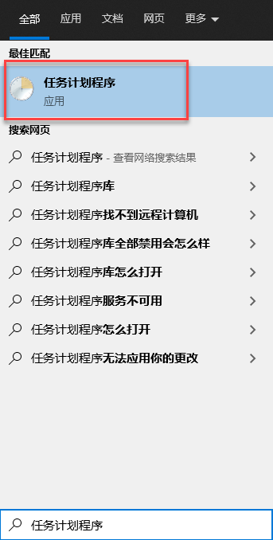
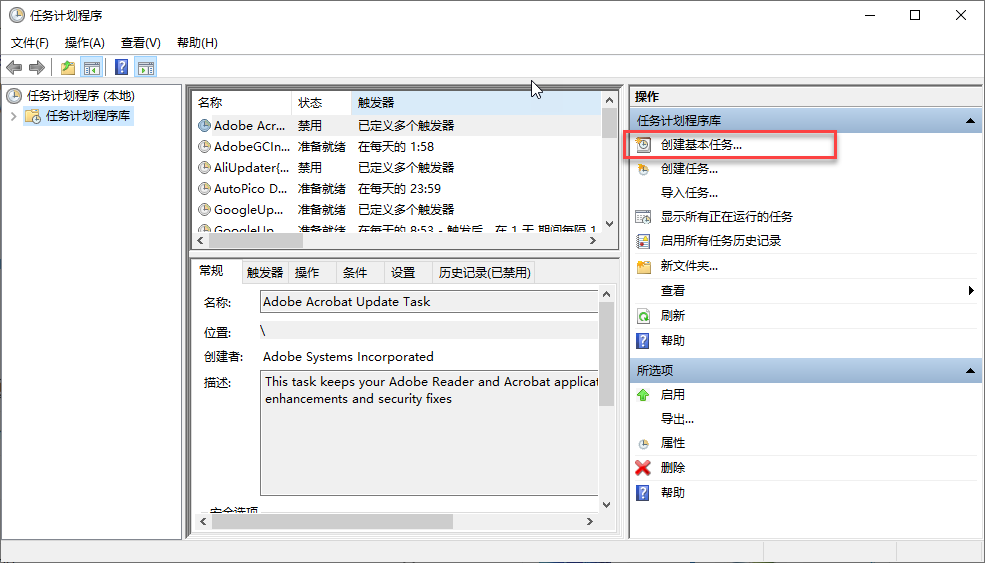
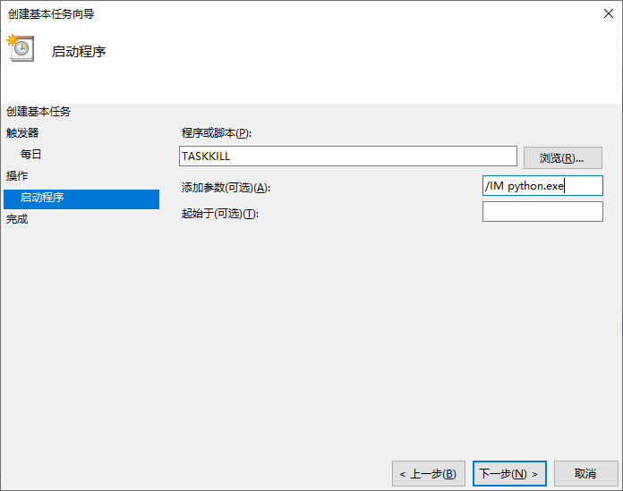
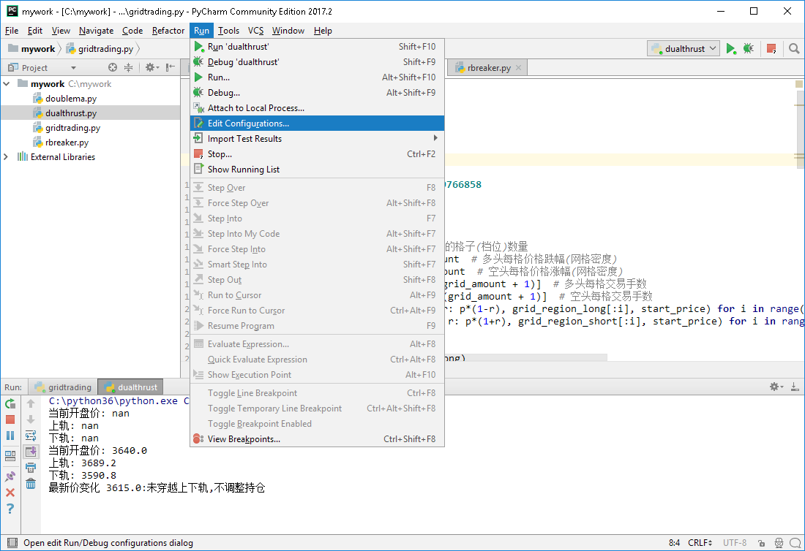
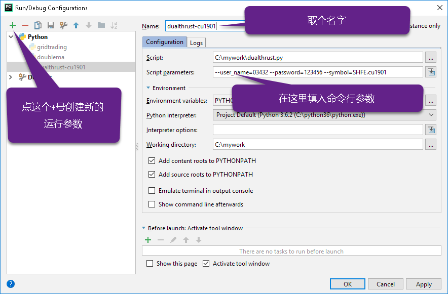
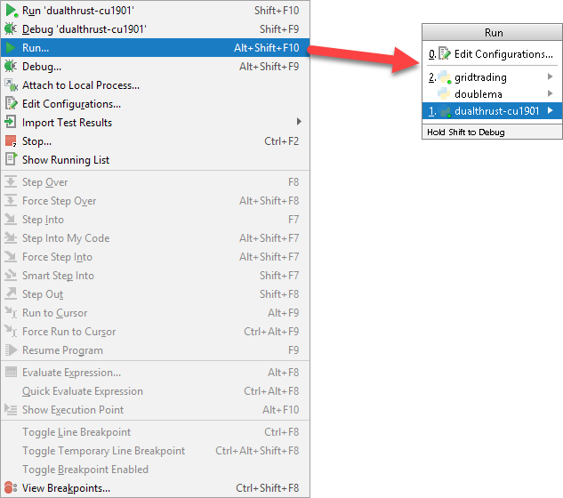

{kind=link}
TianQin Python Sdk User Guide¶
本文档是 TqSdk 的使用说明. 从 TqSdk 中的一些关键概念开始, 逐步介绍如何充分利用 TqSdk 全部功能。
TqSdk 介绍¶
TqSdk是什么¶
TqSdk 是一个由 信易科技 发起并贡献主要代码的开源 python 库. 依托 快期多年积累成熟的交易及行情服务器体系 , TqSdk 支持用户使用很少的代码量构建各种类型的量化交易策略程序, 并提供包含 历史数据-实时数据-开发调试-策略回测-模拟交易-实盘交易-运行监控-风险管理 的全套解决方案:
from tqsdk import TqApi, TqAuth, TqAccount, TargetPosTask
api = TqApi(TqAccount("H海通期货", "4003242", "123456"), auth=TqAuth("快期账户", "账户密码")) # 创建 TqApi 实例, 指定交易账户
q_1910 = api.get_quote("SHFE.rb1910") # 订阅近月合约行情
t_1910 = TargetPosTask(api, "SHFE.rb1910") # 创建近月合约调仓工具
q_2001 = api.get_quote("SHFE.rb2001") # 订阅远月合约行情
t_2001 = TargetPosTask(api, "SHFE.rb2001") # 创建远月合约调仓工具
while True:
api.wait_update() # 等待数据更新
spread = q_1910.last_price - q_2001.last_price # 计算近月合约-远月合约价差
print("当前价差:", spread)
if spread > 250:
print("价差过高: 空近月，多远月")
t_1910.set_target_volume(-1) # 要求把1910合约调整为空头1手
t_2001.set_target_volume(1) # 要求把2001合约调整为多头1手
elif spread < 200:
print("价差回复: 清空持仓") # 要求把 1910 和 2001合约都调整为不持仓
t_1910.set_target_volume(0)
t_2001.set_target_volume(0)
要快速了解如何使用TqSdk, 可以访问我们的 十分钟快速入门
系统架构¶
行情网关 (Open Md Gateway) 负责提供实时行情和历史数据
交易中继网关 (Open Trade Gateway) 负责连接到期货公司交易系统
这两个网关统一以 Diff协议 对下方提供服务
TqSdk按照Diff协议连接到行情网关和交易中继网关, 实现行情和交易功能
功能要点¶
TqSdk 提供的功能可以支持从简单到复杂的各类策略程序.
提供当前所有可交易合约从上市开始的 全部Tick数据和K线数据
支持数十家期货公司的 实盘交易
支持 模拟交易
支持 Tick级和K线级回测, 支持 复杂策略回测
提供近百个 技术指标函数及源码
用户无须建立和维护数据库, 行情和交易数据全在 内存数据库 , 无访问延迟
优化支持 pandas 和 numpy 库
无强制框架结构, 支持任意复杂度的策略, 在一个交易策略程序中使用多个品种的K线/实时行情并交易多个品种
编程风格¶
TqSdk使用单线程异步模型, 它支持构建各类复杂结构的策略程序, 同时保持高性能及高可读性. 要了解 TqSdk 的编程框架, 请参见 策略程序结构
如果您曾经使用并熟悉过其它量化交易开发工具, 这些文件可以帮助您尽快了解TqSdk与它们的差异:
License¶
TqSdk 在 Apache License 2.0 协议下提供, 使用者可在遵循此协议的前提下自由使用本软件.
十分钟快速入门¶
希望快速开始使用天勤量化(TqSdk)？ 本页面将介绍如何开始使用 TqSdk.
如果您以前曾经使用过其它框架编写过策略程序, 这些内容可以快速帮助您了解 TqSdk 与它们的区别:
注意: TqSdk 使用了 python3 的原生协程和异步通讯库 asyncio，部分 Python IDE 不支持 asyncio，例如:
jupyter: 详见 https://github.com/jupyter/notebook/issues/3397
可以直接运行示例代码，或使用支持 asyncio 的 IDE (例如: pycharm / vscode)
安装¶
天勤量化的核心是TqSdk开发包, 在安装天勤量化 (TqSdk) 前, 你需要先准备适当的环境和Python包管理工具, 包括:
Python >=3.6.4,3.7,3.8,3.9 版本
Windows 7 以上版本, Mac Os, 或 Linux
你可以选择使用 pip 命令安装 TqSdk, 或者下载源代码安装. 对于一般用户, 我们推荐采用 pip 命令安装/升级 TqSdk:
pip install tqsdk -U
但是由于 pip 使用的是国外的服务器，普通用户往往下载速度过慢或不稳定，对于使用 pip 命令下载速度较慢的用户，我们推荐采用切换国内源的方式安装/升级 TqSdk:
pip install tqsdk -U -i https://pypi.tuna.tsinghua.edu.cn/simple --trusted-host=pypi.tuna.tsinghua.edu.cn
注册快期账户¶
在使用 TqSdk 之前，用户需要先注册自己的 快期账户 ，传入快期账户是使用任何 TqSdk 程序的前提,点击 注册快期账户
快期账户可以使用注册时的手机号/用户名/邮箱号进行登录,详细介绍请点击 快期账户
在注册完快期账户后，让我们从一个简单的例子开始
获取实时行情数据¶
通过 TqSdk 获取实时行情数据是很容易的.
首先, 必须引入 tqsdk 模块:
from tqsdk import TqApi, TqAuth
创建API实例，并填入自己的快期账户:
api = TqApi(auth=TqAuth("快期账户", "账户密码"))
获得上期所 ni2206 合约的行情引用:
quote = api.get_quote("SHFE.ni2206")
现在, 我们获得了一个对象 quote. 这个对象总是指向 SHFE.ni2206 合约的最新行情. 我们可以通过 quote 的各个字段访问行情数据:
print (quote.last_price, quote.volume)
要等待行情数据更新, 我们还需要一些代码:
while True:
api.wait_update()
print (quote.datetime, quote.last_price)
wait_update() 是一个阻塞函数, 程序在这行上等待, 直到收到数据包才返回.
上面这个例子的完整程序请见 t10 - 获取实时行情 . 你也可以在自己电脑python安装目录的 site_packages/tqsdk/demo 下找到它
很简单, 对吗? 到这里, 你已经了解用 TqSdk 开发程序的几个关键点:
创建 TqApi 实例
用 api.get_quote() 或 其它函数获取数据引用对象
在循环中用 api.wait_update() 等待数据包.
收到数据包以后通过引用对象获得所需数据
下面我们将继续介绍 TqSdk 更多的功能. 无论使用哪个功能函数, 都遵循上面的结构.
使用K线数据¶
你很可能会需要合约的K线数据. 在TqSdk中, 你可以很方便的获得K线数据. 我们来请求 ni2206 合约的10秒线:
klines = api.get_kline_serial("SHFE.ni2206", 10)
klines是一个pandas.DataFrame对象. 跟 api.get_quote() 一样, api.get_kline_serial() 也是返回K线序列的引用对象. K线序列数据也会跟实时行情一起同步自动更新. 你也同样需要用 api.wait_update() 等待数据刷新.
一旦k线数据收到, 你可以通过 klines 访问 k线数据:
while True:
api.wait_update()
print("最后一根K线收盘价", klines.close.iloc[-1])
这部分的完整示例程序请见 t30 - 使用K线/Tick数据 .
我们也可以通过传入一个合约列表作为参数，来获取包含多个合约数据的K线:
klines = api.get_kline_serial(["SHFE.au1912", "SHFE.au2006"], 5) # 获取SHFE.au2006向SHFE.au1912对齐的K线
详细使用方法及说明请见 get_kline_serial() 函数说明。
到这里为止, 你已经知道了如何获取实时行情和K线数据, 下面一段将介绍如何访问你的交易账户并发送交易指令
生成图形化界面¶
如果想要将你订阅的K线或策略图形化显示, 只需在 TqApi() 中传入参数 web_gui = True即可:
# 引入TqSdk模块
from tqsdk import TqApi, TqAuth
# 创建api实例，设置web_gui=True生成图形化界面
api = TqApi(web_gui=True, auth=TqAuth("快期账户", "账户密码"))
# 订阅 ni2010 合约的10秒线
klines = api.get_kline_serial("SHFE.ni2010", 10)
while True:
# 通过wait_update刷新数据
api.wait_update()
当你运行该程序后，预期会显示如下两条信息:
2019-12-13 10:45:26,468 - INFO - 您可以访问 http://127.0.0.1:62964 查看策略绘制出的 K 线图形。
2019-12-13 10:45:27,422 - INFO - 通知: 与 wss://openmd.shinnytech.com/t/md/front/mobile 的网络连接已建立
点击生成的地址，即可访问订阅的K线图形
具体请见 策略程序图形化界面
交易账户, 下单/撤单¶
要获得你的账户资金情况, 可以请求一个资金账户引用对象:
account = api.get_account()
要获得你交易账户中某个合约的持仓情况, 可以请求一个持仓引用对象:
position = api.get_position("DCE.m1901")
与行情数据一样, 它们也通过 api.wait_update() 获得更新, 你也同样可以访问它们的成员变量:
print("可用资金: %.2f" % (account.available))
print("今多头: %d 手" % (position.volume_long_today))
要在交易账户中发出一个委托单, 使用 api.insert_order() 函数:
order = api.insert_order(symbol="DCE.m2105", direction="BUY", offset="OPEN", volume=5, limit_price=3000)
这个函数调用后会立即返回, order 是一个指向此委托单的引用对象, 你总是可以通过它的成员变量来了解委托单的最新状态:
print("委托单状态: %s, 已成交: %d 手" % (order.status, order.volume_orign - order.volume_left))
要撤销一个委托单, 使用 api.cancel_order() 函数:
api.cancel_order(order)
这部分的完整示例程序请见 t40 - 下单/撤单 .
到这里为止, 我们已经掌握了 TqSdk 中行情和交易相关功能的基本使用. 我们将在下一节中, 组合使用它们, 创建一个自动交易程序
构建一个自动交易程序¶
在这一节中, 我们将创建一个简单的自动交易程序: 每当行情最新价高于最近15分钟均价时, 开仓买进. 这个程序是这样的:
klines = api.get_kline_serial("DCE.m2105", 60)
while True:
api.wait_update()
if api.is_changing(klines):
ma = sum(klines.close.iloc[-15:])/15
print("最新价", klines.close.iloc[-1], "MA", ma)
if klines.close.iloc[-1] > ma:
print("最新价大于MA: 市价开仓")
api.insert_order(symbol="DCE.m2105", direction="BUY", offset="OPEN", volume=5)
上面的代码中出现了一个新函数 api.is_changing(). 这个函数用于判定指定对象是否在最近一次 wait_update 中被更新.
这部分的完整示例程序请见 t60 - 单均线策略 .
按照目标持仓自动交易¶
在某些场景中, 我们可能会发现, 自己写代码管理下单撤单是一件很麻烦的事情. 在这种情况下, 你可以使用 tqsdk.TargetPosTask. 你只需要指定账户中预期应有的持仓手数, TqSdk 会自动通过一系列指令调整仓位直到达成目标. 请看例子:
# 创建 ni2010 的目标持仓 task，该 task 负责调整 ni2010 的仓位到指定的目标仓位
target_pos_near = TargetPosTask(api, "SHFE.ni2010")
# 创建 ni2011 的目标持仓 task，该 task 负责调整 ni2011 的仓位到指定的目标仓位
target_pos_deferred = TargetPosTask(api, "SHFE.ni2011")
while True:
api.wait_update()
if api.is_changing(quote_near) or api.is_changing(quote_deferred):
spread = quote_near.last_price - quote_deferred.last_price
print("当前价差:", spread)
if spread > 200:
print("目标持仓: 空近月，多远月")
# 设置目标持仓为正数表示多头，负数表示空头，0表示空仓
target_pos_near.set_target_volume(-1)
target_pos_deferred.set_target_volume(1)
elif spread < 150:
print("目标持仓: 空仓")
target_pos_near.set_target_volume(0)
target_pos_deferred.set_target_volume(0)
这部分的完整示例程序请见 t80 - 价差回归策略 .
策略回测¶
自己的交易程序写好以后, 我们总是希望在实盘运行前, 能先进行一下模拟测试. 要进行模拟测试, 只需要在创建TqApi实例时, 传入一个backtest参数:
api = TqApi(backtest=TqBacktest(start_dt=date(2018, 5, 1), end_dt=date(2018, 10, 1)), auth=TqAuth("快期账户", "账户密码"))
这样, 程序运行时就会按照 TqBacktest 指定的时间范围进行模拟交易测试, 并输出测试结果.
此外 TqSdk 同时还支持股票的回测交易，请见 对股票合约进行回测
更多关于策略程序回测的详细信息, 请见 策略程序回测
实盘交易¶
要让策略程序在实盘账号运行, 请在创建TqApi时传入一个 TqAccount , 填入 期货公司, 账号, 密码 和快期账户信息(使用前请先 import TqAccount):
from tqsdk import TqApi, TqAuth, TqAccount
api = TqApi(TqAccount("H海通期货", "412432343", "123456"), auth=TqAuth("快期账户", "账户密码"))
更多关于实盘交易细节，请点击 账户与交易
目前支持的期货公司列表, 请点击查看: TqSdk支持的期货公司列表
注册快期账户，请点击 登录用户管理中心
模拟交易和论坛¶
如果您需要使用能保存账户资金及持仓信息的模拟交易功能, 请点击 注册信易账号 ，填写完对应信息之后，并验证成功即可进入 用户论坛 .
刚刚注册完成的快期账户的【手机号】/【邮箱地址】/【用户名】和【密码】可以作为 快期模拟 账号，通过 TqKq 对 auth 传入参数进行登录，这个 快期模拟 账户在快期APP、快期V3 pro 和天勤量化上是互通的
快期模拟的资金可以通过快期APP、快期专业版的模拟银行进行出入金:
from tqsdk import TqApi, TqAuth, TqKq
api = TqApi(TqKq(), auth=TqAuth("快期账户", "账户密码"))
特别的，如果创建TqApi实例时没有提供任何 TqAcccount 账户或 TqKq 模块，则每次会自动创建一个临时模拟账号，当程序运行结束时，临时账号内的记录将全部丢失:
api = TqApi(auth=TqAuth("快期账户", "账户密码"))
TqSdk 学习视频¶
TqSdk 提供简单易懂的十分钟上手视频 供用户学习
更多内容¶
使用TqSdk¶
策略程序结构¶
TqApi¶
tqsdk.TqApi 是 TqSdk 的核心类. 通常情况下, 每个使用了 TqSdk 的程序都应该包括 一个 TqApi 实例:
api = TqApi(auth=TqAuth("快期账户", "账户密码"))
TqApi 实例负责:
建立websocket连接到服务器.
在内存中建立数据存储区, 接收行情和交易业务数据包, 并自动维护数据更新.
发出交易指令.
管理协程任务.
执行策略回测.
TqApi 创建时, 需要提供一个account参数. 它可以是:
一个
tqsdk.TqAccount实例: 使用实盘帐号, 直连行情和交易服务器, 需提供期货公司/帐号/密码一个
tqsdk.TqSim实例: 使用 Api 自带的模拟功能, 直连行情服务器接收行情数据如果未提供 account 参数, 或者 account == None, 则会自动创建并使用一个
tqsdk.TqSim实例
此外还需要传入用户的快期账户，参见 快期账户
TqApi 的其它构建参数请见 tqsdk.TqApi
关键函数: wait_update¶
wait_update() 是 TqApi 中最重要的一个函数. 每次调用 wait_update() 函数时将发生这些事:
实际发出网络数据包. 例如, 策略程序用 insert_order 函数下单, 实际的报单指令是在 insert_order 后调用
wait_update()时发出的让正在运行中的后台任务获得动作机会．例如, 策略程序中创建了一个后台调仓任务, 这个任务只会在
wait_update()时发出交易指令尝试从服务器接收一个数据包, 并用收到的数据包更新内存中的业务数据截面.
如果没有收到数据包，则挂起等待，如果要避免长时间挂起，可通过设置
wait_update()中的deadline参数，设置等待截止时间
因此, TqSdk 要求策略程序必须反复调用 wait_update(), 才能保证整个程序正常运行. 一般会将 wait_update() 放在一个循环中反复调用
（注: 若跳出循环，程序结束前需调用 api.close() 释放资源):
while True: #一个循环
api.wait_update() #总是调用 wait_update, 当数据有更新时 wait_update 函数返回, 执行下一句
do_some_thing() #每当数据有变更时, 执行自己的代码, 然后循环回去再做下一次 wait_update
#注：若跳出循环并运行到程序末尾，在结束运行前需调用 api.close() 函数以关闭天勤接口实例并释放相应资源，请见下文 “一个典型程序的结构”
内存数据及数据更新¶
TqApi 实例内存中保存了一份完整业务数据截面, 包括行情/K线和交易账户数据. 这些数据可以通过 TqApi 提供的数据引用函数获取，以获取资金账户为例:
account = api.get_account() # 获取账户信息引用
print(account.balance) # 显示账户信息
值得注意的是, get_account 返回资金账户的一个动态引用, 而不是具体的数值.
因此只需调用一次 get_account 得到 account 引用，之后任何时刻都可以使用 account.balance 获得最新的账户权益.
当 wait_update() 函数返回时业务截面即完成了从上一个时间截面推进到下一个时间截面。
wait_update() 会在任何数据更新时返回. 如果想知道 wait_update() 到底更新了哪些业务数据可以调用 is_changing() 函数判断感兴趣的业务对象是否有更新，例如:
if api.is_changing(account):
print("账户变化") #任何资金账户中任意信息变化的时候打出 "账户变化"
if api.is_changing(account, "balance"):
print("账户权益变化") #只有资金账户中的权益值变化的时候打出 "账户权益变化"
- 建议跨交易日重启代码 ,否则可能导致:
合约信息不能及时更新（如：有新上市的合约,保持登录的第二个交易日就没有这个合约信息)
前一交易日的未成交委托单没有删除更新
如果使用了交易辅助工具 TargetPosTask 并且收盘后有挂单，导致 TargetPosTask 在下一交易日无法继续执行
其他未知问题.
一个典型程序的结构¶
以一个通常的策略流程为例：判断开仓条件，开仓，判断平仓条件，平仓，使用 TqSdk 写出的代码:
from tqsdk import TqApi, TqAuth, TqSim, TargetPosTask
api = TqApi(auth=TqAuth("快期账户", "账户密码"))
klines = api.get_kline_serial("SHFE.rb1901", 60)
position = api.get_position("SHFE.rb1901")
target_pos = TargetPosTask(api, "SHFE.rb1901")
while True: #判断开仓条件的主循环
api.wait_update() #等待业务数据更新
if 开仓条件:
target_pos.set_target_volume(1) #如果触发了，则通过 target_pos 将 SHFE.rb1901 的目标持仓设置为多头 1 手，具体的调仓工作则由 target_pos 在后台完成
break #跳出开仓循环，进入下面的平仓循环
while True: #判断平仓条件的主循环
api.wait_update()
if 平仓条件:
target_pos.set_target_volume(0) #如果触发了，则通过 target_pos 将 SHFE.rb1901 的目标持仓设置为0手(即空仓)
if position.pos == 0: #如果已经将仓位平掉则跳出循环
break
api.close() #注意：程序结束运行前需调用此函数以关闭天勤接口实例并释放相应资源，同时此函数会包含发送最后一次wait_update信息传输
#至此就完成一次完整的开平仓流程，如果平仓后还需再判断开仓条件可以把开仓循环和平仓循环再套到一个大循环中。
快期账户¶
在使用 TqSdk 之前，用户需要先注册自己的 快期账户 ，传入快期账户是使用任何 TqSdk 程序的前提
如需注册，请点击 注册快期账户
from tqsdk import TqApi, TqAuth
api = TqApi(auth=TqAuth("快期账户", "账户密码"))
用快期账户来模拟交易¶
注册完成的快期账户的【手机号】/【邮箱地址】/【用户名】和【密码】可以作为 快期模拟 账号，通过 TqKq 对 auth 传入参数进行登录，这个 快期模拟 账户在快期APP、快期专业版 和天勤量化上是互通的:
from tqsdk import TqApi, TqAuth, TqKq
api = TqApi(TqKq(), auth=TqAuth("快期账户", "账户密码"))
用快期账户来实盘交易¶
对于 TqSdk 免费版，每个快期账户支持最多绑定一个实盘账户，而天勤量化专业版支持一个快期账户绑定任意多个实盘账户
快期账户会在用户使用实盘账户时自动进行绑定，直到该快期账户没有能绑定实盘账户的名额(自动绑定功能需要 TqSdk 版本> 1.8.3):
from tqsdk import TqApi, TqAccount, TqAuth, TqKq
api = TqApi(TqAccount("H海通期货", "320102", "123456"), auth=TqAuth("快期账户", "账户密码"))
如果需要注册快期账户或者修改您的快期账户绑定的实盘账户请参见 登录用户管理中心
登录用户管理中心¶
点击 登录用户管理中心 ，可以注册快期账户或者修改您的快期账户绑定的实盘账户
登录成功后显示如下，在下方红框处,用户可以自行解绑/绑定实盘账户，其中解绑操作每天限定一次

如需一个快期账户支持更多的实盘账户，请联系工作人员进行批量购买 天勤量化专业版
合约, 行情和历史数据¶
合约代码¶
TqSdk中的合约代码, 统一采用 交易所代码.交易所内品种代码 的格式. 交易所代码为全大写字母, 交易所内品种代码的大小写规范, 遵从交易所规定, 大小写敏感.
其中 TqSdk 免费版本提供全部的期货、商品/金融期权和上证50、沪深300、中证500和中证1000的实时行情
购买或申请 TqSdk 专业版试用后可提供A股股票的实时和历史行情，具体免费版和专业版的区别，请点击 天勤量化专业版
目前 TqSdk 支持的交易所包括:
CODE |
NAME |
|---|---|
SHFE |
上海期货交易所 |
DCE |
大连商品交易所 |
CZCE |
郑州商品交易所 |
CFFEX |
中国金融交易所 |
INE |
上海能源中心(原油在这里) |
KQ |
快期 (所有主连合约, 指数都归属在这里) |
SSWE |
上期所仓单 |
SSE |
上海证券交易所 |
SZSE |
深圳证券交易所 |
GFEX |
广州期货交易所 |
一些合约代码示例:
SHFE.cu1901 - 上期所 cu1901 期货合约
DCE.m1901 - 大商所 m1901 期货合约
CZCE.SR901 - 郑商所 SR901 期货合约
CFFEX.IF1901 - 中金所 IF1901 期货合约
INE.sc2109 - 上期能源 sc2109 期货合约
GFEX.si2301 - 广期所 si2301 期货合约
CZCE.SPD SR901&SR903 - 郑商所 SR901&SR903 跨期合约
DCE.SP a1709&a1801 - 大商所 a1709&a1801 跨期合约
GFEX.SP si2308&si2309 - 广期所 si2308&si2309 跨期组合
DCE.m1807-C-2450 - 大商所豆粕期权
CZCE.CF003C11000 - 郑商所棉花期权
SHFE.au2004C308 - 上期所黄金期权
CFFEX.IO2002-C-3550 - 中金所沪深300股指期权
INE.sc2109C450 - 上期能源原油期权
GFEX.si2308-C-5800 - 广期所硅期权
KQ.m@CFFEX.IF - 中金所IF品种主连合约
KQ.i@SHFE.bu - 上期所bu品种指数
SSWE.CUH - 上期所仓单铜现货数据
SSE.600000 - 上交所浦发银行股票编码
SZSE.000001 - 深交所平安银行股票编码
SSE.000016 - 上证50指数
SSE.000300 - 沪深300指数
SSE.000905 - 中证500指数
SSE.000852 - 中证1000指数
SSE.510050 - 上交所上证50ETF
SSE.510300 - 上交所沪深300ETF
SZSE.159919 - 深交所沪深300ETF
SSE.10002513 - 上交所上证50ETF期权
SSE.10002504 - 上交所沪深300ETF期权
SZSE.90000097 - 深交所沪深300ETF期权
SZSE.159915 - 易方达创业板ETF
SZSE.90001277 - 创业板ETF期权
SZSE.159922 - 深交所中证500ETF
SZSE.90001355 - 深交所中证500ETF期权
SSE.510500 - 上交所中证500ETF
SSE.10004497 - 上交所中证500ETF期权
SZSE.159901 - 深交所100ETF
注意：并非所有合约都是可交易合约.
需要注意郑商所的期货合约格式为合约字母大写，并且只有三位数字位，同时不同家交易所的期权代码格式也各不相同
天勤指数的计算方式为根据在市期货合约的昨持仓量加权平均
天勤主力的选定标准为该合约持仓量和成交量均为最大后，在下一个交易日开盘后进行切换，且切换后不会再切换到之前的合约
实时行情¶
get_quote() 函数提供实时行情和合约信息:
q = api.get_quote("SHFE.cu2201")
返回值为一个dict, 结构如下:
{
"datetime": "2021-08-17 14:59:59.000001", # 行情从交易所发出的时间(北京时间)
"ask_price1": 69750.0, # 卖一价
"ask_volume1": 1, # 卖一量
"bid_price1": 69600.0, # 买一价
"bid_volume1": 2, # 买一量
"ask_price2": 69920.0, # 卖二价
"ask_volume2": 3, # 卖二量
"bid_price2": 69500.0, # 买二价
"bid_volume2": 3, # 买二量
"ask_price3": 69940.0, # 卖三价
"ask_volume3": 1, # 卖三量
"bid_price3": 69450.0, # 买三价
"bid_volume3": 1, # 买三量
"ask_price4": 70010.0, # 卖四价
"ask_volume4": 1, # 卖四量
"bid_price4": 69400.0, # 买四价
"bid_volume4": 1, # 买四量
"ask_price5": 70050.0, # 卖五价
"ask_volume5": 1, # 卖五量
"bid_price5": 69380.0, # 买五价
"bid_volume5": 1, # 买五量
"last_price": 69710.0, # 最新价
"highest": 70050.0, # 当日最高价
"lowest": 69520.0, # 当日最低价
"open": 69770.0, # 开盘价
"close": 69710.0, # 收盘价
"average": 69785.019711, # 当日均价
"volume": 761, # 成交量
"amount": 265532000.0, # 成交额
"open_interest": 8850, # 持仓量
"settlement": 69780.0, # 结算价
"upper_limit": 75880.0, # 涨停价
"lower_limit": 64630.0, # 跌停价
"pre_open_interest": 8791, # 昨持仓量
"pre_settlement": 70260.0, # 昨结算价
"pre_close": 69680.0, # 昨收盘价
"price_tick": 10.0, # 合约价格变动单位
"price_decs": 0, # 合约价格小数位数
"volume_multiple": 5.0, # 合约乘数
"max_limit_order_volume": 500, # 最大限价单手数
"max_market_order_volume": 0, # 最大市价单手数
"min_limit_order_volume": 0, # 最小限价单手数
"min_market_order_volume": 0, # 最小市价单手数
"underlying_symbol": "", # 标的合约
"strike_price": NaN, # 行权价
"ins_class": "FUTURE", # 合约类型
"instrument_id": "SHFE.cu2201", # 合约代码
"instrument_name": "沪铜2201", # 合约中文名
"exchange_id": "SHFE", # 交易所代码
"expired": false, # 合约是否已下市
"trading_time": "{'day': [['09:00:00', '10:15:00'], ['10:30:00', '11:30:00'], ['13:30:00', '15:00:00']], 'night': [['21:00:00', '25:00:00']]}", # 交易时间段
"expire_datetime": 1642402800.0, # 到期具体日，以秒为单位的 timestamp 值
"delivery_year": 2022, # 期货交割日年份，只对期货品种有效。期权推荐使用最后行权日年份
"delivery_month": 1, # 期货交割日月份，只对期货品种有效。期权推荐使用最后行权日月份
"last_exercise_datetime": NaN, # 期权最后行权日，以秒为单位的 timestamp 值
"exercise_year": 0, # 期权最后行权日年份，只对期权品种有效。
"exercise_month": 0, # 期权最后行权日月份，只对期权品种有效。
"option_class": "", # 期权行权方式，看涨:'CALL'，看跌:'PUT'
"exercise_type": "", # 期权行权方式，美式:'A'，欧式:'E'
"product_id": "cu", # 品种代码
"iopv": NaN, # ETF实时单位基金净值
"public_float_share_quantity": 0, # 日流通股数，只对证券产品有效。
"stock_dividend_ratio": [], # 除权表 ["20190601,0.15","20200107,0.2"…]
"cash_dividend_ratio": [], # 除息表 ["20190601,0.15","20200107,0.2"…]
"expire_rest_days": 153, # 距离到期日的剩余天数（自然日天数），正数表示距离到期日的剩余天数，0表示到期日当天，负数表示距离到期日已经过去的天数
"commission": 17.565,
"margin": 31617.0
}
对于每个合约, 只需要调用一次 get_quote 函数. 如果需要监控数据更新, 可以使用 wait_update():
q = api.get_quote("SHFE.cu1812") # 获取SHFE.cu1812合约的行情
while api.wait_update():
print(q.last_price) # 收到新行情时都会执行这行
K线数据¶
get_kline_serial() 函数获取指定合约和周期的K线序列数据:
klines = api.get_kline_serial("SHFE.cu1812", 10) # 获取SHFE.cu1812合约的10秒K线
获取按照时间对齐的多合约K线:
klines = api.get_kline_serial(["SHFE.au1912", "SHFE.au2006"], 5) # 获取SHFE.au2006向SHFE.au1912对齐的K线
详细使用方法及说明请见 get_kline_serial() 函数使用说明。
get_kline_serial() 的返回值是一个 pandas.DataFrame, 包含以下列:
id: 1234 (k线序列号)
datetime: 1501080715000000000 (K线起点时间(按北京时间)，自unix epoch(1970-01-01 00:00:00 GMT)以来的纳秒数)
open: 51450.0 (K线起始时刻的最新价)
high: 51450.0 (K线时间范围内的最高价)
low: 51450.0 (K线时间范围内的最低价)
close: 51450.0 (K线结束时刻的最新价)
volume: 11 (K线时间范围内的成交量)
open_oi: 27354 (K线起始时刻的持仓量)
close_oi: 27355 (K线结束时刻的持仓量)
要使用K线数据, 请使用 pandas.DataFrame 的相关函数. 常见用法示例如下:
klines.iloc[-1].close # 最后一根K线的收盘价
klines.close # 收盘价序列, 一个 pandas.Serial
TqSdk中, K线周期以秒数表示，支持不超过1日的任意周期K线，例如:
api.get_kline_serial("SHFE.cu1901", 70) # 70秒线
api.get_kline_serial("SHFE.cu1901", 86400) # 86400秒线, 即日线
api.get_kline_serial("SHFE.cu1901", 86500) # 86500秒线, 超过1日，无效
TqSdk中最多可以获取每个K线序列的最后8000根K线，无论哪个周期。也就是说，你如果提取小时线，最多可以提取最后8000根小时线，如果提取分钟线，最多也是可以提取最后8000根分钟线。
对于每个K线序列, 只需要调用一次 get_kline_serial() . 如果需要监控数据更新, 可以使用 wait_update()
klines = api.get_kline_serial("SHFE.cu1812", 10) # 获取SHFE.cu1812合约的10秒K线
while api.wait_update():
print(klines.iloc[-1]) # K线数据有任何变动时都会执行这行
如果只想在新K线出现时收到信号, 可以配合使用 is_changing():
klines = api.get_kline_serial("SHFE.cu1812", 10) # 获取SHFE.cu1812合约的10秒K线
while api.wait_update():
if api.is_changing(klines.iloc[-1], "datetime"): # 判定最后一根K线的时间是否有变化
print(klines.iloc[-1]) # 当最后一根K线的时间有变(新K线生成)时才会执行到这里
Tick序列¶
get_tick_serial() 函数获取指定合约的Tick序列数据:
ticks = api.get_tick_serial("SHFE.cu1812") # 获取SHFE.cu1812合约的Tick序列
get_tick_serial() 的返回值是一个 pandas.DataFrame, 常见用法示例如下:
ticks.iloc[-1].bid_price1 # 最后一个Tick的买一价
ticks.volume # 成交量序列, 一个 pandas.Serial
tick序列的更新监控, 与K线序列采用同样的方式.
关于合约及行情的一些常见问题¶
怎样同时监控多个合约的行情变化
TqSdk可以订阅任意多个行情和K线, 并在一个wait_update中等待更新. 像这样:
q1 = api.get_quote("SHFE.cu1901") q2 = api.get_quote("SHFE.cu1902") k1 = api.get_kline_serial("SHFE.cu1901", 60) k2 = api.get_kline_serial("SHFE.cu1902", 60) while api.wait_update(): print("收到数据了") # 上面4项中的任意一项有变化, 都会到这一句. 具体是哪个或哪几个变了, 用 is_changing 判断 if api.is_changing(q1): print(q1) # 如果q1变了, 就会执行这句 if api.is_changing(q2): print(q2) if api.is_changing(k1): print(k1) if api.is_changing(k2): print(k2)关于
wait_update()和is_changing()的详细说明, 请见 策略程序结构
技术指标与序列计算函数¶
技术指标¶
tqsdk.ta 模块中包含了大量技术指标. 每个技术指标是一个函数, 函数名为全大写, 第一参数总是K线序列, 以pandas.DataFrame格式返回计算结果. 以MACD为例:
from tqsdk.ta import MACD
klines = api.get_kline_serial("SHFE.cu1812", 60) # 提取SHFE.cu1812的分钟线
result = MACD(klines, 12, 26, 9) # 计算MACD指标
print(result["diff"]) # MACD指标中的diff序列
tqsdk.ta 中目前提供的技术指标详表，请见 tqsdk.ta - 技术指标计算函数
序列计算函数¶
tqsdk.tafunc 模块中包含了一批序列计算函数. 它们是构成技术指标的基础. 在某些情况下, 您也可以直接使用这些序列计算函数以获取更大的灵活性.
例如, 技术指标MA(均线)总是按K线的收盘价来计算, 如果你需要计算最高价的均线, 可以使用ma函数:
from tqsdk.tafunc import ma
klines = api.get_kline_serial("SHFE.cu1812", 60) # 提取SHFE.cu1812的分钟线
result = ma(klines.high, 9) # 按K线的最高价序列做9分钟的移动平均
print(result) # 移动平均结果
tqsdk.tafunc 中目前提供的序列计算函数详表，请见 tqsdk.tafunc - 序列计算函数
账户与交易¶
快期账户和实盘账户¶
在使用 TqSdk 之前，用户需要先注册自己的 快期账户 ，传入快期账户是使用任何 TqSdk 程序的前提
点击 注册快期账户
from tqsdk import TqApi, TqAuth
api = TqApi(auth=TqAuth("快期账户", "账户密码"))
对于 TqSdk 免费版，每个快期账户支持最多绑定一个实盘账户，并且快期账户会在用户第一次使用实盘账户时自动进行绑定(自动绑定功能需要 TqSdk 版本> 1.8.3):
from tqsdk import TqApi, TqAuth
api = TqApi(auth=TqAuth("快期账户", "账户密码"))
如果需要注册快期账户或者修改您的快期账户绑定的实盘账户，请点击 登录用户管理中心 ，登录成功后显示如下
在下方红框处,用户可以自行解绑/绑定实盘账户，其中解绑操作每天限定一次
如果需要让您的快期账户支持更多的实盘账户，可以购买或申请试用我们的 天勤量化专业版
设定实盘交易账户¶
TqSdk 要求在创建 TqApi 时指定交易账户。一旦TqApi创建成功，后续所有通过TqApi发出的交易指令均在此账户中进行.
要使用实盘交易账户, 请使用 TqAccount (注：使用前请先 import TqAccount):
from tqsdk import TqAccount, TqApi, TqAuth
api = TqApi(TqAccount("H海通期货", "320102", "123456"), auth=TqAuth("快期账户", "账户密码"))
TqAccount 的三个参数分别为 <期货公司名>, <用户名> 和 <密码> (期货公司名前需加大写首字母). 目前TqSdk支持的期货公司列表请参见: TqSdk支持的期货公司列表
TqApi 创建成功即代表相应账户已登录成功. 如果在60秒内无法完成登录, 会抛出超时异常, 用户代码可以此判定登录失败:
try:
api = TqApi(TqAccount("H海通期货", "320102", "123456"), auth=TqAuth("快期账户", "账户密码"))
except Exception as e:
print("行情服务连不上, 或者期货公司服务器关了, 或者账号密码错了, 总之就是有问题")
设定快期模拟交易账户¶
如果您需要使用快期模拟账户进行测试，只需在创建TqApi时传入一个 TqKq 的实例，同时需要传入快期账户 模拟交易和论坛。
此账户类型与快期 APP 、天勤官网论坛、快期专业版使用相同的模拟账户系统:
from tqsdk import TqApi, TqAuth, TqKq
api = TqApi(TqKq(), auth=TqAuth("快期账户", "账户密码"))
设定模拟交易账户¶
如果您需要使用模拟账户进行测试，只需在创建TqApi时传入一个 TqSim 的实例（不填写参数则默认为 TqSim() 模拟账号）:
api = TqApi(TqSim()，auth=TqAuth("快期账户", "账户密码"))
如果需要使用能保存账户资金及持仓信息的模拟账户，请使用 "快期模拟" 账号, 账户申请及使用方法请参考 模拟交易和论坛 部分内容。
获取账户情况¶
TqApi 提供以下函数来获取交易账户相关信息:
get_account()- 获取账户资金情况get_position()- 获取持仓情况get_order()- 获取委托单
以上函数返回的都是dict, 并会在 wait_update 时更新
交易指令¶
要在交易账户中发出一个委托单, 使用 insert_order() 函数:
order = api.insert_order(symbol="SHFE.rb1901", direction="BUY", offset="OPEN", limit_price=4310, volume=2)
print(order)
这个函数调用后会立即返回一个指向此委托单的对象引用, 使用方法与dict一致, 内容如下:
{
"order_id": "", # "123" (委托单ID, 对于一个用户的所有委托单，这个ID都是不重复的)
"exchange_order_id": "", # "1928341" (交易所单号)
"exchange_id": "", # "SHFE" (交易所)
"instrument_id": "", # "rb1901" (交易所内的合约代码)
"direction": "", # "BUY" (下单方向, BUY=买, SELL=卖)
"offset": "", # "OPEN" (开平标志, OPEN=开仓, CLOSE=平仓, CLOSETODAY=平今)
"volume_orign": 0, # 10 (总报单手数)
"volume_left": 0, # 5 (未成交手数)
"limit_price": float("nan"), # 4500.0 (委托价格, 仅当 price_type = LIMIT 时有效)
"price_type": "", # "LIMIT" (价格类型, ANY=市价, LIMIT=限价)
"volume_condition": "", # "ANY" (手数条件, ANY=任何数量, MIN=最小数量, ALL=全部数量)
"time_condition": "", # "GFD" (时间条件, IOC=立即完成，否则撤销, GFS=本节有效, GFD=当日有效, GTC=撤销前有效, GFA=集合竞价有效)
"insert_date_time": 0, # 1501074872000000000 (下单时间(按北京时间)，自unix epoch(1970-01-01 00:00:00 GMT)以来的纳秒数)
"status": "", # "ALIVE" (委托单状态, ALIVE=有效, FINISHED=已完)
"last_msg": "", # "报单成功" (委托单状态信息)
}
与其它所有数据一样, 委托单的信息也会在 api.wait_update() 时被自动更新:
order = api.insert_order(symbol="SHFE.rb1901", direction="BUY", offset="OPEN", limit_price=4310,volume=2)
while order.status != "FINISHED":
api.wait_update()
print("委托单状态: %s, 未成交手数: %d 手" % (order.status, order.volume_left))
要撤销一个委托单, 使用 cancel_order() 函数:
api.cancel_order(order)
除 insert_order 和 cancel_order 外, TqSdk 提供了一些更强的交易辅助工具比如
TargetPosTask. 使用这些工具, 可以简化交易逻辑的编码工作.
TqSdk支持的期货公司列表¶
请点击查看: TqSdk支持的期货公司列表
期权交易 & 交易所官方组合¶
TqSdk 中期权交易(商品期权、金融期权和 ETF 期权)和交易所官方组合交易，均是 TqSdk 专业版中的功能
用户如果想在 TqSdk 中进行上述操作，可以点击 天勤量化专业版 申请使用或购买
TqSdk 中期权合和交易所官方组合的约代码格式参考如下:
DCE.m1807-C-2450 - 大商所豆粕期权
CZCE.CF003C11000 - 郑商所棉花期权
SHFE.au2004C308 - 上期所黄金期权
CFFEX.IO2002-C-3550 - 中金所沪深300股指期权
SSE.10002513 - 上交所上证50etf期权
SSE.10002504 - 上交所沪深300etf期权
SZSE.90000097 - 深交所沪深300etf期权
CZCE.SPD SR901&SR903 - 郑商所 SR901&SR903 跨期合约
DCE.SP a1709&a1801 - 大商所 a1709&a1801 跨期合约
对于交易所官方组合，目前 TqSdk 中只支持交易所官方组合进行实盘交易
期权指标计算&序列计算函数¶
TqSdk 内提供了丰富的期权指标计算&序列计算函数，参考如下：
OPTION_GREEKS()- 计算期权希腊指标OPTION_IMPV()- 计算期权隐含波动率BS_VALUE()- 计算期权 BS 模型理论价格OPTION_VALUE()- 计算期权内在价值，期权时间价值get_bs_price()- 计算期权 BS 模型理论价格get_delta()- 计算期权希腊指标 delta 值get_gamma()- 计算期权希腊指标 gamma 值get_rho()- 计算期权希腊指标 rho 值get_theta()- 计算期权希腊指标 theta 值get_vega()- 计算期权希腊指标 vega 值get_his_volatility()- 计算某个合约的历史波动率get_t()- 计算 K 线序列对应的年化到期时间，主要用于计算期权相关希腊指标时，需要得到计算出序列对应的年化到期时间
期权查询函数¶
TqSdk 内提供了完善的期权查询函数 query_options() 和对应平值虚值期权查询函数 query_atm_options() ，供用户搜索符合自己需求的期权:
from tqsdk import TqApi, TqAuth
api = TqApi(auth=TqAuth("快期账户", "账户密码"))
ls = api.query_options("SHFE.au2012")
print(ls) # 标的为 "SHFE.au2012" 的所有期权
ls = api.query_options("SHFE.au2012", option_class="PUT")
print(ls) # 标的为 "SHFE.au2012" 的看跌期权
ls = api.query_options("SHFE.au2012", option_class="PUT", expired=False)
print(ls) # 标的为 "SHFE.au2012" 的看跌期权, 未下市的
ls = api.query_options("SHFE.au2012", strike_price=340)
print(ls) # 标的为 "SHFE.au2012" 、行权价为 340 的期权
ls = api.query_options("SSE.510300", exchange_id="CFFEX")
print(ls) # 中金所沪深300股指期权
ls = api.query_options("SSE.510300", exchange_id="SSE")
print(ls) # 上交所沪深300etf期权
ls = api.query_options("SSE.510300", exchange_id="SSE", exercise_year=2020, exercise_month=12)
print(ls) # 上交所沪深300etf期权, 限制条件 2020 年 12 月份行权
交易辅助工具¶
TargetPosTask 是按照目标持仓手数自动调整 账户持仓中某合约的净持仓 的工具, 使用示例如下:
target_pos = TargetPosTask(api, "SHFE.rb1901") #创建一个自动调仓工具, 负责调整SHFE.rb1901的持仓
target_pos.set_target_volume(5) #要求自动调仓工具将持仓调整到5手
do_something_else() #现在你可以做别的事了, 自动调仓工具将会在后台自动下单/撤单/跟单, 直到持仓手数达到5手为止
下面是一个更实际的价差交易例子:
from tqsdk import TqApi, TqAuth, TargetPosTask
api = TqApi(auth=TqAuth("快期账户", "账户密码"))
# 创建 rb1810 的目标持仓 task，该 task 负责调整 rb1810 的仓位到指定的目标仓位
target_pos_near = TargetPosTask(api, "SHFE.rb1810")
# 创建 rb1901 的目标持仓 task，该 task 负责调整 rb1901 的仓位到指定的目标仓位
target_pos_deferred = TargetPosTask(api, "SHFE.rb1901")
while True:
api.wait_update()
if api.is_changing(quote_near) or api.is_changing(quote_deferred):
spread = quote_near.last_price - quote_deferred.last_price
print("当前价差:", spread)
if spread > 200:
print("目标持仓: 空近月，多远月")
# 设置目标持仓为正数表示多头，负数表示空头，0表示空仓
target_pos_near.set_target_volume(-1)
target_pos_deferred.set_target_volume(1)
elif spread < 150:
print("目标持仓: 空仓")
target_pos_near.set_target_volume(0)
target_pos_deferred.set_target_volume(0)
使用 TargetPosTask 时, 需注意以下要点：
TargetPosTask 在 set_target_volume 时并不下单或撤单, 它的下单和撤单动作, 是在之后的每次 wait_update 时执行的. 因此, 需保证 set_target_volume 后还会继续调用wait_update()
为每个合约只创建一个 TargetPosTask 实例. 一旦创建好后, 可以调用任意多次 set_target_volume 函数, 它总是以最后一次 set_target_volume 设定的手数为工作目标。 如:
from tqsdk import TqApi, TqAuth, TargetPosTask api = TqApi(auth=TqAuth("快期账户", "账户密码")) target_pos = TargetPosTask(api, "SHFE.rb2001") # 设定目标净持仓为空头1手 target_pos.set_target_volume(-1) # 目标净持仓由空头1手改为多头1手 target_pos.set_target_volume(1) while True: # 需在 set_target_volume 后调用 wait_update() 以发出指令 # 当调整到目标净持仓后, 账户中此合约的净持仓为多头1手 api.wait_update()
TargetPosTask 在工作时, 会负责下单和追单, 直至持仓手数达到目标为止.
在将净持仓调整到目标值后, 可能只持有其中一个方向的手数, 也可能同时有多/空头两个方向的持仓(原因有两个: 初始就持有多/空两个方向, 调整持仓时未平完某一方向; 或在调整目标持仓时禁止"平今"或"平昨",然后以开仓操作来调整净持仓).
- 以当前持仓为 多头方向 且目标净持仓为0 为例, 对净持仓的调整逻辑为:
如果 offset_priority 为默认值"今昨,开", 则: 先平多头今仓, (若平完今仓后未达到目标手数)再平多头昨仓, (若平完昨仓后未达到目标手数)再在空头方向开仓.
如果 offset_priority 为"今开"(即禁止平昨仓), 则: 先平多头今仓, (若平完今仓后未达到目标手数)再在空头方向开仓. (禁止平今仓的"昨开"与此类似)
如果 offset_priority 为"开"(即禁止平仓), 则: 直接在空头方向开仓以达到目标净持仓.
注意:
对于上期所和上海能源交易中心合约, 平仓时则直接根据今/昨的手数进行下单. 对于非上期所和能源交易中心: "今仓"和"昨仓" 是服务器按照今/昨仓的定义(本交易日开始时的持仓手数为昨仓, 之后下单的都为今仓)来计算的, 在平仓时, 则根据计算的今昨仓手数进行下单.
如持有大商所某合约并且 offset_priority 为"今开", 而本交易日未下单(在今昨仓的概念上这是"昨仓", 则不进行平仓, 直接用开仓操作来调整净持仓以达到目标.
如需要取消当前 TargetPosTask 任务，请参考 TargetPosTask 高级功能 。
请勿在使用 TargetPosTask 的同时使用 insert_order() 函数, 否则将导致 TargetPosTask 报错或错误下单。
InsertOrderUntilAllTradedTask 是追价下单task, 该task会在行情变化后自动撤单重下，直到全部成交.
策略程序回测¶
策略程序回测是 TqSdk 专业版中的功能，能让用户在不改变代码的情况下去回测自己的策略在历史行情的表现
如果想使用策略回测该功能，可以点击 天勤量化专业版 申请使用或购买
对于 TqSdk 免费版本的用户，每天可以进行3次回测，同时也可以申请模拟账户后模拟运行来检验策略 模拟交易和论坛
执行策略回测¶
使用 TqSdk 编写的策略程序，不需要修改策略代码，只需要在创建 api 实例时给backtest参数传入 TqBacktest , 策略就会进入历史回测模式:
from datetime import date
from tqsdk import TqApi, TqAuth, TqSim, TqBacktest
api = TqApi(TqSim(), backtest=TqBacktest(start_dt=date(2018, 5, 1), end_dt=date(2018, 10, 1)), auth=TqAuth("快期账户", "账户密码"))
使用tqsdk在回测结束后会输出交易记录和每日收盘时的账户资金情况，以及最大回撤、夏普比率等指标，这些数据可以导入到 excel 中或使用其他分析工具进一步处理。
回测示例程序：backtest - 回测
在回测结束时获取回测详细信息¶
要在回测结束时调用您自己写的代码, 可以使用 try/except 机制捕获回测结束信号 BacktestFinished, 像这样:
from tqsdk import BacktestFinished
acc = TqSim()
try:
api = TqApi(acc, backtest=TqBacktest(start_dt=date(2018, 5, 1), end_dt=date(2018, 10, 1)), auth=TqAuth("快期账户", "账户密码"))
#策略代码在这里
#...
except BacktestFinished as e:
# 回测结束时会执行这里的代码
api.close()
print(acc.trade_log) # 回测的详细信息
print(acc.tqsdk_stat) # 回测时间内账户交易信息统计结果，其中包含以下字段
# init_balance 起始资金
# balance 结束资金
# max_drawdown 最大回撤
# profit_loss_ratio 盈亏额比例
# winning_rate 胜率
# ror 收益率
# annual_yield 年化收益率
# sharpe_ratio 年化夏普率
# tqsdk_punchline 天勤点评
回测的详细信息保存在回测所用的模拟账户 TqSim 中, 可以直接访问它的成员变量 trade_log(格式为 日期->交易记录及收盘时的权益及持仓).
同时我们也提供简单的图形化的回测报告功能供大家使用 策略程序图形化界面 ，使用效果参考下图
回测结束在浏览器中查看绘图结果¶
要在回测结束时，如果依然需要在浏览器中查看绘图结果，同时又需要打印回测信息，您应该这样做:
from tqsdk import BacktestFinished
acc = TqSim()
try:
api = TqApi(acc, backtest=TqBacktest(start_dt=date(2018, 5, 1), end_dt=date(2018, 10, 1)), auth=TqAuth("快期账户", "账户密码"))
#策略代码在这里
#...
except BacktestFinished as e:
print(acc.tqsdk_stat) # 回测时间内账户交易信息统计结果，其中包含以下字段
# 由于需要在浏览器中查看绘图结果，因此程序不能退出
while True:
api.wait_update()
回测时获取主连合约标的¶
在天勤中回测时，对于主连合约，我们支持用户使用 quote.underlying_symbol 获取回测当时的标的合约。
示例:
from datetime import date
from tqsdk import TqApi, TqAuth, TqBacktest, BacktestFinished
api = TqApi(backtest=TqBacktest(start_dt=date(2020, 1, 1), end_dt=date(2020, 10, 1)), auth=TqAuth("快期账户", "账户密码"))
quote = api.get_quote("KQ.m@CFFEX.T")
print(quote.datetime, quote.underlying_symbol)
try:
while True:
api.wait_update()
if api.is_changing(quote, "underlying_symbol"):
print(quote.datetime, quote.underlying_symbol)
except BacktestFinished:
api.close()
# 预期输出：
# 2019-12-31 15:14:59.999999 CFFEX.T2003
# 2020-02-19 09:15:00.000000 CFFEX.T2006
# 2020-05-14 09:15:00.000000 CFFEX.T2009
# 2020-08-19 09:30:00.000000 CFFEX.T2012
回测时的成交规则和推进¶
在天勤中回测时，除了期货、期权合约以外，我们还支持使用 指数 进行回测和在回测中交易，指数合约代码格式参见 合约, 行情和历史数据
策略回测时使用内置模拟账户 TqSim , 默认回测资金为1000w , 如果需要修改初始回测资金，只需给 TqSim 传入需要设定的金额即可:
from datetime import date
from tqsdk import TqApi, TqAuth, TqSim, TqBacktest
api = TqApi(TqSim(10000), backtest=TqBacktest(start_dt=date(2018, 5, 1), end_dt=date(2018, 10, 1)), auth=TqAuth("快期账户", "账户密码"))
撮合成交规则为对价成交. 即限价单的价格达到对手盘价格时判定为成交. 不会出现委托单部分成交的情况.
回测时策略程序报单, 会立即做一次成交判定.
回测框架的规则是当没有新的事件需要用户处理时才推进到下一个行情, 也就是这样:
q = api.get_quote("SHFE.cu1901")
api.wait_update() # 这个 wait_update 更新了行情
api.insert_order("SHFE.cu1901", ...) # 程序下单
api.wait_update() # 这个 wait_update 只会更新委托单状态, 行情还是停在原处
api.insert_order("SHFE.cu1901", ...) # 如果又下了一个单
api.wait_update() # 这个 wait_update 还是只会更新委托单状态, 行情还是停在原处
api.wait_update() # 这个 wait_update 更新了行情
对股票合约进行回测¶
TqSdk 在 3.2.0 版本后支持了对股票合约进行回测功能，在回测过程中用户需要初始化 TqSimStock 类，且该类只能支持股票模拟交易
由于股票市场 T+1 的规则, TargetPosTask 函数目前还不支持在股票交易中使用，股票合约交易时只支持使用 insert_order
如果您想要在回测中同时交易期货和股票合约，则可以使用 TqMultiAccount 来实现该需求:
# 同时使用 TqSim 交易期货，TqSimStock 交易股票
from tqsdk import TqApi, TqAuth, TqMultiAccount, TqSim, TqSimStock
tqsim_future = TqSim()
tqsim_stock = TqSimStock()
api = TqApi(account=TqMultiAccount([tqsim_future, tqsim_stock]), auth=TqAuth("快期账户", "账户密码"))
# 多账户下单，需要指定下单账户
order1 = api.insert_order(symbol="SHFE.cu2112", direction="BUY", offset="OPEN", volume=10, limit_price=72250.0, account=tqsim_future)
order2 = api.insert_order(symbol="SSE.603666", direction="BUY", volume=300, account=tqsim_stock)
while order1.status != 'FINISHED' or order2.status != 'FINISHED':
api.wait_update()
# 打印账户可用资金
future_account = tqsim_future.get_account()
stock_account = tqsim_stock.get_account()
print(future_account.available, stock_account.available)
api.close()
回测使用多行情序列的策略程序¶
TqSdk 允许一个策略程序中使用多个行情序列, 比如这样:
#... 策略程序代码
ka1 = api.get_kline_serial("SHFE.cu1901", 60)
ka2 = api.get_kline_serial("SHFE.cu1901", 3600)
kb = api.get_kline_serial("CFFEX.IF1901", 3600)
tsa = api.get_tick_serial("CFFEX.IF1901")
qa = api.get_quote("DCE.a1901")
#... 策略程序代码
TqSdk回测框架使用一套复杂的规则来推进行情：
规则1: tick 序列(例如上面例子中的tsa) 总是按逐 tick 推进:
tsa = api.get_tick_serial("CFFEX.IF1901")
print(tsa.datetime.iloc[-1]) # 2018/01/01 09:30:00.000
api.wait_update() # 推进一个tick
print(tsa.datetime.iloc[-1]) # 2018/01/01 09:30:00.500
规则2: K线序列 (例如上面例子中的ka1, ka2) 总是按周期推进. 每根K线在创建时和结束时各更新一次:
ka2 = api.get_kline_serial("SHFE.cu1901", 3600) # 请求小时线
print(ka2.iloc[-1]) # 2018/01/01 09:00:00.000, O=35000, H=35000, L=35000, C=35000 小时线刚创建
api.wait_update() # 推进1小时, 前面一个小时线结束, 新开一根小时线
print(ka2.iloc[-2]) # 2018/01/01 09:00:00.000, O=35000, H=35400, L=34700, C=34900 9点这根小时线完成了
print(ka2.iloc[-1]) # 2018/01/01 10:00:00.000, O=34900, H=34900, L=34900, C=34900 10点的小时线刚创建
规则3: quote按照以下规则更新:
if 策略程序中使用了这个合约的tick序列:
每次tick序列推进时会更新quote的这些字段 datetime/ask&bid_price1/ask&bid_volume1/last_price/highest/lowest/average/volume/amount/open_interest/price_tick/price_decs/volume_multiple/max&min_limit&market_order_volume/underlying_symbol/strike_price
elif 策略程序中使用了这个合约的K线序列:
每次K线序列推进时会更新quote. 使用 k线生成的 quote 的盘口由收盘价分别加/减一个最小变动单位, 并且 highest/lowest/average/amount 始终为 nan, volume 始终为0.
每次K线序列推进时会更新quote的这些字段 datetime/ask&bid_price1/ask&bid_volume1/last_price/open_interest/price_tick/price_decs/volume_multiple/max&min_limit&market_order_volume/underlying_symbol/strike_price
if 策略程序使用的K线周期大于1分钟:
回测框架会隐式的订阅一个1分钟K线, 确保quote的更新周期不会超过1分钟
else:
回测框架会隐式的订阅一个1分钟K线, 确保quote的更新周期不会超过1分钟
规则4: 策略程序中的多个序列的更新, 按时间顺序合并推进. 每次 wait_update 时, 优先处理用户事件, 当没有用户事件时, 从各序列中选择下一次更新时间最近的, 更新到这个时间:
ka = api.get_kline_serial("SHFE.cu1901", 10) # 请求一个10秒线
kb = api.get_kline_serial("SHFE.cu1902", 15) # 请求一个15秒线
print(ka.iloc[-1].datetime, kb.iloc[-1].datetime) # 2018/01/01 09:00:00, 2018/01/01 09:00:00
api.wait_update() # 推进一步, ka先更新了, 时间推到 09:00:10
print(ka.iloc[-1].datetime, kb.iloc[-1].datetime) # 2018/01/01 09:00:10, 2018/01/01 09:00:00
api.wait_update() # 再推一步, 这次时间推到 09:00:15, kb更新了
print(ka.iloc[-1].datetime, kb.iloc[-1].datetime) # 2018/01/01 09:00:10, 2018/01/01 09:00:15
api.wait_update() # 再推一步, 这次时间推到 09:00:20, ka更新了
print(ka.iloc[-1].datetime, kb.iloc[-1].datetime) # 2018/01/01 09:00:20, 2018/01/01 09:00:15
api.wait_update() # 再推一步, 时间推到 09:00:30, ka, kb都更新了
print(ka.iloc[-1].datetime, kb.iloc[-1].datetime) # 2018/01/01 09:00:30, 2018/01/01 09:00:30
注意 ：如果未订阅 quote，模拟交易在下单时会自动为此合约订阅 quote ，根据回测时 quote 的更新规则，如果此合约没有订阅K线或K线周期大于分钟线 则会自动订阅一个分钟线 。
另外，对 组合合约 进行回测时需注意：只能通过订阅 tick 数据来回测，不能订阅K线，因为K线是由最新价合成的，而交易所发回的组合合约数据中无最新价。
了解更多¶
如果你要做大量回测, 或者试图做参数优化/参数搜索, 请看 批量回测, 参数搜索及其它
如果你在回测时需要图形化界面支持，我们提供 TqSdk 内置强大的图形化界面解决方案 策略程序图形化界面
策略程序图形化界面¶
要在 TqSdk 中实现图形化界面非常简单，在 TqApi 中传入参数 web_gui = True即可，一套方案满足实盘/回测需求
对于需要固定web_gui网址的同学，可以传入本机IP端口 web_gui = "http://192.168.143.0:9876"（需填写本机IP端口） 来进行固定网址
实盘情况下的图形化界面¶
实盘下的示例代码:
# 引入TqSdk模块
from tqsdk import TqApi, TqAuth
# 创建api实例，设置web_gui=True生成图形化界面
api = TqApi(web_gui=True, auth=TqAuth("快期账户", "账户密码"))
# 订阅 cu2002 合约的10秒线
klines = api.get_kline_serial("SHFE.cu2002", 10)
while True:
# 通过wait_update刷新数据
api.wait_update()
当你运行该程序后，预期会显示如下两条信息:
2019-12-13 10:45:26,468 - INFO - 您可以访问 http://127.0.0.1:62964 查看策略绘制出的 K 线图形。
2019-12-13 10:45:27,422 - INFO - 通知: 与 wss://openmd.shinnytech.com/t/md/front/mobile 的网络连接已建立
点击访问地址后，显示网址效果如下:

回测情况下的图形化界面¶
回测情况下，设置完回测区间参数后传入web_gui=True，也可以用同样的方法来生成图形化地址:
from datetime import date
from tqsdk import TqApi, TqAuth, TqBacktest, TargetPosTask
# 在创建 api 实例时传入 TqBacktest 就会进入回测模式,设置web_gui=True开启图形化界面
api = TqApi(backtest=TqBacktest(start_dt=date(2018, 5, 2), end_dt=date(2018, 6, 2)),web_gui=True, auth=TqAuth("快期账户", "账户密码"))
# 获得 m1901 5分钟K线的引用
klines = api.get_kline_serial("DCE.m1901", 5 * 60, data_length=15)
# 创建 m1901 的目标持仓 task，该 task 负责调整 m1901 的仓位到指定的目标仓位
target_pos = TargetPosTask(api, "DCE.m1901")
while True:
api.wait_update()
if api.is_changing(klines):
ma = sum(klines.close.iloc[-15:]) / 15
print("最新价", klines.close.iloc[-1], "MA", ma)
if klines.close.iloc[-1] > ma:
print("最新价大于MA: 目标多头5手")
# 设置目标持仓为多头5手
target_pos.set_target_volume(5)
elif klines.close.iloc[-1] < ma:
print("最新价小于MA: 目标空仓")
# 设置目标持仓为空仓
target_pos.set_target_volume(0)
点击访问地址后，显示网址效果如下:
点击完整回测报告，显示更加详细的报告结果:
如何在 TqSdk 中进行回测可以参见 策略程序回测
示例程序¶
基本使用¶
目录
t10 - 获取实时行情¶
#!/usr/bin/env python
# -*- coding: utf-8 -*-
__author__ = 'chengzhi'
from tqsdk import TqApi, TqAuth
# 创建API实例,传入自己的快期账户
api = TqApi(auth=TqAuth("快期账户", "账户密码"))
# 获得上期所 ni2206 的行情引用，当行情有变化时 quote 中的字段会对应更新
quote = api.get_quote("SHFE.ni2206")
# 输出 ni2206 的最新行情时间和最新价
print(quote.datetime, quote.last_price)
# 关闭api,释放资源
api.close()
t20 - 识别行情更新¶
#!/usr/bin/env python
# -*- coding: utf-8 -*-
__author__ = 'chengzhi'
from tqsdk import TqApi, TqAuth
# 可以指定debug选项将调试信息写入指定的文件中
api = TqApi(debug="debug.log", auth=TqAuth("快期账户", "账户密码"))
quote = api.get_quote("CZCE.FG209")
print(quote.datetime, quote.last_price, quote.ask_price1, quote.ask_price2)
while True:
# 调用 wait_update 等待业务信息发生变化，例如: 行情发生变化, 委托单状态变化, 发生成交等等
# 注意：其他合约的行情的更新也会触发业务信息变化，因此下面使用 is_changing 判断 FG209 的行情是否有变化
api.wait_update()
# 如果 FG209 的任何字段有变化，is_changing就会返回 True
if api.is_changing(quote):
print("行情变化", quote)
# 只有当 FG209 的最新价有变化，is_changing才会返回 True
if api.is_changing(quote, "last_price"):
print("最新价变化", quote.last_price)
# 当 FG209 的买1价/买1量/卖1价/卖1量中任何一个有变化，is_changing都会返回 True
if api.is_changing(quote, ["ask_price1", "ask_volume1", "bid_price1", "bid_volume1"]):
print("盘口变化", quote.ask_price1, quote.ask_volume1, quote.bid_price1, quote.bid_volume1)
t30 - 使用K线/Tick数据¶
#!/usr/bin/env python
# -*- coding: utf-8 -*-
__author__ = 'chengzhi'
from tqsdk import TqApi, TqAuth
import datetime
api = TqApi(auth=TqAuth("快期账户", "账户密码"))
# 获得 i2209 tick序列的引用
ticks = api.get_tick_serial("DCE.i2209")
# 获得 i2209 10秒K线的引用
klines = api.get_kline_serial("DCE.i2209", 10)
print(datetime.datetime.fromtimestamp(klines.iloc[-1]["datetime"] / 1e9))
while True:
api.wait_update()
# 判断整个tick序列是否有变化
if api.is_changing(ticks):
# ticks.iloc[-1]返回序列中最后一个tick
print("tick变化", ticks.iloc[-1])
# 判断最后一根K线的时间是否有变化，如果发生变化则表示新产生了一根K线
if api.is_changing(klines.iloc[-1], "datetime"):
# datetime: 自unix epoch(1970-01-01 00:00:00 GMT)以来的纳秒数
print("新K线", datetime.datetime.fromtimestamp(klines.iloc[-1]["datetime"] / 1e9))
# 判断最后一根K线的收盘价是否有变化
if api.is_changing(klines.iloc[-1], "close"):
# klines.close返回收盘价序列
print("K线变化", datetime.datetime.fromtimestamp(klines.iloc[-1]["datetime"] / 1e9), klines.close.iloc[-1])
t40 - 下单/撤单¶
#!/usr/bin/env python
# -*- coding: utf-8 -*-
__author__ = 'chengzhi'
from tqsdk import TqApi, TqAuth
api = TqApi(auth=TqAuth("快期账户", "账户密码"))
# 获得 m2105 的持仓引用，当持仓有变化时 position 中的字段会对应更新
position = api.get_position("DCE.m2105")
# 获得资金账户引用，当账户有变化时 account 中的字段会对应更新
account = api.get_account()
# 下单并返回委托单的引用，当该委托单有变化时 order 中的字段会对应更新
order = api.insert_order(symbol="DCE.m2105", direction="BUY", offset="OPEN", volume=5, limit_price=2750)
while True:
api.wait_update()
if api.is_changing(order, ["status", "volume_orign", "volume_left"]):
print("单状态: %s, 已成交: %d 手" % (order.status, order.volume_orign - order.volume_left))
if api.is_changing(position, "pos_long_today"):
print("今多头: %d 手" % (position.pos_long_today))
if api.is_changing(account, "available"):
print("可用资金: %.2f" % (account.available))
t41 - 开仓/平仓¶
#!/usr/bin/env python
# -*- coding: utf-8 -*-
from tqsdk import TqApi, TqAuth
api = TqApi(auth=TqAuth("快期账户", "账户密码"))
quote = api.get_quote("SHFE.ni2206")
# 开仓两手并等待完成
order = api.insert_order(symbol="SHFE.ni2206", direction="BUY", offset="OPEN", limit_price=quote.ask_price1, volume=2)
while order.status != "FINISHED":
api.wait_update()
print("已开仓")
# 平今两手并等待完成
order = api.insert_order(symbol="SHFE.ni2206", direction="SELL", offset="CLOSETODAY", limit_price=quote.bid_price1,
volume=2)
while order.status != "FINISHED":
api.wait_update()
print("已平今")
# 关闭api,释放相应资源
api.close()
t60 - 单均线策略¶
#!/usr/bin/env python
# -*- coding: utf-8 -*-
__author__ = 'chengzhi'
from tqsdk import TqApi, TqAuth
'''
如果当前价格大于10秒K线的MA15则开多仓 (使用 insert_order() 函数)
如果小于则平仓
'''
api = TqApi(auth=TqAuth("快期账户", "账户密码"))
# 获得 m2207 10秒K线的引用
klines = api.get_kline_serial("DCE.m2207", 10)
# 判断开仓条件
while True:
api.wait_update()
if api.is_changing(klines):
ma = sum(klines.close.iloc[-15:]) / 15
print("最新价", klines.close.iloc[-1], "MA", ma)
if klines.close.iloc[-1] > ma:
print("最新价大于MA: 市价开仓")
api.insert_order(symbol="DCE.m2207", direction="BUY", offset="OPEN", volume=5)
break
# 判断平仓条件
while True:
api.wait_update()
if api.is_changing(klines):
ma = sum(klines.close.iloc[-15:]) / 15
print("最新价", klines.close.iloc[-1], "MA", ma)
if klines.close.iloc[-1] < ma:
print("最新价小于MA: 市价平仓")
api.insert_order(symbol="DCE.m2207", direction="SELL", offset="CLOSE", volume=5)
break
# 关闭api,释放相应资源
api.close()
t70 - 简单均线策略(目标持仓模型)¶
#!/usr/bin/env python
# -*- coding: utf-8 -*-
__author__ = 'chengzhi'
from tqsdk import TqApi, TqAuth, TargetPosTask
'''
如果当前价格大于10秒K线的MA15则开多仓 (使用 TargetPosTask 调仓工具)
如果小于则平仓
'''
api = TqApi(auth=TqAuth("快期账户", "账户密码"))
# 获得 m2207 10秒K线的引用
klines = api.get_kline_serial("DCE.m2207", 10)
# 创建 m2207 的目标持仓 task，该 task 负责调整 m2207 的仓位到指定的目标仓位
target_pos = TargetPosTask(api, "DCE.m2207")
while True:
api.wait_update()
if api.is_changing(klines):
ma = sum(klines.close.iloc[-15:]) / 15
print("最新价", klines.close.iloc[-1], "MA", ma)
if klines.close.iloc[-1] > ma:
print("最新价大于MA: 目标多头5手")
# 设置目标持仓为多头5手
target_pos.set_target_volume(5)
elif klines.close.iloc[-1] < ma:
print("最新价小于MA: 目标空仓")
# 设置目标持仓为空仓
target_pos.set_target_volume(0)
t71 - 简单趋势策略¶
#!/usr/bin/env python
# -*- coding: utf-8 -*-
__author__ = 'yanqiong'
from tqsdk import TqApi, TqAuth, TargetPosTask
'''
连续3根阴线就做空，连续3根阳线就做多，否则空仓
'''
api = TqApi(auth=TqAuth("快期账户", "账户密码"))
# 设定连续多少根阳线/阴线
length = 3
# 获得 ni2205 10秒K线的引用, 长度为 length+1
klines = api.get_kline_serial("SHFE.ni2205", 10, data_length=length + 1)
# 创建 ni2205 的目标持仓 task，该 task 负责调整 ni2105 的仓位到指定的目标仓位, offset_priority的用法详见文档
target_pos = TargetPosTask(api, "SHFE.ni2205", offset_priority="今昨开")
while True:
api.wait_update()
# 只有在新创建出K线时才判断开平仓条件
if api.is_changing(klines.iloc[-1], "datetime"):
# 跳过最后一根刚生成的K线
df = klines.iloc[:-1]
# 比较收盘价和开盘价，判断是阳线还是阴线
# df.close 为收盘价序列, df.open 为开盘价序列, ">"(pandas.Series.gt) 返回收盘价是否大于开盘价的一个新序列
up = df.close > df.open
down = df.close < df.open
if all(up):
print("连续阳线: 目标持仓 多头1手")
# 设置目标持仓为正数表示多头，负数表示空头，0表示空仓
target_pos.set_target_volume(1)
elif all(down):
print("连续阴线: 目标持仓 空头1手")
target_pos.set_target_volume(-1)
else:
print("目标持仓: 空仓")
target_pos.set_target_volume(0)
t72 - 隔夜开盘抢单¶
#!/usr/bin/env python
# -*- coding: utf-8 -*-
__author__ = 'ringo'
from tqsdk import TqApi, TqAuth
from tqsdk.tafunc import time_to_datetime
'''
使用get_trading_status来判断合约是否进入交易状态来进行下单，该接口需要有天勤量化专业版资格才可使用
'''
api = TqApi(auth=TqAuth("快期账户", "账户密码"))
ts = api.get_trading_status("SHFE.cu2201")
print(ts.trade_status)
while True:
api.wait_update()
# 如果处于集合竞价状态则进行下单
if ts.trade_status == "AUCTIONORDERING":
order = api.insert_order("SHFE.cu2201", "BUY", "OPEN", 1, 71400)
break
# insert_order指令会在下一次wait_update()发出
api.wait_update()
api.close()
t80 - 价差回归策略¶
#!/usr/bin/env python
# -*- coding: utf-8 -*-
__author__ = 'chengzhi'
from tqsdk import TqApi, TqAuth, TargetPosTask
'''
价差回归
当近月-远月的价差大于250时做空近月，做多远月
当价差小于200时平仓
'''
api = TqApi(auth=TqAuth("快期账户", "账户密码"))
quote_near = api.get_quote("SHFE.rb2104")
quote_deferred = api.get_quote("SHFE.rb2105")
# 创建 rb2104 的目标持仓 task，该 task 负责调整 rb2104 的仓位到指定的目标仓位
target_pos_near = TargetPosTask(api, "SHFE.rb2104")
# 创建 rb2105 的目标持仓 task，该 task 负责调整 rb2105 的仓位到指定的目标仓位
target_pos_deferred = TargetPosTask(api, "SHFE.rb2105")
while True:
api.wait_update()
if api.is_changing(quote_near) or api.is_changing(quote_deferred):
spread = quote_near.last_price - quote_deferred.last_price
print("当前价差:", spread)
if spread > 250:
print("目标持仓: 空近月，多远月")
# 设置目标持仓为正数表示多头，负数表示空头，0表示空仓
target_pos_near.set_target_volume(-1)
target_pos_deferred.set_target_volume(1)
elif spread < 200:
print("目标持仓: 空仓")
target_pos_near.set_target_volume(0)
target_pos_deferred.set_target_volume(0)
t90 - 在主图中画指标线¶
#!/usr/bin/env python
# -*- coding: utf-8 -*-
__author__ = 'limin'
from tqsdk import TqApi, TqAuth
from tqsdk.ta import MA
'''
画图示例: 在主图中画指标线
注意: 画图示例中用到的数据不含有实际意义，请根据自己的实际策略情况进行修改
'''
api = TqApi(web_gui=True, auth=TqAuth("快期账户", "账户密码")) # web_gui=True, 开启使用 web 界面查看绘图结果的功能
klines = api.get_kline_serial("SHFE.rb2105", 5)
# 画一次指标线
ma = MA(klines, 30) # 使用 tqsdk 自带指标函数计算均线
klines["ma_MAIN"] = ma.ma # 在主图中画一根默认颜色（红色）的 ma 指标线
# 由于需要在浏览器中查看绘图结果，因此程序不能退出
while True:
api.wait_update()
t91 - 在附图中画指标线¶
#!/usr/bin/env python
# -*- coding: utf-8 -*-
__author__ = 'limin'
from tqsdk import TqApi, TqAuth
from tqsdk.ta import MA
'''
画图示例: 在附图中画指标线
(将画图代码放在循环中即可使图像随着行情推进而更新)
注意: 画图示例中用到的数据不含有实际意义，请根据自己的实际策略情况进行修改
'''
api = TqApi(web_gui=":9878", auth=TqAuth("快期账户", "账户密码")) # web_gui="[ip]:port", 指定 web 界面地址的 ip 和 port
klines = api.get_kline_serial("SHFE.rb2105", 24 * 60 * 60)
while True:
# 将画图代码放在循环中即可使图像随着行情推进而更新
ma = MA(klines, 30) # 使用tqsdk自带指标函数计算均线
# 示例1: 在附图中画一根绿色的ma指标线
klines["ma_B2"] = ma.ma
klines["ma_B2.board"] = "B2" # 设置附图: 可以设置任意字符串,同一字符串表示同一副图
klines["ma_B2.color"] = "green" # 设置为绿色. 以下设置颜色方式都可行: "green", "#00FF00", "rgb(0,255,0)", "rgba(0,125,0,0.5)"
# 示例2: 在另一个附图画一根比ma小4的宽度为4的紫色指标线
klines["ma_4"] = ma.ma - 4
klines["ma_4.board"] = "MA4" # 设置为另一个附图
klines["ma_4.color"] = 0xFF9933CC # 设置为紫色, 或者 "#9933FF"
klines["ma_4.width"] = 4 # 设置宽度为4，默认为1
api.wait_update()
t92 - 主图中画信号线及文字标注¶
#!/usr/bin/env python
# -*- coding: utf-8 -*-
__author__ = 'limin'
from tqsdk import TqApi, TqAuth
'''
画图示例: 在主图中画信号线及文字标注
注意: 画图示例中用到的数据不含有实际意义，请根据自己的实际策略情况进行修改
'''
api = TqApi(web_gui=True, auth=TqAuth("快期账户", "账户密码")) # web_gui=True, 开启使用 web 界面查看绘图结果的功能
klines = api.get_kline_serial("SHFE.rb2105", 300)
# 示例1: 在主图中最后一根K线上画射线以标注需要的信号
api.draw_line(klines, -1, klines.iloc[-1].close, -1, klines.iloc[-1].high, line_type="SEG", color=0xFFFF9900, width=3)
# 示例2: 绘制字符串
api.draw_text(klines, "信号1", x=-1, y=klines.iloc[-1].high + 5, color=0xFFFF3333)
# 示例3: 给主图最后5根K线加一个方框
api.draw_box(klines, x1=-5, y1=klines.iloc[-5]["high"], x2=-1, y2=klines.iloc[-1]["low"], width=1, color=0xFF0000FF,
bg_color=0x7000FF00)
# 由于需要在浏览器中查看绘图结果，因此程序不能退出
while True:
api.wait_update()
t93 - 在主图中画线和方框¶
#!/usr/bin/env python
# -*- coding: utf-8 -*-
__author__ = 'limin'
from tqsdk import TqApi, TqAuth
'''
画图示例: 在主图中画线和方框
注意: 画图示例中用到的数据不含有实际意义，请根据自己的实际策略情况进行修改
'''
api = TqApi(web_gui=True, auth=TqAuth("快期账户", "账户密码")) # web_gui=True, 开启使用 web 界面查看绘图结果的功能
klines = api.get_kline_serial("SHFE.rb2105", 60)
# 由于需要在浏览器中查看绘图结果，因此程序不能退出
while True:
api.wait_update() # 当有业务信息发生变化时执行
# 当最后 1 根柱子最大最小值价差大于 0.05 时，在主图绘制信号
high = klines.iloc[-1].high
low = klines.iloc[-1].low
if high - low > 0.05:
# 绘制直线, 每一个 id 对应同一条直线
api.draw_line(klines, -1, high, -1, low, id="box%.0f" % (klines.iloc[-1].id), color=0xaa662244, width=4)
# 绘制字符串
api.draw_text(klines, "信号1", x=-1, y=low, id="text%.0f" % (klines.iloc[-1].id), color=0xFFFF3333)
t94 - 在附图中画K线¶
#!/usr/bin/env python
# -*- coding: utf-8 -*-
__author__ = 'limin'
from tqsdk import TqApi, TqAuth
'''
画图示例: 在附图中画K线
注意: 画图示例中用到的数据不含有实际意义，请根据自己的实际策略情况进行修改
'''
api = TqApi(web_gui=True, auth=TqAuth("快期账户", "账户密码"))
klines = api.get_kline_serial("SHFE.rb2104", 86400)
klines2 = api.get_kline_serial("SHFE.rb2105", 86400)
while True:
# 将画图代码放在循环中即可使图像随着行情推进而更新
# 在附图画出 rb2105 的K线: 需要将open、high、log、close的数据都设置正确
klines["rb2105.open"] = klines2["open"]
klines["rb2105.high"] = klines2["high"]
klines["rb2105.low"] = klines2["low"]
klines["rb2105.close"] = klines2["close"]
klines["rb2105.board"] = "B2"
api.wait_update()
t95 - 附图中画K线、线段和方框¶
#!/usr/bin/env python
# -*- coding: utf-8 -*-
__author__ = 'limin'
from tqsdk import TqApi, TqAuth
from tqsdk.ta import MA
'''
画图示例: 在同一附图中画K线、线段和方框
注意: 画图示例中用到的数据不含有实际意义，请根据自己的实际策略情况进行修改
'''
api = TqApi(web_gui=True, auth=TqAuth("快期账户", "账户密码"))
klines = api.get_kline_serial("CFFEX.T2103", 10)
klines2 = api.get_kline_serial("CFFEX.T2012", 10)
# 示例1 : 在附图画出 T2012 的K线: 需要将open、high、log、close的数据都设置正确
klines["T2012.open"] = klines2["open"]
klines["T2012.high"] = klines2["high"]
klines["T2012.low"] = klines2["low"]
klines["T2012.close"] = klines2["close"]
klines["T2012.board"] = "B2"
ma = MA(klines, 30)
klines["ma_MAIN"] = ma.ma
# 示例2: 在附图中画线段(默认为红色)
api.draw_line(klines, -10, klines2.iloc[-10].low, -3, klines2.iloc[-3].high, id="my_line", board="B2", line_type="SEG",
color=0xFFFF00FF, width=3)
# 示例3: 在附图K线上画黄色的方框: 需要设置画在附图时, 将board参数选择到对应的图板即可
api.draw_box(klines, x1=-5, y1=klines2.iloc[-5]["high"], x2=-1, y2=klines2.iloc[-1]["low"], id="my_box", board="B2",
width=1, color=0xFF0000FF, bg_color=0x70FFFF00)
# 由于需要在浏览器中查看绘图结果，因此程序不能退出
while True:
api.wait_update()
t96 - 附图中画MACD¶
#!/usr/bin/env python
# -*- coding: utf-8 -*-
__author__ = 'yanqiong'
from tqsdk import TqApi, TqAuth
from tqsdk.ta import MACD
'''
画图示例: 在附图中画 macd 指标示例
注意: 画图示例中用到的数据不含有实际意义，请根据自己的实际策略情况进行修改
'''
def calc_macd_klines(klines):
# 计算 macd 指标
macd = MACD(klines, 12, 26, 9)
# 用 K 线图模拟 MACD 指标柱状图
klines["MACD.open"] = 0.0
klines["MACD.close"] = macd["bar"]
klines["MACD.high"] = klines["MACD.close"].where(klines["MACD.close"] > 0, 0)
klines["MACD.low"] = klines["MACD.close"].where(klines["MACD.close"] < 0, 0)
klines["MACD.board"] = "MACD"
# 在 board=MACD 上添加 diff、dea 线
klines["diff"] = macd["diff"]
klines["diff.board"] = "MACD"
klines["diff.color"] = "gray"
klines["dea"] = macd["dea"]
klines["dea.board"] = "MACD"
klines["dea.color"] = "rgb(255,128,0)"
api = TqApi(auth=TqAuth("快期账户", "账户密码"), web_gui=True)
klines = api.get_kline_serial("SHFE.rb2105", 5*60, 200)
while True:
calc_macd_klines(klines)
api.wait_update()
underlying_symbol - 获取主连映射主力合约¶
#!/usr/bin/env python
# -*- coding: utf-8 -*-
__author__ = "Ringo"
from tqsdk import TqApi, TqAuth
api = TqApi(auth=TqAuth("快期账户", "账户密码"))
# 订阅螺纹钢主连
quote = api.get_quote("KQ.m@SHFE.rb")
# 打印现在螺纹钢主连的标的合约
print(quote.underlying_symbol)
api.close()
backtest - 回测¶
#!/usr/bin/env python
# -*- coding: utf-8 -*-
__author__ = 'chengzhi'
from datetime import date
from tqsdk import TqApi, TqAuth, TqBacktest, TargetPosTask
'''
如果当前价格大于5分钟K线的MA15则开多仓
如果小于则平仓
回测从 2018-05-01 到 2018-10-01
'''
# 在创建 api 实例时传入 TqBacktest 就会进入回测模式
api = TqApi(backtest=TqBacktest(start_dt=date(2018, 5, 1), end_dt=date(2018, 10, 1)), auth=TqAuth("快期账户", "账户密码"))
# 获得 m1901 5分钟K线的引用
klines = api.get_kline_serial("DCE.m1901", 5 * 60, data_length=15)
# 创建 m1901 的目标持仓 task，该 task 负责调整 m1901 的仓位到指定的目标仓位
target_pos = TargetPosTask(api, "DCE.m1901")
while True:
api.wait_update()
if api.is_changing(klines):
ma = sum(klines.close.iloc[-15:]) / 15
print("最新价", klines.close.iloc[-1], "MA", ma)
if klines.close.iloc[-1] > ma:
print("最新价大于MA: 目标多头5手")
# 设置目标持仓为多头5手
target_pos.set_target_volume(5)
elif klines.close.iloc[-1] < ma:
print("最新价小于MA: 目标空仓")
# 设置目标持仓为空仓
target_pos.set_target_volume(0)
downloader - 下载数据¶
#!/usr/bin/env python
# -*- coding: utf-8 -*-
__author__ = 'chengzhi'
from datetime import datetime
from contextlib import closing
from tqsdk import TqApi, TqAuth
from tqsdk.tools import DataDownloader
api = TqApi(auth=TqAuth("快期账户", "账户密码"))
# 下载从 2018-01-01凌晨6点 到 2018-06-01下午4点 的 cu1805 分钟线数据
kd = DataDownloader(api, symbol_list="SHFE.cu1805", dur_sec=60,
start_dt=datetime(2018, 1, 1, 6, 0 ,0), end_dt=datetime(2018, 6, 1, 16, 0, 0), csv_file_name="kline.csv")
# 下载从 2018-05-01凌晨0点 到 2018-07-01凌晨0点 的 T1809 盘口Tick数据
td = DataDownloader(api, symbol_list="CFFEX.T1809", dur_sec=0,
start_dt=datetime(2018, 5, 1), end_dt=datetime(2018, 7, 1), csv_file_name="tick.csv")
# 使用with closing机制确保下载完成后释放对应的资源
with closing(api):
while not kd.is_finished() or not td.is_finished():
api.wait_update()
print("progress: kline: %.2f%% tick:%.2f%%" % (kd.get_progress(), td.get_progress()))
downloader_orders - 下载委托单和成交记录¶
#!/usr/bin/env python
# -*- coding: utf-8 -*-
__author__ = 'yanqiong'
import csv
import os
from datetime import datetime
from tqsdk import TqApi, TqAuth, TqKq
"""
本示例用于下载账户当前交易日到目前位置的全部委托单、成交记录分别到 orders.csv、trades.csv 文件。
如果文件已经存在，会将记录追加到文件末尾。
用户可以在交易日结束之后，运行本示例，可以将当日的委托单、成交记录保存到本地。
"""
order_cols = ["order_id", "exchange_order_id", "exchange_id", "instrument_id", "direction", "offset", "status", "volume_orign", "volume_left", "limit_price", "price_type", "volume_condition", "time_condition", "insert_date_time", "last_msg"]
trade_cols = ["trade_id", "order_id", "exchange_trade_id", "exchange_id", "instrument_id", "direction", "offset", "price", "volume", "trade_date_time"]
def write_csv(file_name, cols, datas):
file_exists = os.path.exists(file_name) and os.path.getsize(file_name) > 0
with open(file_name, 'a', newline='') as csvfile:
csv_writer = csv.writer(csvfile, dialect='excel')
if not file_exists:
csv_writer.writerow(['datetime'] + cols)
for item in datas.values():
if 'insert_date_time' in cols:
dt = datetime.fromtimestamp(item['insert_date_time'] / 1e9).strftime('%Y-%m-%d %H:%M:%S.%f')
elif 'trade_date_time' in cols:
dt = datetime.fromtimestamp(item['trade_date_time'] / 1e9).strftime('%Y-%m-%d %H:%M:%S.%f')
else:
dt = None
row = [dt] + [item[k] for k in cols]
csv_writer.writerow(row)
with TqApi(TqKq(), auth=TqAuth("快期账户", "账户密码")) as api:
# 将当前账户下全部委托单、成交信息写入 csv 文件中
write_csv("orders.csv", order_cols, api.get_order())
write_csv("trades.csv", trade_cols, api.get_trade())
ta - 指标计算¶
#!/usr/bin/env python
# -*- coding: utf-8 -*-
__author__ = 'chengzhi'
import datetime
from tqsdk import TqApi, TqAuth
from tqsdk.ta import *
api = TqApi(auth=TqAuth("快期账户", "账户密码"))
# 获得 cu1909 10秒K线的引用
klines = api.get_kline_serial("SHFE.cu1910", 10, data_length=3000)
print("K线时间", datetime.datetime.fromtimestamp(klines.iloc[-1]["datetime"] / 1e9))
print(klines)
print("ATR", ATR(klines, 26))
print("BIAS", BIAS(klines, 6))
print("BOLL", BOLL(klines, 3, 5))
print("DMI", DMI(klines, 14, 6))
print("KDJ", KDJ(klines, 9, 3, 3))
print("MA", MA(klines, 3))
print("MACD", MACD(klines, 20, 35, 10))
print("SAR", SAR(klines, 4, 0.02, 0.2))
api.close()
ta_option - 期权指标计算¶
#!usr/bin/env python3
#-*- coding:utf-8 -*-
from tqsdk import TqApi, TqAuth, tafunc
from tqsdk.ta import *
api = TqApi(auth=TqAuth("快期账户", "账户密码"))
underlying_quote = api.get_quote("SHFE.cu2009")
klines = api.get_kline_serial('SHFE.cu2009', 24 * 60 * 60, 20)
v = tafunc.get_his_volatility(klines, underlying_quote)
print("历史波动率:", v)
quote = api.get_quote("SHFE.cu2009C44000")
bs_serise = BS_VALUE(klines, quote, 0.025)
print("理论价:", list(round(bs_serise['bs_price'], 2)))
klines2 = api.get_kline_serial(["SHFE.cu2009C44000", "SHFE.cu2009"], 24 * 60 * 60, 20)
values = OPTION_VALUE(klines2, quote)
print("内在价值:", list(values["intrins"]))
print("时间价值:", list(values["time"]))
impv = OPTION_IMPV(klines2, quote, 0.025)
print("隐含波动率:", list(round(impv['impv'] * 100, 2)))
greeks = OPTION_GREEKS(klines2, quote, 0.025, impv['impv'])
print("delta:", list(greeks["delta"]))
print("theta:", list(greeks["theta"]))
print("gamma:", list(greeks["gamma"]))
print("vega:", list(greeks["vega"]))
print("rho:", list(greeks["rho"]))
api.close()
multiaccount - 多账户¶
#!/usr/bin/env python
# -*- coding: utf-8 -*-
__author__ = 'hongyan'
from tqsdk import TqApi, TqAuth, TqAccount, TqKq, TqSim, TqMultiAccount
# 多账户模式下, 同时操作实盘、模拟交易和快期模拟账户交易
tqact = TqAccount("H海通期货", "123456", "123456")
sim = TqSim()
kq = TqKq()
with TqApi(TqMultiAccount([tqact, sim, kq]), auth=TqAuth("快期账户", "账户密码")) as api:
order1 = api.insert_order(symbol="DCE.m2101", direction="BUY", offset="OPEN", volume=5, account=tqact)
order2 = api.insert_order(symbol="SHFE.au2012C308", direction="BUY", offset="OPEN", volume=5, limit_price=78.1, account=sim)
order3 = api.insert_order(symbol="SHFE.cu2101", direction="Sell", offset="OPEN", volume=10, limit_price=51610, account=kq)
api.cancel_order(order3, kq)
while order1.status != "FINISHED" or order2.status != "FINISHED":
api.wait_update()
# 分别获取账户资金信息
account_info1 = tqact.get_account()
account_info2 = sim.get_account()
account_info3 = kq.get_account()
# 分别获取账户持仓信息
position1 = tqact.get_position("DCE.m2101", )
position2 = sim.get_position()
position3 = kq.get_position()
# 分别获取账户委托数据
orders1 = tqact.get_order(order_id=order1.order_id, )
orders2 = sim.get_position()
orders3 = kq.get_position()
# 分别获取账户成交数据
trades1 = tqact.get_trade()
trades2 = sim.get_trade()
trades3 = kq.get_trade()
期权基本使用¶
目录
o10 - 获取期权实时行情¶
#!/usr/bin/env python
# -*- coding: utf-8 -*-
__author__ = 'ringo'
from tqsdk import TqApi, TqAuth
# 创建API实例,传入自己的快期账户
api = TqApi(auth=TqAuth("快期账户", "账户密码"))
# 获取大商所豆粕期权行情
quote_m = api.get_quote("DCE.m1807-C-2450")
# 获取中金所股指期权行情
quote_IO = api.get_quote("CFFEX.IO2002-C-3550")
# 输出 m1807-C-2450 的最新行情时间和最新价
print(quote_m.datetime, quote_m.last_price)
# 关闭api,释放资源
api.close()
o20 - 查询符合要求的期权¶
#!/usr/bin/env python
# -*- coding: utf-8 -*-
__author__ = 'ringo'
from tqsdk import TqApi, TqAuth
api = TqApi(auth=TqAuth("快期账户", "账户密码"))
ls = api.query_options("SHFE.au2012")
print(ls) # 标的为 "SHFE.au2012" 的所有期权
ls = api.query_options("SHFE.au2012", option_class="PUT")
print(ls) # 标的为 "SHFE.au2012" 的看跌期权
ls = api.query_options("SHFE.au2012", option_class="PUT", expired=False)
print(ls) # 标的为 "SHFE.au2012" 的看跌期权, 未下市的
ls = api.query_options("SHFE.au2012", strike_price=340)
print(ls) # 标的为 "SHFE.au2012" 、行权价为 340 的期权
ls = api.query_options("SSE.000300", exchange_id="CFFEX")
print(ls) # 中金所沪深300股指期权
ls = api.query_options("SSE.510300", exchange_id="SSE")
print(ls) # 上交所沪深300etf期权
ls = api.query_options("SSE.510300", exchange_id="SSE", exercise_year=2020, exercise_month=12)
print(ls) # 上交所沪深300etf期权, 限制条件 2020 年 12 月份行权
api.close()
o30 - 查询平值/虚值/实值期权¶
#!/usr/bin/env python
# -*- coding: utf-8 -*-
__author__ = 'ringo'
from tqsdk import TqApi, TqAuth
api = TqApi(auth=TqAuth("快期账户", "账户密码"))
quote = api.get_quote("SHFE.au2012")
# 预计输出的为以au2012现在最新价来比对的认购的平值期权，当没有符合的平值期权时返回为空,如果有返回则格式为 ["SHFE.au2012C30000"]
ls = api.query_atm_options("SHFE.au2012", quote.last_price, 0, "CALL")
# 预计输出的为au2012，以开盘价来比对的认购的实值3档，实值2档，实值1档期权，如果没有符合要求的期权则对应栏返回为None，如果有则返回格式例如 [None,None,"SHFE.au2012C30000"]
ls = api.query_atm_options("SHFE.au2012", quote.open, [3, 2, 1], "CALL")
# 预计输出的为au2012，以开盘价来比对的认购的实值1档，平值期权，虚值1档，如果没有符合要求的期权则对应栏返回为None，如果有则返回格式例如
ls = api.query_atm_options("SHFE.au2012", quote.open, [1, 0, -1], "CALL")
# 预计输出的为au2012，以现在最新价来比对的认购的虚值1档期权
ls = api.query_atm_options("SHFE.au2012", quote.last_price, -1, "CALL")
# 预计输出沪深300股指期权,2020年12月的虚值1档期权
ls = api.query_atm_options("SSE.000300", quote.last_price, -1, "CALL", exercise_year=2020, exercise_month=12)
# 预计输出 上交所 沪深300股指ETF期权,2020年12月的虚值1档期权
ls = api.query_atm_options("SSE.510300", quote.last_price, -1, "CALL", exercise_year=2020, exercise_month=12)
api.close()
o40 - 计算期权的希腊字母¶
#!/usr/bin/env python
# -*- coding: utf-8 -*-
__author__ = 'ringo'
from tqsdk import TqApi, TqAuth
from tqsdk.ta import OPTION_GREEKS
api = TqApi(auth=TqAuth("快期账户", "账户密码"))
# 获取指定期权行情
quote = api.get_quote("SHFE.cu2006C44000")
# 获取期权和其对应标的的多合约的 kline 数据
klines = api.get_kline_serial(["SHFE.cu2006C44000", "SHFE.cu2006"], 24 * 60 * 60, 30)
# 运行 OPTION_GREEKS 希腊值计算函数
greeks = OPTION_GREEKS(klines, quote, 0.025)
# 输出希腊字母
print(list(greeks["delta"]))
print(list(greeks["theta"]))
print(list(greeks["gamma"]))
print(list(greeks["vega"]))
print(list(greeks["rho"]))
api.close()
o41 - 计算期权隐含波动率和历史波动率¶
#!/usr/bin/env python
# -*- coding: utf-8 -*-
__author__ = 'ringo'
from tqsdk import TqApi, TqAuth
from tqsdk.ta import OPTION_IMPV
api = TqApi(auth=TqAuth("快期账户", "账户密码"))
# 获取指定期权行情
quote = api.get_quote("SHFE.cu2006C50000")
# 获取期权和对应标的的多合约 kline
klines = api.get_kline_serial(["SHFE.cu2006C50000", "SHFE.cu2006"], 24 * 60 * 60, 20)
# 通过 OPTION_IMPV 函数计算隐含波动率，设置无风险利率为 0.025
impv = OPTION_IMPV(klines, quote, 0.025)
print(list(impv["impv"] * 100))
api.close()
o60 - 获取期权波动率曲面¶
from tqsdk import TqApi, TqAuth
from tqsdk.ta import VOLATILITY_CURVE
api = TqApi(auth=TqAuth("快期账户", "账户密码"))
# 获取 m2112 的看跌期权
underlying = "DCE.m2101"
options = api.query_options(underlying_symbol=underlying, option_class="PUT", expired=False)
# 批量获取合约的行情信息, 存储结构必须为 dict, key 为合约, value 为行情数据
quote = {}
for symbol in options:
quote[symbol] = api.get_quote(symbol)
options.append(underlying)
klines = api.get_kline_serial(options, 24 * 60 * 60, 20)
# 使用 VOLATILITY_CURVE 函数计算波动率曲面
vc = VOLATILITY_CURVE(klines, quote, underlying, r=0.025)
print(vc)
api.close()
o70 - 期权套利策略¶
from tqsdk import TqApi, TqAuth
'''
如果买入看涨期权构建多头期货的价格小于卖出期货价格
存在套利机会则发出双边挂单
'''
api = TqApi(auth=TqAuth("快期账户", "账号密码"))
# 获取行权价为2950的MA109看涨期权的quote数据
quote_option = api.get_quote('CZCE.MA109C2950')
# 获取期权对应标的期货，即MA109的quote数据
quote = api.get_quote(quote_option.underlying_symbol)
# 套利机会尝试次数
times = 0
while True:
api.wait_update()
# 以对手价来计算买入看涨期权然后行权后的期货成本价格
option_buy = quote_option.strike_price + quote_option.ask_price1
# 判断当期货的买入1档，即卖出期货价格大于买入看涨期权的期货成本价格，形成套利空间时进行限价下单
if quote.bid_price1 > option_buy and times == 0:
times += 1
# 以现在卖1档价格买入看涨期权
order_opiton = api.insert_order('CZCE.MA109C2950', "BUY", "OPEN", 1, quote_option.ask_price1)
# 以现在买1档的价格卖出期货
order_future = api.insert_order(quote.underlying_symbol, "SELL", "OPEN", 1, quote.bid_price1)
print("存在期货，期权套利空间尝试买入")
o71 - 获取一组期权和其对应行权价¶
from tqsdk import TqApi, TqAuth
'''
获取标的对应看涨期权的期权和行权价对应列表
'''
api = TqApi(auth=TqAuth("快期账户", "账号密码"))
# 获取沪深300股指期权的认购在市合约
ls = api.query_options("SSE.000300", "CALL", expired=False)
# 批量获取这些合约的quote合约信息
quote_ls = api.get_quote_list(ls)
option_ls = {}
# 遍历quote合约信息，将合约和其对应行权价组装成字典
for i in quote_ls:
option_ls[i.instrument_id] = i.strike_price
print(option_ls)
api.close()
o72 - 查询标的对应期权按虚值平值实值分类方法一¶
from tqsdk import TqApi, TqAuth
from datetime import datetime
from tqsdk.tafunc import time_to_datetime
'''
查询标的对应期权按虚值平值实值分类
'''
from tqsdk import TqApi, TqAuth
api = TqApi(auth=TqAuth("快期账户", "账户密码"))
quote = api.get_quote("SHFE.au2112")
in_money_options, at_money_options, out_of_money_options = api.query_all_level_options("SHFE.au2112", quote.last_price, "CALL")
print(in_money_options) # 实值期权列表
print(at_money_options) # 平值期权列表
print(out_of_money_options) # 虚值期权列表
api.close()
o73 - 查询标的对应期权按虚值平值实值分类方法二¶
from tqsdk import TqApi, TqAuth
from datetime import datetime
from tqsdk.tafunc import time_to_datetime
'''
查询标的对应期权按虚值平值实值分类
'''
from tqsdk import TqApi, TqAuth
api = TqApi(auth=TqAuth("快期账户", "账户密码"))
quote = api.get_quote("SSE.510300")
# 获取下月的上交所看涨300etf期权
in_money_options, at_money_options, out_of_money_options = api.query_all_level_finance_options("SSE.510300", quote.last_price, "CALL", nearbys = 1)
print(in_money_options) # 实值期权列表
print(at_money_options) # 平值期权列表
print(out_of_money_options) # 虚值期权列表
api.close()
o74 - 本地计算ETF期权卖方开仓保证金¶
from tqsdk import TqApi, TqAuth
'''
根据输入的ETF期权来查询该期权的交易所规则下的理论卖方保证金，实际情况请以期货公司收取的一手保证金为准
'''
def etf_margin_cal(symbol):
quote_etf = api.get_quote(symbol)
# 判断期权标的是不是ETF
if quote_etf.underlying_symbol in ["SSE.510050", "SSE.510300", "SZSE.159919"]:
if quote_etf.option_class == "CALL":
# 认购期权虚值＝Max（行权价-合约标的前收盘价，0）
call_out_value = max(quote_etf.strike_price - quote_etf.underlying_quote.pre_close, 0)
# 认购期权义务仓开仓保证金＝[合约前结算价+Max（12%×合约标的前收盘价-认购期权虚值，7%×合约标的前收盘价）]×合约单位
call_margin = (quote_etf.pre_settlement + max(0.12 * quote_etf.underlying_quote.pre_close - call_out_value,
0.07 * quote_etf.underlying_quote.pre_close)) * quote_etf.volume_multiple
return round(call_margin, 2)
elif quote_etf.option_class == "PUT":
# 认沽期权虚值＝Max（合约标的前收盘价-行权价，0）
put_out_value = max(quote_etf.underlying_quote.pre_close - quote_etf.strike_price, 0)
# 认沽期权义务仓开仓保证金＝Min[合约前结算价+Max（12%×合约标的前收盘价-认沽期权虚值，7%×行权价），行权价]×合约单位。
put_margin = min(quote_etf.pre_settlement + max(0.12 * quote_etf.underlying_quote.pre_close - put_out_value,
0.07 * quote_etf.strike_price),
quote_etf.strike_price) * quote_etf.volume_multiple
return round(put_margin, 2)
else:
print("输入的不是ETF期权合约")
return None
# 创建api
api = TqApi(auth=TqAuth("快期账户", "账户密码"))
# 深交所300etf期权
symbol = "SZSE.90000833"
print(etf_margin_cal(symbol))
api.close()
算法模块示例¶
twap_table - 时间平均加权算法¶
vwap_table - 交易量平均加权算法¶
交易策略示例¶
目录
Aberration 策略 (难度：初级)¶
策略说明 https://www.shinnytech.com/blog/aberration/
#!/usr/bin/env python
# -*- coding: utf-8 -*-
__author__ = "Ringo"
'''
Aberration策略 (难度：初级)
参考: https://www.shinnytech.com/blog/aberration/
注: 该示例策略仅用于功能示范, 实盘时请根据自己的策略/经验进行修改
'''
from tqsdk import TqApi, TqAuth, TargetPosTask
from tqsdk.ta import BOLL
# 设置合约代码
SYMBOL = "DCE.m2105"
api = TqApi(auth=TqAuth("快期账户", "账户密码"))
quote = api.get_quote(SYMBOL)
klines = api.get_kline_serial(SYMBOL, 60 * 60 * 24)
position = api.get_position(SYMBOL)
target_pos = TargetPosTask(api, SYMBOL)
# 使用BOLL指标计算中轨、上轨和下轨，其中26为周期N ，2为参数p
def boll_line(klines):
boll = BOLL(klines, 26, 2)
midline = boll["mid"].iloc[-1]
topline = boll["top"].iloc[-1]
bottomline = boll["bottom"].iloc[-1]
print("策略运行，中轨：%.2f，上轨为:%.2f，下轨为:%.2f" % (midline, topline, bottomline))
return midline, topline, bottomline
midline, topline, bottomline = boll_line(klines)
while True:
api.wait_update()
# 每次生成新的K线时重新计算BOLL指标
if api.is_changing(klines.iloc[-1], "datetime"):
midline, topline, bottomline = boll_line(klines)
# 每次最新价发生变化时进行判断
if api.is_changing(quote, "last_price"):
# 判断开仓条件
if position.pos_long == 0 and position.pos_short == 0:
# 如果最新价大于上轨，K线上穿上轨，开多仓
if quote.last_price > topline:
print("K线上穿上轨，开多仓")
target_pos.set_target_volume(20)
# 如果最新价小于轨，K线下穿下轨，开空仓
elif quote.last_price < bottomline:
print("K线下穿下轨，开空仓")
target_pos.set_target_volume(-20)
else:
print("当前最新价%.2f,未穿上轨或下轨，不开仓" % quote.last_price)
# 在多头情况下，空仓条件
elif position.pos_long > 0:
# 如果最新价低于中线，多头清仓离场
if quote.last_price < midline:
print("最新价低于中线，多头清仓离场")
target_pos.set_target_volume(0)
else:
print("当前多仓，未穿越中线，仓位无变化")
# 在空头情况下，空仓条件
elif position.pos_short > 0:
# 如果最新价高于中线，空头清仓离场
if quote.last_price > midline:
print("最新价高于中线，空头清仓离场")
target_pos.set_target_volume(0)
else:
print("当前空仓，未穿越中线，仓位无变化")
Doublema 双均线策略 (难度：初级)¶
#!/usr/bin/env python
# -*- coding: utf-8 -*-
__author__ = 'limin'
'''
双均线策略
注: 该示例策略仅用于功能示范, 实盘时请根据自己的策略/经验进行修改
'''
from tqsdk import TqApi, TqAuth, TargetPosTask
from tqsdk.tafunc import ma
SHORT = 30 # 短周期
LONG = 60 # 长周期
SYMBOL = "SHFE.bu2012" # 合约代码
api = TqApi(auth=TqAuth("快期账户", "账户密码"))
print("策略开始运行")
data_length = LONG + 2 # k线数据长度
# "duration_seconds=60"为一分钟线, 日线的duration_seconds参数为: 24*60*60
klines = api.get_kline_serial(SYMBOL, duration_seconds=60, data_length=data_length)
target_pos = TargetPosTask(api, SYMBOL)
while True:
api.wait_update()
if api.is_changing(klines.iloc[-1], "datetime"): # 产生新k线:重新计算SMA
short_avg = ma(klines["close"], SHORT) # 短周期
long_avg = ma(klines["close"], LONG) # 长周期
# 均线下穿，做空
if long_avg.iloc[-2] < short_avg.iloc[-2] and long_avg.iloc[-1] > short_avg.iloc[-1]:
target_pos.set_target_volume(-3)
print("均线下穿，做空")
# 均线上穿，做多
if short_avg.iloc[-2] < long_avg.iloc[-2] and short_avg.iloc[-1] > long_avg.iloc[-1]:
target_pos.set_target_volume(3)
print("均线上穿，做多")
价格动量策略 (难度：初级)¶
策略说明 https://www.shinnytech.com/blog/momentum-strategy/
#!/usr/bin/env python
# -*- coding: utf-8 -*-
__author__ = "Ringo"
'''
价格动量 策略 (难度：初级)
参考: https://www.shinnytech.com/blog/momentum-strategy/
注: 该示例策略仅用于功能示范, 实盘时请根据自己的策略/经验进行修改
'''
from tqsdk import TqApi, TqAuth, TargetPosTask
# 设置指定合约,获取N条K线计算价格动量
SYMBOL = "SHFE.au2012"
N = 15
api = TqApi(auth=TqAuth("快期账户", "账户密码"))
klines = api.get_kline_serial(SYMBOL, 60 * 60 * 24, N)
quote = api.get_quote(SYMBOL)
target_pos = TargetPosTask(api, SYMBOL)
position = api.get_position(SYMBOL)
def AR(kline1):
"""价格动量函数AR，以前N-1日K线计算价格动量ar"""
spread_ho = sum(kline1.high[:-1] - kline1.open[:-1])
spread_oc = sum(kline1.open[:-1] - kline1.low[:-1])
# spread_oc 为0时，设置为最小价格跳动值
if spread_oc == 0:
spread_oc = quote.price_tick
ar = (spread_ho / spread_oc) * 100
return ar
ar = AR(klines)
print("策略开始启动")
while True:
api.wait_update()
# 生成新K线时，重新计算价格动量值ar
if api.is_changing(klines.iloc[-1], "datetime"):
ar = AR(klines)
print("价格动量是：", ar)
# 每次最新价发生变动时，重新进行判断
if api.is_changing(quote, "last_price"):
# 开仓策略
if position.pos_long == 0 and position.pos_short == 0:
# 如果ar大于110并且小于150，开多仓
if 110 < ar < 150:
print("价值动量超过110，小于150，做多")
target_pos.set_target_volume(100)
# 如果ar大于50，小于90，开空仓
elif 50 < ar < 90:
print("价值动量大于50，小于90，做空")
target_pos.set_target_volume(-100)
# 止损策略，多头下当前ar值小于90则平仓止损，空头下当前ar值大于110则平仓止损
elif (position.pos_long > 0 and ar < 90) or (position.pos_short > 0 and ar > 110):
print("止损平仓")
target_pos.set_target_volume(0)
自动扶梯策略 (难度：初级)¶
策略说明 https://www.shinnytech.com/blog/escalator/
#!/usr/bin/env python
# -*- coding: utf-8 -*-
__author__ = "Ringo"
'''
自动扶梯 策略 (难度：初级)
参考: https://www.shinnytech.com/blog/escalator/
注: 该示例策略仅用于功能示范, 实盘时请根据自己的策略/经验进行修改
'''
from tqsdk import TqApi, TqAuth, TargetPosTask
from tqsdk.ta import MA
# 设置合约
SYMBOL = "SHFE.rb2012"
# 设置均线长短周期
MA_SLOW, MA_FAST = 8, 40
api = TqApi(auth=TqAuth("快期账户", "账户密码"))
klines = api.get_kline_serial(SYMBOL, 60 * 60 * 24)
quote = api.get_quote(SYMBOL)
position = api.get_position(SYMBOL)
target_pos = TargetPosTask(api, SYMBOL)
# K线收盘价在这根K线波动范围函数
def kline_range(num):
kl_range = (klines.iloc[num].close - klines.iloc[num].low) / \
(klines.iloc[num].high - klines.iloc[num].low)
return kl_range
# 获取长短均线值
def ma_caculate(klines):
ma_slow = MA(klines, MA_SLOW).iloc[-1].ma
ma_fast = MA(klines, MA_FAST).iloc[-1].ma
return ma_slow, ma_fast
ma_slow, ma_fast = ma_caculate(klines)
print("慢速均线为%.2f,快速均线为%.2f" % (ma_slow, ma_fast))
while True:
api.wait_update()
# 每次k线更新，重新计算快慢均线
if api.is_changing(klines.iloc[-1], "datetime"):
ma_slow, ma_fast = ma_caculate(klines)
print("慢速均线为%.2f,快速均线为%.2f" % (ma_slow, ma_fast))
if api.is_changing(quote, "last_price"):
# 开仓判断
if position.pos_long == 0 and position.pos_short == 0:
# 计算前后两根K线在当时K线范围波幅
kl_range_cur = kline_range(-2)
kl_range_pre = kline_range(-3)
# 开多头判断，最近一根K线收盘价在短期均线和长期均线之上，前一根K线收盘价位于K线波动范围底部25%，最近这根K线收盘价位于K线波动范围顶部25%
if klines.iloc[-2].close > max(ma_slow, ma_fast) and kl_range_pre <= 0.25 and kl_range_cur >= 0.75:
print("最新价为:%.2f 开多头" % quote.last_price)
target_pos.set_target_volume(100)
# 开空头判断，最近一根K线收盘价在短期均线和长期均线之下，前一根K线收盘价位于K线波动范围顶部25%，最近这根K线收盘价位于K线波动范围底部25%
elif klines.iloc[-2].close < min(ma_slow, ma_fast) and kl_range_pre >= 0.75 and kl_range_cur <= 0.25:
print("最新价为:%.2f 开空头" % quote.last_price)
target_pos.set_target_volume(-100)
else:
print("最新价位:%.2f ，未满足开仓条件" % quote.last_price)
# 多头持仓止损策略
elif position.pos_long > 0:
# 在两根K线较低点减一跳，进行多头止损
kline_low = min(klines.iloc[-2].low, klines.iloc[-3].low)
if klines.iloc[-1].close <= kline_low - quote.price_tick:
print("最新价为:%.2f,进行多头止损" % (quote.last_price))
target_pos.set_target_volume(0)
else:
print("多头持仓，当前价格 %.2f,多头离场价格%.2f" %
(quote.last_price, kline_low - quote.price_tick))
# 空头持仓止损策略
elif position.pos_short > 0:
# 在两根K线较高点加一跳，进行空头止损
kline_high = max(klines.iloc[-2].high, klines.iloc[-3].high)
if klines.iloc[-1].close >= kline_high + quote.price_tick:
print("最新价为:%.2f 进行空头止损" % quote.last_price)
target_pos.set_target_volume(0)
else:
print("空头持仓，当前价格 %.2f,空头离场价格%.2f" %
(quote.last_price, kline_high + quote.price_tick))
菲阿里四价 策略 (难度：初级)¶
策略说明 https://www.shinnytech.com/blog/fairy-four-price/
#!/usr/bin/env python
# -*- coding: utf-8 -*-
__author__ = 'limin'
'''
菲阿里四价 策略(日内突破策略, 在每日收盘前对所持合约进行平仓)
参考: https://www.shinnytech.com/blog/fairy-four-price/
注: 该示例策略仅用于功能示范, 实盘时请根据自己的策略/经验进行修改
'''
from tqsdk import TqApi, TqAuth, TargetPosTask
from datetime import datetime
import time
symbol = "SHFE.ni2012" # 合约代码
close_hour, close_minute = 14, 50 # 平仓时间
api = TqApi(auth=TqAuth("快期账户", "账户密码")) # 使用模拟帐号直连行情和交易服务器
quote = api.get_quote(symbol) # 获取指定合约的盘口行情
klines = api.get_kline_serial(symbol, 24 * 60 * 60) # 获取日线
position = api.get_position(symbol) # 持仓信息
target_pos = TargetPosTask(api, symbol) # 目标持仓
top_rail = klines.high.iloc[-2] # 上轨: 昨日高点
bottom_rail = klines.low.iloc[-2] # 下轨: 昨日低点
print("上轨:", top_rail, ",下轨:", bottom_rail, ",昨日收盘价:", klines.close.iloc[-2], ",今日开盘价:", klines.open.iloc[-1])
while True:
api.wait_update()
if api.is_changing(klines.iloc[-1], "datetime"): # 如果产生一根新日线 (即到达下一个交易日): 重新获取上下轨
top_rail = klines.high.iloc[-2]
bottom_rail = klines.low.iloc[-2]
print("上轨:", top_rail, ",下轨:", bottom_rail, ",昨日收盘价:", klines.close.iloc[-2], ",今日开盘价:", klines.open.iloc[-1])
if api.is_changing(quote, "last_price"): # 如果行情最新价发生变化
print("当前最新价", quote.last_price)
# 开仓突破
if quote.last_price > top_rail and position.pos_long == 0: # 如果价格突破上轨: 买入开仓
print("最新价:", quote.last_price, ", 价格突破上轨,买入开仓")
target_pos.set_target_volume(3) # 设置目标持仓手数，将指定合约调整到目标头寸
elif quote.last_price < bottom_rail and position.pos_short == 0: # 如果价格跌破下轨: 卖出开仓
print("最新价:", quote.last_price, ", 价格跌破下轨, 卖出开仓")
target_pos.set_target_volume(-3)
# 平仓止损: 当价格 向上突破上轨 或 向下突破下轨 后, 再次回破当日开盘价
if (quote.highest > top_rail and quote.last_price <= quote.open) or (
quote.lowest < bottom_rail and quote.last_price >= quote.open):
print("平仓止损")
target_pos.set_target_volume(0)
if api.is_changing(quote, "datetime"):
now_time = datetime.strptime(quote.datetime, "%Y-%m-%d %H:%M:%S.%f") # 获取当前的行情时间
if now_time.hour == close_hour and now_time.minute >= close_minute: # 到达平仓时间: 平仓
print("临近本交易日收盘: 平仓")
target_pos.set_target_volume(0)
deadline = time.time() + 60 # 设置截止时间为当前时间的60秒以后
while api.wait_update(deadline=deadline): # 等待60秒
pass
api.close() # 关闭api
break # 退出while循环
R-Breaker 交易策略 - 隔夜留仓 (难度：初级)¶
策略说明 https://www.shinnytech.com/blog/r-breaker/
#!/usr/bin/env python
# -*- coding: utf-8 -*-
__author__ = 'limin'
'''
R-Breaker策略(隔夜留仓) (难度：初级)
参考: https://www.shinnytech.com/blog/r-breaker
注: 该示例策略仅用于功能示范, 实盘时请根据自己的策略/经验进行修改
'''
from tqsdk import TqApi, TqAuth, TargetPosTask
SYMBOL = "SHFE.au2006" # 合约代码
STOP_LOSS_PRICE = 10 # 止损点(价格)
def get_index_line(klines):
'''计算指标线'''
high = klines.high.iloc[-2] # 前一日的最高价
low = klines.low.iloc[-2] # 前一日的最低价
close = klines.close.iloc[-2] # 前一日的收盘价
pivot = (high + low + close) / 3 # 枢轴点
b_break = high + 2 * (pivot - low) # 突破买入价
s_setup = pivot + (high - low) # 观察卖出价
s_enter = 2 * pivot - low # 反转卖出价
b_enter = 2 * pivot - high # 反转买入价
b_setup = pivot - (high - low) # 观察买入价
s_break = low - 2 * (high - pivot) # 突破卖出价
print("已计算新标志线, 枢轴点: %f, 突破买入价: %f, 观察卖出价: %f, 反转卖出价: %f, 反转买入价: %f, 观察买入价: %f, 突破卖出价: %f"
% (pivot, b_break, s_setup, s_enter, b_enter, b_setup, s_break))
return pivot, b_break, s_setup, s_enter, b_enter, b_setup, s_break
api = TqApi(auth=TqAuth("快期账户", "账户密码"))
quote = api.get_quote(SYMBOL)
klines = api.get_kline_serial(SYMBOL, 24 * 60 * 60) # 86400: 使用日线
position = api.get_position(SYMBOL)
target_pos = TargetPosTask(api, SYMBOL)
target_pos_value = position.pos_long - position.pos_short # 目标净持仓数
open_position_price = position.open_price_long if target_pos_value > 0 else position.open_price_short # 开仓价
pivot, b_break, s_setup, s_enter, b_enter, b_setup, s_break = get_index_line(klines) # 七条标准线
while True:
target_pos.set_target_volume(target_pos_value)
api.wait_update()
if api.is_changing(klines.iloc[-1], "datetime"): # 产生新k线,则重新计算7条指标线
pivot, b_break, s_setup, s_enter, b_enter, b_setup, s_break = get_index_line(klines)
'''交易规则'''
if api.is_changing(quote, "last_price"):
print("最新价: ", quote.last_price)
# 开仓价与当前行情价之差大于止损点则止损
if (target_pos_value > 0 and open_position_price - quote.last_price >= STOP_LOSS_PRICE) or \
(target_pos_value < 0 and quote.last_price - open_position_price >= STOP_LOSS_PRICE):
target_pos_value = 0 # 平仓
# 反转:
if target_pos_value > 0: # 多头持仓
if quote.highest > s_setup and quote.last_price < s_enter:
# 多头持仓,当日内最高价超过观察卖出价后，
# 盘中价格出现回落，且进一步跌破反转卖出价构成的支撑线时，
# 采取反转策略，即在该点位反手做空
print("多头持仓,当日内最高价超过观察卖出价后跌破反转卖出价: 反手做空")
target_pos_value = -3 # 做空
open_position_price = quote.last_price
elif target_pos_value < 0: # 空头持仓
if quote.lowest < b_setup and quote.last_price > b_enter:
# 空头持仓，当日内最低价低于观察买入价后，
# 盘中价格出现反弹，且进一步超过反转买入价构成的阻力线时，
# 采取反转策略，即在该点位反手做多
print("空头持仓,当日最低价低于观察买入价后超过反转买入价: 反手做多")
target_pos_value = 3 # 做多
open_position_price = quote.last_price
# 突破:
elif target_pos_value == 0: # 空仓条件
if quote.last_price > b_break:
# 在空仓的情况下，如果盘中价格超过突破买入价，
# 则采取趋势策略，即在该点位开仓做多
print("空仓,盘中价格超过突破买入价: 开仓做多")
target_pos_value = 3 # 做多
open_position_price = quote.last_price
elif quote.last_price < s_break:
# 在空仓的情况下，如果盘中价格跌破突破卖出价，
# 则采取趋势策略，即在该点位开仓做空
print("空仓,盘中价格跌破突破卖出价: 开仓做空")
target_pos_value = -3 # 做空
open_position_price = quote.last_price
R-Breaker 交易策略 - 非隔夜留仓 (难度：初级)¶
策略说明 https://www.shinnytech.com/blog/r-breaker/
# !/usr/bin/env python
# -*- coding: utf-8 -*-
__author__ = 'limin'
'''
R-Breaker策略(非隔夜留仓: 在每日收盘前，对所持合约进行平仓)
参考: https://www.shinnytech.com/blog/r-breaker
注: 该示例策略仅用于功能示范, 实盘时请根据自己的策略/经验进行修改
'''
from datetime import datetime
from tqsdk import TqApi, TqAuth, TargetPosTask
SYMBOL = "SHFE.au2006" # 合约代码
CLOSE_HOUR, CLOSE_MINUTE = 14, 50 # 平仓时间
STOP_LOSS_PRICE = 10 # 止损点(价格)
api = TqApi(auth=TqAuth("快期账户", "账户密码"))
print("策略开始运行")
def get_index_line(klines):
'''计算指标线'''
high = klines.high.iloc[-2] # 前一日的最高价
low = klines.low.iloc[-2] # 前一日的最低价
close = klines.close.iloc[-2] # 前一日的收盘价
pivot = (high + low + close) / 3 # 枢轴点
b_break = high + 2 * (pivot - low) # 突破买入价
s_setup = pivot + (high - low) # 观察卖出价
s_enter = 2 * pivot - low # 反转卖出价
b_enter = 2 * pivot - high # 反转买入价
b_setup = pivot - (high - low) # 观察买入价
s_break = low - 2 * (high - pivot) # 突破卖出价
print("已计算新标志线, 枢轴点: %f, 突破买入价: %f, 观察卖出价: %f, 反转卖出价: %f, 反转买入价: %f, 观察买入价: %f, 突破卖出价: %f"
% (pivot, b_break, s_setup, s_enter, b_enter, b_setup, s_break))
return pivot, b_break, s_setup, s_enter, b_enter, b_setup, s_break
quote = api.get_quote(SYMBOL)
klines = api.get_kline_serial(SYMBOL, 24 * 60 * 60) # 86400: 使用日线
position = api.get_position(SYMBOL)
target_pos = TargetPosTask(api, SYMBOL)
target_pos_value = position.pos_long - position.pos_short # 目标净持仓数
open_position_price = position.open_price_long if target_pos_value > 0 else position.open_price_short # 开仓价
pivot, b_break, s_setup, s_enter, b_enter, b_setup, s_break = get_index_line(klines) # 七条标准线
while True:
target_pos.set_target_volume(target_pos_value)
api.wait_update()
if api.is_changing(klines.iloc[-1], "datetime"): # 产生新k线,则重新计算7条指标线
pivot, b_break, s_setup, s_enter, b_enter, b_setup, s_break = get_index_line(klines)
if api.is_changing(quote, "datetime"):
now = datetime.strptime(quote.datetime, "%Y-%m-%d %H:%M:%S.%f")
if now.hour == CLOSE_HOUR and now.minute >= CLOSE_MINUTE: # 到达平仓时间: 平仓
print("临近本交易日收盘: 平仓")
target_pos_value = 0 # 平仓
pivot = b_break = s_setup = s_enter = b_enter = b_setup = s_break = float("nan") # 修改各指标线的值, 避免平仓后再次触发
'''交易规则'''
if api.is_changing(quote, "last_price"):
print("最新价: %f" % quote.last_price)
# 开仓价与当前行情价之差大于止损点则止损
if (target_pos_value > 0 and open_position_price - quote.last_price >= STOP_LOSS_PRICE) or \
(target_pos_value < 0 and quote.last_price - open_position_price >= STOP_LOSS_PRICE):
target_pos_value = 0 # 平仓
# 反转:
if target_pos_value > 0: # 多头持仓
if quote.highest > s_setup and quote.last_price < s_enter:
# 多头持仓,当日内最高价超过观察卖出价后，
# 盘中价格出现回落，且进一步跌破反转卖出价构成的支撑线时，
# 采取反转策略，即在该点位反手做空
print("多头持仓,当日内最高价超过观察卖出价后跌破反转卖出价: 反手做空")
target_pos_value = -3 # 做空
open_position_price = quote.last_price
elif target_pos_value < 0: # 空头持仓
if quote.lowest < b_setup and quote.last_price > b_enter:
# 空头持仓，当日内最低价低于观察买入价后，
# 盘中价格出现反弹，且进一步超过反转买入价构成的阻力线时，
# 采取反转策略，即在该点位反手做多
print("空头持仓,当日最低价低于观察买入价后超过反转买入价: 反手做多")
target_pos_value = 3 # 做多
open_position_price = quote.last_price
# 突破:
elif target_pos_value == 0: # 空仓条件
if quote.last_price > b_break:
# 在空仓的情况下，如果盘中价格超过突破买入价，
# 则采取趋势策略，即在该点位开仓做多
print("空仓,盘中价格超过突破买入价: 开仓做多")
target_pos_value = 3 # 做多
open_position_price = quote.last_price
elif quote.last_price < s_break:
# 在空仓的情况下，如果盘中价格跌破突破卖出价，
# 则采取趋势策略，即在该点位开仓做空
print("空仓,盘中价格跌破突破卖出价: 开仓做空")
target_pos_value = -3 # 做空
open_position_price = quote.last_price
Dual Thrust 策略 (难度：中级)¶
策略说明 https://www.shinnytech.com/blog/dual-thrust/
#!/usr/bin/env python
# -*- coding: utf-8 -*-
__author__ = 'limin'
'''
Dual Thrust策略 (难度：中级)
参考: https://www.shinnytech.com/blog/dual-thrust
注: 该示例策略仅用于功能示范, 实盘时请根据自己的策略/经验进行修改
'''
from tqsdk import TqApi, TqAuth, TargetPosTask
SYMBOL = "DCE.jd2011" # 合约代码
NDAY = 5 # 天数
K1 = 0.2 # 上轨K值
K2 = 0.2 # 下轨K值
api = TqApi(auth=TqAuth("快期账户", "账户密码"))
print("策略开始运行")
quote = api.get_quote(SYMBOL)
klines = api.get_kline_serial(SYMBOL, 24 * 60 * 60) # 86400使用日线
target_pos = TargetPosTask(api, SYMBOL)
def dual_thrust(quote, klines):
current_open = klines.iloc[-1]["open"]
HH = max(klines.high.iloc[-NDAY - 1:-1]) # N日最高价的最高价
HC = max(klines.close.iloc[-NDAY - 1:-1]) # N日收盘价的最高价
LC = min(klines.close.iloc[-NDAY - 1:-1]) # N日收盘价的最低价
LL = min(klines.low.iloc[-NDAY - 1:-1]) # N日最低价的最低价
range = max(HH - LC, HC - LL)
buy_line = current_open + range * K1 # 上轨
sell_line = current_open - range * K2 # 下轨
print("当前开盘价: %f, 上轨: %f, 下轨: %f" % (current_open, buy_line, sell_line))
return buy_line, sell_line
buy_line, sell_line = dual_thrust(quote, klines) # 获取上下轨
while True:
api.wait_update()
if api.is_changing(klines.iloc[-1], ["datetime", "open"]): # 新产生一根日线或开盘价发生变化: 重新计算上下轨
buy_line, sell_line = dual_thrust(quote, klines)
if api.is_changing(quote, "last_price"):
if quote.last_price > buy_line: # 高于上轨
print("高于上轨,目标持仓 多头3手")
target_pos.set_target_volume(3) # 交易
elif quote.last_price < sell_line: # 低于下轨
print("低于下轨,目标持仓 空头3手")
target_pos.set_target_volume(-3) # 交易
else:
print('未穿越上下轨,不调整持仓')
网格交易策略 (难度：中级)¶
策略说明 https://www.shinnytech.com/blog/grid-trading/
#!/usr/bin/env python
# -*- coding: utf-8 -*-
__author__ = 'limin'
"""
网格交易策略 (难度：中级)
参考: https://www.shinnytech.com/blog/grid-trading/
注: 该示例策略仅用于功能示范, 实盘时请根据自己的策略/经验进行修改
"""
from functools import reduce
from tqsdk import TqApi, TqAuth, TargetPosTask
SYMBOL = "DCE.jd2011" # 合约代码
START_PRICE = 4247 # 起始价位
GRID_AMOUNT = 10 # 网格在多头、空头方向的格子(档位)数量
api = TqApi(auth=TqAuth("快期账户", "账户密码"))
grid_region_long = [0.005] * GRID_AMOUNT # 多头每格价格跌幅(网格密度)
grid_region_short = [0.005] * GRID_AMOUNT # 空头每格价格涨幅(网格密度)
grid_volume_long = [i for i in range(GRID_AMOUNT + 1)] # 多头每格持仓手数
grid_volume_short = [i for i in range(GRID_AMOUNT + 1)] # 空头每格持仓手数
grid_prices_long = [reduce(lambda p, r: p * (1 - r), grid_region_long[:i], START_PRICE) for i in
range(GRID_AMOUNT + 1)] # 多头每格的触发价位列表
grid_prices_short = [reduce(lambda p, r: p * (1 + r), grid_region_short[:i], START_PRICE) for i in
range(GRID_AMOUNT + 1)] # 空头每格的触发价位列表
print("策略开始运行, 起始价位: %f, 多头每格持仓手数:%s, 多头每格的价位:%s, 空头每格的价位:%s" % (
START_PRICE, grid_volume_long, grid_prices_long, grid_prices_short))
quote = api.get_quote(SYMBOL) # 行情数据
target_pos = TargetPosTask(api, SYMBOL)
position = api.get_position(SYMBOL) # 持仓信息
def wait_price(layer):
"""等待行情最新价变动到其他档位,则进入下一档位或回退到上一档位; 如果从下一档位回退到当前档位,则设置为当前对应的持仓手数;
layer : 当前所在第几个档位层次; layer>0 表示多头方向, layer<0 表示空头方向
"""
if layer > 0 or quote.last_price <= grid_prices_long[1]: # 是多头方向
while True:
api.wait_update()
# 如果当前档位小于最大档位,并且最新价小于等于下一个档位的价格: 则设置为下一档位对应的手数后进入下一档位层次
if layer < GRID_AMOUNT and quote.last_price <= grid_prices_long[layer + 1]:
target_pos.set_target_volume(grid_volume_long[layer + 1])
print("最新价: %f, 进入: 多头第 %d 档" % (quote.last_price, layer + 1))
wait_price(layer + 1)
# 从下一档位回退到当前档位后, 设置回当前对应的持仓手数
target_pos.set_target_volume(grid_volume_long[layer + 1])
# 如果最新价大于当前档位的价格: 则回退到上一档位
if quote.last_price > grid_prices_long[layer]:
print("最新价: %f, 回退到: 多头第 %d 档" % (quote.last_price, layer))
return
elif layer < 0 or quote.last_price >= grid_prices_short[1]: # 是空头方向
layer = -layer # 转为正数便于计算
while True:
api.wait_update()
# 如果当前档位小于最大档位层次,并且最新价大于等于下一个档位的价格: 则设置为下一档位对应的持仓手数后进入下一档位层次
if layer < GRID_AMOUNT and quote.last_price >= grid_prices_short[layer + 1]:
target_pos.set_target_volume(-grid_volume_short[layer + 1])
print("最新价: %f, 进入: 空头第 %d 档" % (quote.last_price, layer + 1))
wait_price(-(layer + 1))
# 从下一档位回退到当前档位后, 设置回当前对应的持仓手数
target_pos.set_target_volume(-grid_volume_short[layer + 1])
# 如果最新价小于当前档位的价格: 则回退到上一档位
if quote.last_price < grid_prices_short[layer]:
print("最新价: %f, 回退到: 空头第 %d 档" % (quote.last_price, layer))
return
while True:
api.wait_update()
wait_price(0) # 从第0层开始进入网格
target_pos.set_target_volume(0)
网格交易策略 - 异步代码 (难度：中级)¶
策略说明 https://www.shinnytech.com/blog/grid-trading/
#!/usr/bin/env python
# -*- coding: utf-8 -*-
__author__ = 'chengzhi'
"""
网格交易策略
参考: https://www.shinnytech.com/blog/grid-trading/
注: 该示例策略仅用于功能示范, 实盘时请根据自己的策略/经验进行修改
"""
from functools import reduce
from contextlib import closing
from tqsdk import TqApi, TqAuth, TargetPosTask
# 网格计划参数:
symbol = "DCE.jd2011" # 合约代码
start_price = 4247 # 起始价位
grid_amount = 10 # 网格在多头、空头方向的格子(档位)数量
grid_region_long = [0.005] * grid_amount # 多头每格价格跌幅(网格密度)
grid_region_short = [0.005] * grid_amount # 空头每格价格涨幅(网格密度)
grid_volume_long = [1] * grid_amount # 多头每格交易手数
grid_volume_short = [-1] * grid_amount # 空头每格交易手数
grid_prices_long = [reduce(lambda p, r: p*(1-r), grid_region_long[:i], start_price) for i in range(grid_amount + 1)] # 多头每格的触发价位列表, 第一个元素为起始价位
grid_prices_short = [reduce(lambda p, r: p*(1+r), grid_region_short[:i], start_price) for i in range(grid_amount + 1)] # 空头每格的触发价位列表, 第一个元素为起始价位
print("起始价位:", start_price)
print("多头每格交易量:", grid_volume_long)
print("多头每格的价位:", grid_prices_long)
print("空头每格的价位:", grid_prices_short)
api = TqApi(auth=TqAuth("快期账户", "账户密码"))
quote = api.get_quote(symbol) # 行情数据
target_pos = TargetPosTask(api, symbol)
target_volume = 0 # 目标持仓手数
async def price_watcher(open_price, close_price, volume):
"""该task在价格触发开仓价时开仓，触发平仓价时平仓"""
global target_volume
async with api.register_update_notify(quote) as update_chan: # 当 quote 有更新时会发送通知到 update_chan 上
while True:
async for _ in update_chan: # 当从 update_chan 上收到行情更新通知时判断是否触发开仓条件
if (volume > 0 and quote.last_price <= open_price) or (volume < 0 and quote.last_price >= open_price):
break
target_volume += volume
target_pos.set_target_volume(target_volume)
print("时间:", quote.datetime, "最新价:", quote.last_price, "开仓", volume, "手", "总仓位:", target_volume, "手")
async for _ in update_chan: # 当从 update_chan 上收到行情更新通知时判断是否触发平仓条件
if (volume > 0 and quote.last_price > close_price) or (volume < 0 and quote.last_price < close_price):
break
target_volume -= volume
target_pos.set_target_volume(target_volume)
print("时间:", quote.datetime, "最新价:", quote.last_price, "平仓", volume, "手", "总仓位:", target_volume, "手")
for i in range(grid_amount):
api.create_task(price_watcher(grid_prices_long[i+1], grid_prices_long[i], grid_volume_long[i]))
api.create_task(price_watcher(grid_prices_short[i+1], grid_prices_short[i], grid_volume_short[i]))
with closing(api):
while True:
api.wait_update()
随机森林 (难度：中级)¶
#!/usr/bin/env python
# -*- coding: utf-8 -*-
__author__ = 'limin'
import pandas as pd
import datetime
from contextlib import closing
from tqsdk import TqApi, TqAuth, TqBacktest, BacktestFinished, TargetPosTask
from tqsdk.tafunc import sma, ema2, trma
from sklearn.ensemble import RandomForestClassifier
pd.set_option('display.max_rows', None) # 设置Pandas显示的行数
pd.set_option('display.width', None) # 设置Pandas显示的宽度
'''
应用随机森林对某交易日涨跌情况的预测(使用sklearn包)
参考:https://www.joinquant.com/post/1571
注: 该示例策略仅用于功能示范, 实盘时请根据自己的策略/经验进行修改
'''
symbol = "SHFE.ru1811" # 交易合约代码
close_hour, close_minute = 14, 50 # 预定收盘时间(因为真实收盘后无法进行交易, 所以提前设定收盘时间)
def get_prediction_data(klines, n):
"""获取用于随机森林的n个输入数据(n为数据长度): n天中每天的特征参数及其涨跌情况"""
close_prices = klines.close[- 30 - n:] # 获取本交易日及以前的收盘价(此时在预定的收盘时间: 认为本交易日已收盘)
# 计算所需指标
sma_data = sma(close_prices, 30, 0.02)[-n:] # SMA指标, 函数默认时间周期参数:30
wma_data = ema2(close_prices, 30)[-n:] # WMA指标
mom_data = trma(close_prices, 30)[-n:] # MOM指标
x_all = list(zip(sma_data, wma_data, mom_data)) # 样本特征组
y_all = list(klines.close.iloc[i] >= klines.close.iloc[i - 1] for i in list(reversed(range(-1, -n - 1, -1)))) # 样本标签组
# x_all: 大前天指标 前天指标 昨天指标 (今天指标)
# y_all: (大前天) 前天 昨天 今天 -明天-
# 准备算法需要用到的数据
x_train = x_all[: -1] # 训练数据: 特征
x_predict = x_all[-1] # 预测数据(用本交易日的指标预测下一交易日的涨跌)
y_train = y_all[1:] # 训练数据: 标签 (去掉第一个数据后让其与指标隔一位对齐(例如: 昨天的特征 -> 对应预测今天的涨跌标签))
return x_train, y_train, x_predict
predictions = [] # 用于记录每次的预测结果(在每个交易日收盘时用收盘数据预测下一交易日的涨跌,并记录在此列表里)
api = TqApi(backtest=TqBacktest(start_dt=datetime.date(2018, 7, 2), end_dt=datetime.date(2018, 9, 26)), auth=TqAuth("快期账户", "账户密码"))
quote = api.get_quote(symbol)
klines = api.get_kline_serial(symbol, duration_seconds=24 * 60 * 60) # 日线
target_pos = TargetPosTask(api, symbol)
with closing(api):
try:
while True:
while not api.is_changing(klines.iloc[-1], "datetime"): # 等到达下一个交易日
api.wait_update()
while True:
api.wait_update()
# 在收盘后预测下一交易日的涨跌情况
if api.is_changing(quote, "datetime"):
now = datetime.datetime.strptime(quote.datetime, "%Y-%m-%d %H:%M:%S.%f") # 当前quote的时间
# 判断是否到达预定收盘时间: 如果到达 则认为本交易日收盘, 此时预测下一交易日的涨跌情况, 并调整为对应仓位
if now.hour == close_hour and now.minute >= close_minute:
# 1- 获取数据
x_train, y_train, x_predict = get_prediction_data(klines, 75) # 参数1: K线, 参数2:需要的数据长度
# 2- 利用机器学习算法预测下一个交易日的涨跌情况
# n_estimators 参数: 选择森林里（决策）树的数目; bootstrap 参数: 选择建立决策树时，是否使用有放回抽样
clf = RandomForestClassifier(n_estimators=30, bootstrap=True)
clf.fit(x_train, y_train) # 传入训练数据, 进行参数训练
predictions.append(bool(clf.predict([x_predict]))) # 传入测试数据进行预测, 得到预测的结果
# 3- 进行交易
if predictions[-1] == True: # 如果预测结果为涨: 买入
print(quote.datetime, "预测下一交易日为 涨")
target_pos.set_target_volume(10)
else: # 如果预测结果为跌: 卖出
print(quote.datetime, "预测下一交易日为 跌")
target_pos.set_target_volume(-10)
break
except BacktestFinished: # 回测结束, 获取预测结果，统计正确率
klines["pre_close"] = klines["close"].shift(1) # 增加 pre_close(上一交易日的收盘价) 字段
klines = klines[-len(predictions) + 1:] # 取出在回测日期内的K线数据
klines["prediction"] = predictions[:-1] # 增加预测的本交易日涨跌情况字段(向后移一个数据目的: 将 本交易日对应下一交易日的涨跌 调整为 本交易日对应本交易日的涨跌)
results = (klines["close"] - klines["pre_close"] >= 0) == klines["prediction"]
print(klines)
print("----回测结束----")
print("预测结果正误:\n", results)
print("预测结果数目统计: 总计", len(results),"个预测结果")
print(pd.value_counts(results))
print("预测的准确率:")
print((pd.value_counts(results)[True]) / len(results))
海龟交易策略 (难度：中级)¶
策略说明 https://www.shinnytech.com/blog/turtle/
#!/usr/bin/env python
# -*- coding: utf-8 -*-
__author__ = 'limin'
'''
海龟策略 (难度：中级)
参考: https://www.shinnytech.com/blog/turtle/
注: 该示例策略仅用于功能示范, 实盘时请根据自己的策略/经验进行修改
'''
import json
import time
from tqsdk import TqApi, TqAuth, TargetPosTask
from tqsdk.ta import ATR
class Turtle:
def __init__(self, symbol, account=None, auth=None, donchian_channel_open_position=20,
donchian_channel_stop_profit=10,
atr_day_length=20, max_risk_ratio=0.5):
self.account = account # 交易账号
self.auth = auth # 快期账户
self.symbol = symbol # 合约代码
self.donchian_channel_open_position = donchian_channel_open_position # 唐奇安通道的天数周期(开仓)
self.donchian_channel_stop_profit = donchian_channel_stop_profit # 唐奇安通道的天数周期(止盈)
self.atr_day_length = atr_day_length # ATR计算所用天数
self.max_risk_ratio = max_risk_ratio # 最高风险度
self.state = {
"position": 0, # 本策略净持仓数(正数表示多头，负数表示空头，0表示空仓)
"last_price": float("nan"), # 上次调仓价
}
self.n = 0 # 平均真实波幅(N值)
self.unit = 0 # 买卖单位
self.donchian_channel_high = 0 # 唐奇安通道上轨
self.donchian_channel_low = 0 # 唐奇安通道下轨
self.api = TqApi(self.account, auth=self.auth)
self.quote = self.api.get_quote(self.symbol)
# 由于ATR是路径依赖函数，因此使用更长的数据序列进行计算以便使其值稳定下来
kline_length = max(donchian_channel_open_position + 1, donchian_channel_stop_profit + 1, atr_day_length * 5)
self.klines = self.api.get_kline_serial(self.symbol, 24 * 60 * 60, data_length=kline_length)
self.account = self.api.get_account()
self.target_pos = TargetPosTask(self.api, self.symbol)
def recalc_paramter(self):
# 平均真实波幅(N值)
self.n = ATR(self.klines, self.atr_day_length)["atr"].iloc[-1]
# 买卖单位
self.unit = int((self.account.balance * 0.01) / (self.quote.volume_multiple * self.n))
# 唐奇安通道上轨：前N个交易日的最高价
self.donchian_channel_high = max(self.klines.high[-self.donchian_channel_open_position - 1:-1])
# 唐奇安通道下轨：前N个交易日的最低价
self.donchian_channel_low = min(self.klines.low[-self.donchian_channel_open_position - 1:-1])
print("唐其安通道上下轨: %f, %f" % (self.donchian_channel_high, self.donchian_channel_low))
return True
def set_position(self, pos):
self.state["position"] = pos
self.state["last_price"] = self.quote["last_price"]
self.target_pos.set_target_volume(self.state["position"])
def try_open(self):
"""开仓策略"""
while self.state["position"] == 0:
self.api.wait_update()
if self.api.is_changing(self.klines.iloc[-1], "datetime"): # 如果产生新k线,则重新计算唐奇安通道及买卖单位
self.recalc_paramter()
if self.api.is_changing(self.quote, "last_price"):
print("最新价: %f" % self.quote.last_price)
if self.quote.last_price > self.donchian_channel_high: # 当前价>唐奇安通道上轨，买入1个Unit；(持多仓)
print("当前价>唐奇安通道上轨，买入1个Unit(持多仓): %d 手" % self.unit)
self.set_position(self.state["position"] + self.unit)
elif self.quote.last_price < self.donchian_channel_low: # 当前价<唐奇安通道下轨，卖出1个Unit；(持空仓)
print("当前价<唐奇安通道下轨，卖出1个Unit(持空仓): %d 手" % self.unit)
self.set_position(self.state["position"] - self.unit)
def try_close(self):
"""交易策略"""
while self.state["position"] != 0:
self.api.wait_update()
if self.api.is_changing(self.quote, "last_price"):
print("最新价: ", self.quote.last_price)
if self.state["position"] > 0: # 持多单
# 加仓策略: 如果是多仓且行情最新价在上一次建仓（或者加仓）的基础上又上涨了0.5N，就再加一个Unit的多仓,并且风险度在设定范围内(以防爆仓)
if self.quote.last_price >= self.state[
"last_price"] + 0.5 * self.n and self.account.risk_ratio <= self.max_risk_ratio:
print("加仓:加1个Unit的多仓")
self.set_position(self.state["position"] + self.unit)
# 止损策略: 如果是多仓且行情最新价在上一次建仓（或者加仓）的基础上又下跌了2N，就卖出全部头寸止损
elif self.quote.last_price <= self.state["last_price"] - 2 * self.n:
print("止损:卖出全部头寸")
self.set_position(0)
# 止盈策略: 如果是多仓且行情最新价跌破了10日唐奇安通道的下轨，就清空所有头寸结束策略,离场
if self.quote.last_price <= min(self.klines.low[-self.donchian_channel_stop_profit - 1:-1]):
print("止盈:清空所有头寸结束策略,离场")
self.set_position(0)
elif self.state["position"] < 0: # 持空单
# 加仓策略: 如果是空仓且行情最新价在上一次建仓（或者加仓）的基础上又下跌了0.5N，就再加一个Unit的空仓,并且风险度在设定范围内(以防爆仓)
if self.quote.last_price <= self.state[
"last_price"] - 0.5 * self.n and self.account.risk_ratio <= self.max_risk_ratio:
print("加仓:加1个Unit的空仓")
self.set_position(self.state["position"] - self.unit)
# 止损策略: 如果是空仓且行情最新价在上一次建仓（或者加仓）的基础上又上涨了2N，就平仓止损
elif self.quote.last_price >= self.state["last_price"] + 2 * self.n:
print("止损:卖出全部头寸")
self.set_position(0)
# 止盈策略: 如果是空仓且行情最新价升破了10日唐奇安通道的上轨，就清空所有头寸结束策略,离场
if self.quote.last_price >= max(self.klines.high[-self.donchian_channel_stop_profit - 1:-1]):
print("止盈:清空所有头寸结束策略,离场")
self.set_position(0)
def strategy(self):
"""海龟策略"""
print("等待K线及账户数据...")
deadline = time.time() + 5
while not self.recalc_paramter():
if not self.api.wait_update(deadline=deadline):
raise Exception("获取数据失败，请确认行情连接正常并已经登录交易账户")
while True:
self.try_open()
self.try_close()
turtle = Turtle("SHFE.au2006")
print("策略开始运行")
try:
turtle.state = json.load(open("turtle_state.json", "r")) # 读取数据: 本策略目标净持仓数,上一次开仓价
except FileNotFoundError:
pass
print("当前持仓数: %d, 上次调仓价: %f" % (turtle.state["position"], turtle.state["last_price"]))
try:
turtle.strategy()
finally:
turtle.api.close()
json.dump(turtle.state, open("turtle_state.json", "w")) # 保存数据
Volume Weighted Average Price 策略 (难度：高级)¶
策略说明 https://www.shinnytech.com/blog/vwap/
#!/usr/bin/env python
# -*- coding: utf-8 -*-
__author__ = 'limin'
'''
Volume Weighted Average Price策略 (难度：高级)
参考: https://www.shinnytech.com/blog/vwap
注: 该示例策略仅用于功能示范, 实盘时请根据自己的策略/经验进行修改
'''
import datetime
from tqsdk import TqApi, TqAuth, TargetPosTask
TIME_CELL = 5 * 60 # 等时长下单的时间单元, 单位: 秒
TARGET_VOLUME = 300 # 目标交易手数 (>0: 多头, <0: 空头)
SYMBOL = "DCE.jd2001" # 交易合约代码
HISTORY_DAY_LENGTH = 20 # 使用多少天的历史数据用来计算每个时间单元的下单手数
START_HOUR, START_MINUTE = 9, 35 # 计划交易时段起始时间点
END_HOUR, END_MINUTE = 10, 50 # 计划交易时段终点时间点
api = TqApi(auth=TqAuth("快期账户", "账户密码"))
print("策略开始运行")
# 根据 HISTORY_DAY_LENGTH 推算出需要订阅的历史数据长度, 需要注意history_day_length与time_cell的比例关系以避免超过订阅限制
time_slot_start = datetime.time(START_HOUR, START_MINUTE) # 计划交易时段起始时间点
time_slot_end = datetime.time(END_HOUR, END_MINUTE) # 计划交易时段终点时间点
klines = api.get_kline_serial(SYMBOL, TIME_CELL, data_length=int(10 * 60 * 60 / TIME_CELL * HISTORY_DAY_LENGTH))
target_pos = TargetPosTask(api, SYMBOL)
position = api.get_position(SYMBOL) # 持仓信息
def get_kline_time(kline_datetime):
"""获取k线的时间(不包含日期)"""
kline_time = datetime.datetime.fromtimestamp(kline_datetime // 1000000000).time() # 每根k线的时间
return kline_time
def get_market_day(kline_datetime):
"""获取k线所对应的交易日"""
kline_dt = datetime.datetime.fromtimestamp(kline_datetime // 1000000000) # 每根k线的日期和时间
if kline_dt.hour >= 18: # 当天18点以后: 移到下一个交易日
kline_dt = kline_dt + datetime.timedelta(days=1)
while kline_dt.weekday() >= 5: # 是周六或周日,移到周一
kline_dt = kline_dt + datetime.timedelta(days=1)
return kline_dt.date()
# 添加辅助列: time及date, 分别为K线时间的时:分:秒和其所属的交易日
klines["time"] = klines.datetime.apply(lambda x: get_kline_time(x))
klines["date"] = klines.datetime.apply(lambda x: get_market_day(x))
# 获取在预设交易时间段内的所有K线, 即时间位于 time_slot_start 到 time_slot_end 之间的数据
if time_slot_end > time_slot_start: # 判断是否类似 23:00:00 开始， 01:00:00 结束这样跨天的情况
klines = klines[(klines["time"] >= time_slot_start) & (klines["time"] <= time_slot_end)]
else:
klines = klines[(klines["time"] >= time_slot_start) | (klines["time"] <= time_slot_end)]
# 由于可能有节假日导致部分天并没有填满整个预设交易时间段
# 因此去除缺失部分交易时段的日期(即剩下的每个日期都包含预设的交易时间段内所需的全部时间单元)
date_cnt = klines["date"].value_counts()
max_num = date_cnt.max() # 所有日期中最完整的交易时段长度
need_date = date_cnt[date_cnt == max_num].sort_index().index[-HISTORY_DAY_LENGTH - 1:-1] # 获取今天以前的预设数目个交易日的日期
df = klines[klines["date"].isin(need_date)] # 最终用来计算的k线数据
# 计算每个时间单元的成交量占比, 并使用算数平均计算出预测值
datetime_grouped = df.groupby(['date', 'time'])['volume'].sum() # 将K线的volume按照date、time建立多重索引分组
# 计算每个交易日内的预设交易时间段内的成交量总和(level=0: 表示按第一级索引"data"来分组)后,将每根k线的成交量除以所在交易日内的总成交量,计算其所占比例
volume_percent = datetime_grouped / datetime_grouped.groupby(level=0).sum()
predicted_percent = volume_percent.groupby(level=1).mean() # 将历史上相同时间单元的成交量占比使用算数平均计算出预测值
print("各时间单元成交量占比: %s" % predicted_percent)
# 计算每个时间单元的成交量预测值
predicted_volume = {} # 记录每个时间单元需调整的持仓量
percentage_left = 1 # 剩余比例
volume_left = TARGET_VOLUME # 剩余手数
for index, value in predicted_percent.items():
volume = round(volume_left * (value / percentage_left))
predicted_volume[index] = volume
percentage_left -= value
volume_left -= volume
print("各时间单元应下单手数: %s" % predicted_volume)
# 交易
current_volume = 0 # 记录已调整持仓量
while True:
api.wait_update()
# 新产生一根K线并且在计划交易时间段内: 调整目标持仓量
if api.is_changing(klines.iloc[-1], "datetime"):
t = datetime.datetime.fromtimestamp(klines.iloc[-1]["datetime"] // 1000000000).time()
if t in predicted_volume:
current_volume += predicted_volume[t]
print("到达下一时间单元,调整持仓为: %d" % current_volume)
target_pos.set_target_volume(current_volume)
# 用持仓信息判断是否完成所有目标交易手数
if api.is_changing(position, "volume_long") or api.is_changing(position, "volume_short"):
if position["volume_long"] - position["volume_short"] == TARGET_VOLUME:
break
api.close()
TqSdk 模块参考¶
tqsdk.TqApi - 框架及核心业务¶
tqsdk.TqAuth - 用户认证类¶
tqsdk.TqAccount - 实盘账户类¶
tqsdk.TqKq - 快期模拟交易类¶
tqsdk.TqKqStock - 快期股票模拟交易类¶
tqsdk.TqSim - 本地模拟交易¶
tqsdk.TqSimStock - 本地股票模拟交易¶
tqsdk.TqMultiAccount - 多账户¶
tqsdk.objs - 业务对象¶
tqsdk.lib - 业务工具库¶
tqsdk.TqNotify - 收集通知信息工具¶
tqsdk.TargetPosTask - 目标持仓工具¶
tqsdk.TargetPosScheduler - 基于时间维度的目标持仓工具¶
tqsdk.ta - 技术指标计算函数¶
tqsdk.tafunc - 序列计算函数¶
tqsdk.TqBacktest - 策略回测¶
tqsdk.algorithm - 算法模块¶
tqsdk.algorithm.twap - Twap 算法¶
tqsdk.algorithm.time_table_generater - 生成 time_table 辅助函数¶
tqsdk.risk_rule - 风控类模块¶
tqsdk.tools.DataDownloader - 数据下载工具¶
tqsdk.exceptions - 抛出例外¶
进阶主题¶
这一部分内容提供给有经验的 TqSdk 用户, 主要讲解将 TqSdk 用于实际工作时的一些重要问题的处理方案和最佳实践.
高级委托指令¶
在实盘交易中, 除常见的限价委托指令外, tqsdk 提供了 FAK / FOK 两种高级市价指令。
insert_order 为用户提供了 limit_price，advanced 两个参数指定下单指令，两个参数支持的值的组合为：
limit_price |
advanced |
memo |
|---|---|---|
指定价格 |
None |
限价指令，即时成交，当日有效 |
指定价格 |
FAK |
限价指令，即时成交剩余撤销 |
指定价格 |
FOK |
限价指令，即时全部成交或撤销 |
None |
None |
市价指令，即时成交剩余撤销 |
None |
FAK |
市价指令，即时成交剩余撤销 |
None |
FOK |
市价指令，即时全部成交或撤销 |
BEST |
None |
最优一档即时成交剩余撤销指令 |
BEST |
FAK |
最优一档即时成交剩余撤销指令 |
FIVELEVEL |
None |
最优五档即时成交剩余撤销指令 |
FIVELEVEL |
FAK |
最优五档即时成交剩余撤销指令 |
limit_price 默认值为
Noneadvance 默认值为
None对于市价单、BEST、FIVELEVEL，
advanced="FAK"与默认参数None的实际报单请求一样。
例如:
from tqsdk import TqApi, TqAuth
api = TqApi(auth=TqAuth("快期账户", "账户密码"))
# 当日有效限价单
api.insert_order("SHFE.cu2009", "BUY", "OPEN", 3, limit_price=14200)
# FAK 限价单
api.insert_order("SHFE.cu2009", "BUY", "OPEN", 3, limit_price=14200, advanced="FAK")
# FOK 限价单
api.insert_order("SHFE.cu2009", "BUY", "OPEN", 3, limit_price=14200, advanced="FOK")
# 市价单
api.insert_order("DCE.m2009", "BUY", "OPEN", 3)
# FOK 市价单
api.insert_order("DCE.m2009", "BUY", "OPEN", 3, advanced="FOK")
# BEST
api.insert_order("CFFEX.T2003", "BUY", "OPEN", 3, limit_price="BEST")
# FIVELEVEL
api.insert_order("CFFEX.T2003", "BUY", "OPEN", 3, limit_price="FIVELEVEL")
不同交易所支持的高级指令参数组合：
交易所 |
品种 |
limit_price |
advance |
|---|---|---|---|
郑商所 |
期货 |
指定价格 / None |
None / FAK |
郑商所 |
期权 |
指定价格 / None |
None / FAK / FOK |
大商所 |
期货 |
指定价格 / None |
None / FAK / FOK |
大商所 |
期权 |
指定价格 |
None / FAK / FOK |
上期所 |
期货/期权 |
指定价格 |
None / FAK / FOK |
中金所 |
期货/期权 |
指定价格 |
None / FAK / FOK |
中金所 |
期货/期权 |
BEST / FIVELEVEL |
None / FAK |
上交所 |
ETF期权 |
指定价格 |
None / FOK |
深交所 |
ETF期权 |
指定价格 |
None / FOK |
批量回测, 参数搜索及其它¶
在阅读本文档前, 请确保您已经熟悉了 策略程序回测
参数优化/参数搜索¶
TqSdk 并不提供专门的参数优化机制. 您可以按照自己的需求, 针对可能的每个参数值安排一个回测, 观察它们的回测结果, 以简单的双均线策略为例:
from tqsdk import TqApi, TqAuth, TqSim, TargetPosTask, BacktestFinished, TqBacktest
from tqsdk.tafunc import ma
from datetime import date
LONG = 60
SYMBOL = "SHFE.cu1907"
for SHORT in range(20, 40): # 短周期参数从20-40分别做回测
acc = TqSim() # 每次回测都创建一个新的模拟账户
try:
api = TqApi(acc, backtest=TqBacktest(start_dt=date(2019, 5, 6), end_dt=date(2019, 5, 10)), auth=TqAuth("快期账户", "账户密码"))
account = api.get_account()
klines = api.get_kline_serial(SYMBOL, duration_seconds=60, data_length=LONG + 2)
target_pos = TargetPosTask(api, SYMBOL)
while True:
api.wait_update()
if api.is_changing(klines.iloc[-1], "datetime"):
short_avg = ma(klines.close, SHORT)
long_avg = ma(klines.close, LONG)
if long_avg.iloc[-2] < short_avg.iloc[-2] and long_avg.iloc[-1] > short_avg.iloc[-1]:
target_pos.set_target_volume(-1)
if short_avg.iloc[-2] < long_avg.iloc[-2] and short_avg.iloc[-1] > long_avg.iloc[-1]:
target_pos.set_target_volume(1)
except BacktestFinished:
api.close()
print("SHORT=", SHORT, "最终权益=", account["balance"]) # 每次回测结束时, 输出使用的参数和最终权益
多进程并发执行多个回测任务¶
如果您有大量回测任务想要尽快完成, 您首先需要一台给力的电脑(可以考虑到XX云上租一台32核的, 一小时几块钱). 然后您就可以并发执行N个回测了. 还是以上面的策略为例:
from tqsdk import TqApi, TqAuth, TqSim, TargetPosTask, BacktestFinished, TqBacktest
from tqsdk.tafunc import ma
from datetime import date
import multiprocessing
from multiprocessing import Pool
def MyStrategy(SHORT):
LONG = 60
SYMBOL = "SHFE.cu1907"
acc = TqSim()
try:
api = TqApi(acc, backtest=TqBacktest(start_dt=date(2019, 5, 6), end_dt=date(2019, 5, 10)), auth=TqAuth("快期账户", "账户密码"))
data_length = LONG + 2
klines = api.get_kline_serial(SYMBOL, duration_seconds=60, data_length=data_length)
target_pos = TargetPosTask(api, SYMBOL)
while True:
api.wait_update()
if api.is_changing(klines.iloc[-1], "datetime"):
short_avg = ma(klines.close, SHORT)
long_avg = ma(klines.close, LONG)
if long_avg.iloc[-2] < short_avg.iloc[-2] and long_avg.iloc[-1] > short_avg.iloc[-1]:
target_pos.set_target_volume(-3)
if short_avg.iloc[-2] < long_avg.iloc[-2] and short_avg.iloc[-1] > long_avg.iloc[-1]:
target_pos.set_target_volume(3)
except BacktestFinished:
api.close()
print("SHORT=", SHORT, "最终权益=", acc.account.balance) # 每次回测结束时, 输出使用的参数和最终权益
if __name__ == '__main__':
multiprocessing.freeze_support()
p = Pool(4) # 进程池, 建议小于cpu数
for s in range(20, 40):
p.apply_async(MyStrategy, args=(s,)) # 把20个回测任务交给进程池执行
print('Waiting for all subprocesses done...')
p.close()
p.join()
print('All subprocesses done.')
注意: 由于服务器流控限制, 同时执行的回测任务请勿超过10个
交易策略的多实例运行¶
我们可能会将一个策略应用于不同的目标品种, 不同品种使用的策略参数也不同.
以简单的双均线策略为例. 一个简单的双均线策略代码大致是这样:
SYMBOL = "SHFE.bu1912" # 合约代码
SHORT = 30 # 短周期
LONG = 60 # 长周期
api = TqApi(auth=TqAuth("快期账户", "账户密码"))
klines = api.get_kline_serial(SYMBOL, duration_seconds=60, data_length=LONG + 2)
target_pos = TargetPosTask(api, SYMBOL)
while True:
api.wait_update()
if api.is_changing(klines.iloc[-1], "datetime"):
short_avg = ma(klines["close"], SHORT)
long_avg = ma(klines["close"], LONG)
if long_avg.iloc[-2] < short_avg.iloc[-2] and long_avg.iloc[-1] > short_avg.iloc[-1]:
target_pos.set_target_volume(-3)
print("均线下穿，做空")
if short_avg.iloc[-2] < long_avg.iloc[-2] and short_avg.iloc[-1] > long_avg.iloc[-1]:
target_pos.set_target_volume(3)
print("均线上穿，做多")
我们可能需要将这个策略运行多份, 每份的 SYMBOL, LONG, SHORT 都不同.
TqSdk 为这类需求提供两种解决方案, 您可任意选择一种.
每个进程执行一个策略实例¶
最简单的办法是直接将上面的程序复制为N个文件, 手工修改每个文件中的 SYMBOL, SHORT, LONG 的值, 再把N个程序分别启动运行即可达到目的.
如果觉得代码复制N份会导致修改不方便, 可以简单的剥离一个函数文件, 每个策略实例文件引用它:
在函数文件 mylib.py 中:
def ma(SYMBOL, SHORT, LONG):
api = TqApi(TqSim())
klines = api.get_kline_serial(SYMBOL, duration_seconds=60, data_length=LONG + 2)
target_pos = TargetPosTask(api, SYMBOL)
while True:
api.wait_update()
if api.is_changing(klines.iloc[-1], "datetime"):
short_avg = ma(klines["close"], SHORT)
long_avg = ma(klines["close"], LONG)
if long_avg.iloc[-2] < short_avg.iloc[-2] and long_avg.iloc[-1] > short_avg.iloc[-1]:
target_pos.set_target_volume(-3)
print("均线下穿，做空")
if short_avg.iloc[-2] < long_avg.iloc[-2] and short_avg.iloc[-1] > long_avg.iloc[-1]:
target_pos.set_target_volume(3)
print("均线上穿，做多")
--------------------------------------------------
在策略文件 ma-股指.py 中:
from mylib import ma
ma("CFFEX.IF1906", 30, 60)
--------------------------------------------------
在策略文件 ma-玉米.py 中:
from mylib import ma
ma("DCE.c1906", 10, 20)
习惯使用命令行的同学也可以做命令行参数:
import argparse
parser = argparse.ArgumentParser()
parser.add_argument('--SYMBOL')
parser.add_argument('--SHORT')
parser.add_argument('--LONG')
args = parser.parse_args()
api = TqApi(TqSim())
klines = api.get_kline_serial(args.SYMBOL, duration_seconds=60, data_length=args.LONG + 2)
target_pos = TargetPosTask(api, args.SYMBOL)
while True:
api.wait_update()
if api.is_changing(klines.iloc[-1], "datetime"):
short_avg = ma(klines["close"], args.SHORT)
long_avg = ma(klines["close"], args.LONG)
if long_avg.iloc[-2] < short_avg.iloc[-2] and long_avg.iloc[-1] > short_avg.iloc[-1]:
target_pos.set_target_volume(-3)
print("均线下穿，做空")
if short_avg.iloc[-2] < long_avg.iloc[-2] and short_avg.iloc[-1] > long_avg.iloc[-1]:
target_pos.set_target_volume(3)
print("均线上穿，做多")
使用时在命令行挂参数:
python ma.py --SYMBOL=SHFE.cu1901 --LONG=30 --SHORT=20
python ma.py --SYMBOL=SHFE.rb1901 --LONG=50 --SHORT=10
优点:
思路简单, 好学好做, 不易出错
每个单独策略可以分别启动/停止
策略代码最简单, 调试方便
缺点:
每个策略进程要建立一个单独的服务器连接, 数量过大时可能无法连接成功
单线程创建多个异步任务¶
TqSdk 内核支持以异步方式实现多任务。 如果用户策略代码实现为一个异步任务, 即可在单线程内执行多个策略。
TqSdk（2.6.1 版本）对几个常用接口 get_quote(), get_quote_list(), get_kline_serial(), get_tick_serial() 支持协程中调用。
对于 get_quote() 接口，在异步代码中可以写为 await api.get_quote('SHFE.cu2110')，代码更加紧凑，可读性更好。
示例代码如下:
# 协程示例，为每个合约创建 task
from tqsdk import TqApi
async def demo(SYMBOL):
quote = await api.get_quote(SYMBOL) # 支持 await 异步，这里会订阅合约，等到收到合约行情才返回
print(f"quote: {SYMBOL}", quote.datetime, quote.last_price) # 这一行就会打印出合约的最新行情
##############################################################################
# 以上代码和下面的代码是等价的，强烈建议在异步中用上面的写法
# quote = api.get_quote(SYMBOL) # 这里还是同步写法，仅仅返回 quote 的引用，还没有订阅合约，会在下次调用 api.wait_update() 时才发出订阅合约请求
# print(f"quote: {SYMBOL}", quote.datetime, quote.last_price) # 这一行不会打印出合约的信息
#
# async with api.register_update_notify() as update_chan:
# async for _ in update_chan:
# if quote.datetime != "": # 当收到 datetime 字段时，可以判断收到了合约行情
# print(SYMBOL, quote.datetime, quote.last_price) # 此时会打印出行情
# break
##############################################################################
async with api.register_update_notify() as update_chan:
async for _ in update_chan:
if api.is_changing(quote):
print(SYMBOL, quote.datetime, quote.last_price)
# ... 策略代码 ...
api = TqApi(auth=TqAuth("快期账户", "账户密码"))
# 为每个合约创建异步任务
api.create_task(demo("SHFE.rb2107"))
api.create_task(demo("DCE.m2109"))
while True:
api.wait_update()
下面是一个更完整的示例，用异步方式实现为每个合约创建双均线策略，示例代码如下:
# 协程示例，为每个合约创建 task
from tqsdk import TqApi
api = TqApi(auth=TqAuth("快期账户", "账户密码")) # 构造 api 实例
async def demo(SYMBOL, SHORT, LONG):
"""
双均线策略 -- SYMBOL: 合约, SHORT: 短周期, LONG: 长周期
"""
data_length = LONG + 2 # k线数据长度
# get_kline_serial 支持 await 异步写法，这里会订阅 K 线，等到收到 k 线数据才返回
klines = await api.get_kline_serial(SYMBOL, duration_seconds=60, data_length=data_length)
target_pos = TargetPosTask(api, SYMBOL)
async with api.register_update_notify() as update_chan:
async for _ in update_chan:
if api.is_changing(klines.iloc[-1], "datetime"):
short_avg = ma(klines["close"], SHORT) # 短周期
long_avg = ma(klines["close"], LONG) # 长周期
if long_avg.iloc[-2] < short_avg.iloc[-2] and long_avg.iloc[-1] > short_avg.iloc[-1]:
target_pos.set_target_volume(-3)
print("均线下穿，做空")
if short_avg.iloc[-2] < long_avg.iloc[-2] and short_avg.iloc[-1] > long_avg.iloc[-1]:
target_pos.set_target_volume(3)
print("均线上穿，做多")
# 为每个合约创建异步任务
api.create_task(demo("SHFE.rb2107", 30, 60))
api.create_task(demo("DCE.m2109", 30, 60))
api.create_task(demo("DCE.jd2109", 30, 60))
while True:
api.wait_update()
优点:
单线程内执行多个策略, 只消耗一份网络连接
没有线程或进程切换成本, 性能高, 延时低, 内存消耗小, 性能最优
缺点:
用户需熟练掌握 asyncio 异步编程, 学习成本高
example 中的 gridtrading_async.py 就是一个完全按异步框架实现的网格交易策略. 有意学习的同学可以与 gridtrading.py 对比一下
与Gui库共同工作¶
某些情况下, 我们可能需要在一个 Python GUI 程序中使用TqSdk库. TqSdk 可以与Tkinter, PyQt, WxPython, PySimpleGui 等大多数常见 Python Gui 库配合工作.
下面以 PySimpleGui 为例, 介绍 Gui 库与 TqSdk 组合使用的方式.
先后使用GUI库和TqSdk¶
参见示例程序 param_input.py. 这个程序先使用 PySimpleGui 创建一个参数输入对话框, 用户输入参数后, 关闭对话框, 开始使用 TqSdk:
在两个线程中分别运行Gui和TqSdk¶
参见示例程序 multi_thread.py.
在TqSdk任务中驱动Gui消息循环¶
参见示例程序 loop_integrate.py.
将程序信息推送到手机端¶
TqSdk 并不提供专门的服务器来推送消息，但是你可以通过其他 SDK 来做到这个效果，在发生成交或者条件满足时，进行消息推送，以钉钉为例:
from datetime import datetime, time, timedelta
import requests
from json import dumps
from tqsdk import TqApi, TqAuth, TargetPosTask
def send_msg(content):
"""钉钉消息提醒模块"""
webhook = "设置自己的钉钉 webhook"
# 钉钉安全规则将 天勤量化 设为关键字
msg = {"msgtype": "text",
"text": {"content": "{}\n{}\n".format("天勤量化\n" + content,
datetime.now().strftime("%Y-%m-%d %H:%M:%S"))}, }
headers = {"content-type": "application/json;charset=utf-8"}
body = dumps(msg)
requests.post(webhook, data=body, headers=headers)
print(content)
api = TqApi(auth=TqAuth("快期账户", "账户密码"))
quote = api.get_quote("SHFE.rb2109")
target_pos = TargetPosTask(api, "SHFE.rb2110")
send_msg("策略开始运行")
a = 0
while True:
api.wait_update()
# 通过本地变量 a 来避免多次发送钉钉消息触发流控
if quote.last_price > 5110 and a == 0:
send_msg("行情满足条件，开多头5手")
target_pos.set_target_volume(5)
a = 1
具体说明，请参考 钉钉操作手册
TqSdk 与 vn.py 有哪些差别¶
TqSdk 与 vn.py 有非常多的差别. 如果您是一位有经验的 vn.py 用户, 刚开始接触 TqSdk, 下面的信息将帮助您尽快理解 TqSdk.
系统整体架构¶
vn.py 是一套 all-in-one 的结构, 在一个Python软件包中包含了数据库, 行情接收/存储, 交易接口, 图形界面等功能.
TqSdk 则使用基于网络协作的组件设计. 如下图:
如图所示, 整个系统结构包括这些关键组件:
行情网关 (Open Md Gateway) 负责提供实时行情和历史数据
交易中继网关 (Open Trade Gateway) 负责连接到期货公司交易系统
上面两个网关统一以 Diff 协议对下方提供服务
天勤终端和TqSdk按照Diff协议连接到行情网关和交易中继网关, 实现行情和交易功能
这样的结构可以给用户带来一些好处:
TqSdk 很小, 安装也很方便, 只要简单 pip install tqsdk 即可
官方专门运维行情数据库, 用户可以直接使用, 不需要自己接收和存储数据
交易相关接口被大幅度简化, 不再需要处理CTP接口的复杂回调, 也不需要发起任何查询请求
也有一些不如vn.py方便的地方:
由于交易指令经交易网关转发, 用户无法直接指定CTP服务器地址. 用户如果需要连接到官方交易网关不支持的期货公司, 需要自行部署交易网关.
每个策略是一个单独运行的py文件¶
在 vn.py 中, 要实现一个策略程序, 通常是从 CtaTemplate 等基类派生一个子类, 像这样:
class DoubleMaStrategy(CtaTemplate):
parameters = ["fast_window", "slow_window"]
variables = ["fast_ma0", "fast_ma1", "slow_ma0", "slow_ma1"]
def __init__(self, cta_engine, strategy_name, vt_symbol, setting):
...
def on_tick(self, tick: TickData):
...
def on_bar(self, bar: BarData):
...
这个 DoubleMaStrategy 类写好以后, 由vn.py的策略管理器负责加载运行. 整个程序结构中, vn.py作为调用方, 用户代码作为被调用方, 结构图是这样的:
而在 TqSdk 中, 策略程序并没有一个统一的基类. TqSdk只是提供一些行情和交易函数, 用户可以任意组合它们来实现自己的策略程序, 还是以双均线策略为例:
'''
双均线策略
'''
from tqsdk import TqApi, TqAuth, TqSim, TargetPosTask
from tqsdk.tafunc import ma
SHORT = 30
LONG = 60
SYMBOL = "SHFE.bu1912"
api = TqApi(auth=TqAuth("快期账户", "账户密码"))
data_length = LONG + 2
klines = api.get_kline_serial(SYMBOL, duration_seconds=60, data_length=data_length)
target_pos = TargetPosTask(api, SYMBOL)
while True:
api.wait_update()
if api.is_changing(klines.iloc[-1], "datetime"): # 产生新k线:重新计算SMA
short_avg = ma(klines.close, SHORT) # 短周期
long_avg = ma(klines.close, LONG) # 长周期
# 均线下穿，做空
if long_avg.iloc[-2] < short_avg.iloc[-2] and long_avg.iloc[-1] > short_avg.iloc[-1]:
target_pos.set_target_volume(-3)
print("均线下穿，做空")
# 均线上穿，做多
if short_avg.iloc[-2] < long_avg.iloc[-2] and short_avg.iloc[-1] > long_avg.iloc[-1]:
target_pos.set_target_volume(3)
print("均线上穿，做多")
以上代码文件单独运行, 即可执行一个双均线交易策略. 整个程序结构中, 用户代码作为调用方, TqSdk库代码作为被调用方, 每个策略是完全独立的. 结构是这样:
TqSdk将每个策略作为一个独立进程运行, 这样就可以:
在运行多策略时可以充分利用多CPU的计算能力
每个策略都可以随时启动/停止/调试/修改代码, 而不影响其它策略程序的运行
可以方便的针对单个策略程序进行调试
在策略程序中, 用户代码可以随意调用 TqSdk 包中的任意函数, 这带来了更大的自由度, 比如:
在一个策略程序中使用多个合约或周期的K线数据, 盘口数据和Tick数据. 对于某些类型的策略来说这是很方便的
对多个合约的交易指令进行精细管理
管理复杂的子任务
方便策略程序跟其它库或框架集成
以一个套利策略的代码为例:
'''
价差回归
当近月-远月的价差大于200时做空近月，做多远月
当价差小于150时平仓
'''
api = TqApi(auth=TqAuth("快期账户", "账户密码"))
quote_near = api.get_quote("SHFE.rb1910")
quote_deferred = api.get_quote("SHFE.rb2001")
# 创建 rb1910 的目标持仓 task，该 task 负责调整 rb1910 的仓位到指定的目标仓位
target_pos_near = TargetPosTask(api, "SHFE.rb1910")
# 创建 rb2001 的目标持仓 task，该 task 负责调整 rb2001 的仓位到指定的目标仓位
target_pos_deferred = TargetPosTask(api, "SHFE.rb2001")
while True:
api.wait_update()
if api.is_changing(quote_near) or api.is_changing(quote_deferred):
spread = quote_near.last_price - quote_deferred.last_price
print("当前价差:", spread)
if spread > 250:
print("目标持仓: 空近月，多远月")
# 设置目标持仓为正数表示多头，负数表示空头，0表示空仓
target_pos_near.set_target_volume(-1)
target_pos_deferred.set_target_volume(1)
elif spread < 200:
print("目标持仓: 空仓")
target_pos_near.set_target_volume(0)
target_pos_deferred.set_target_volume(0)
在这个程序中, 我们同时跟踪两个合约的行情信息, 并为两个合约各创建一个调仓任务, 可以方便的实现套利策略
K线数据与指标计算¶
使用vn.py时, K线是由vn.py接收实时行情, 并在用户电脑上生成K线, 存储于用户电脑上的数据库中.
而在TqSdk中, K线数据和其它行情数据一样是由行情网关生成并推送的. 这带来了一些差别:
用户不再需要维护K线数据库. 用户电脑实时行情中断后, 也不再需要补历史数据
行情服务器生成K线时, 采用了按K线时间严格补全对齐的算法. 这与vn.py或其它软件有明显区别, 详见 https://www.shinnytech.com/blog/why-our-kline-different/
行情数据只在每次程序运行时通过网络获取, 不在用户硬盘保存. 如果策略研究工作需要大量静态历史数据, 我们推荐使用数据下载工具, 另行下载csv文件使用.
TqSdk中的K线序列采用 pandas.DataFrame 格式. pandas 提供了 非常丰富的数据处理函数 , 使我们可以非常方便的进行数据处理, 例如:
ks = api.get_kline_serial("SHFE.cu1901", 60)
print(ks.iloc[-1]) # <- 最后一根K线
print(ks.close) # <- 收盘价序列
ks.high - ks.high.shift(1) # <- 每根K线最高价-前一根K线最高价, 形成一个新序列
TqSdk 也通过 tqsdk.tafunc 提供了一批行情分析中常用的计算函数, 例如:
from tqsdk import tafunc
ks = api.get_kline_serial("SHFE.cu1901", 60)
ms = tafunc.max(ks.open, ks.close) # <- 取每根K线开盘价和收盘价的高者构建一个新序列
median3 = tafunc.median(ks.close, 100) # <- 求最近100根K线收盘价的中间值
ss = tafunc.std(ks.close, 5) # <- 每5根K线的收盘价标准差
数据接收和更新¶
vn.py按照事件回调模型设计, 使用 CtaTemplate 的 on_xxx 回调函数进行行情数据和回单处理:
class DoubleMaStrategy(CtaTemplate):
def on_tick(self, tick: TickData):
...
def on_bar(self, bar: BarData):
...
def on_order(self, order: OrderData):
pass
def on_trade(self, trade: TradeData):
self.put_event()
TqSdk则不使用事件回调机制. wait_update() 函数设计用来获取任意数据更新, 像这样:
api = TqApi(auth=TqAuth("快期账户", "账户密码"))
ks = api.get_kline_serial("SHFE.cu1901", 60)
while True:
api.wait_update() # <- 这个 wait_update 将尝试更新所有数据. 如果没有任何新信息, 程序会阻塞在这一句. 一旦有任意数据被更新, 程序会继续往下执行
print(ks.close.iloc[-1]) # <- 最后一根K线的收盘价
一次 wait_update 可能更新多个实体, 在这种情况下, is_changing() 被用来判断某个实体是否有变更:
api = TqApi(auth=TqAuth("快期账户", "账户密码"))
q = api.get_quote("SHFE.cu1901")
ks = api.get_kline_serial("SHFE.cu1901", 60)
x = api.insert_order("SHFE.cu1901", direction="BUY", offset="OPEN", volume=1, limit_price=50000)
while True:
api.wait_update() # <- 这个 wait_update 将尝试更新所有数据. 如果没有任何新信息, 程序会阻塞在这一句. 一旦有任意数据被更新, 程序会继续往下执行
if api.is_changing(q): # <- 这个 is_changing 用来判定这次更新是否影响到了q
print(q)
if api.is_changing(x, "status"): # <- 这个 is_changing 用来判定这次更新是否影响到了报单的status字段
print(x)
TqSdk针对行情数据和交易信息都采用相同的 wait_update/is_changing 方案. 用户需要记住的要点包括:
get_quote, get_kline_serial, insert_order 等业务函数返回的是一个引用(refrence, not value), 它们的值总是在 wait_update 时更新.
用户程序除执行自己业务逻辑外, 需要反复调用 wait_update. 在两次 wait_update 间, 所有数据都不更新
用 insert_order 函数下单, 报单指令实际是在 insert_order 后调用 wait_update 时发出的.
用户程序中需要避免阻塞, 不要使用 sleep 暂停程序
关于 wait_update 机制的详细说明, 请见 策略程序结构
图形界面¶
TqSdk 提供 策略程序图形化界面 来供有图形化需求的用户使用:
策略运行时, 交易记录和持仓记录自动在行情图上标记, 可以快速定位跳转, 可以跨周期缩放定位
策略回测时, 提供回测报告/图上标记和对应的回测分析报告.
策略运行和回测信息自动保存, 可事后随时查阅显示
TqSdk配合web_gui使用时, 还支持自定义绘制行情图表, 像这样:
api = TqApi(auth=TqAuth("快期账户","账户密码"), web_gui=True)
# 获取 cu1905 和 cu1906 的日线数据
klines = api.get_kline_serial("SHFE.cu1905", 86400)
klines2 = api.get_kline_serial("SHFE.cu1906", 86400)
# 算出 cu1906 - cu1905 的价差，并以折线型态显示在副图
klines["dif"] = klines2["close"] - klines["close"]
klines["dif.board"] = "DIF"
klines["dif.color"] = 0xFF00FF00
klines["dif.width"] = 3
回测¶
使用TqSdk开发的策略可以回测:
提供Tick及K线级别的回测.
TqSdk 允许在一个策略中使用任意多个数据序列. 回测框架将正确识别并处理这种情况.
回测前不需要准备数据
关于策略回测的详细说明, 请见 策略程序回测
其它区别¶
此外, 还有一些差别值得注意
TqSdk 要求 Python 3.6.4 以上版本, 不支持 Python 2.x
TqSdk 使用了Python3的async框架, 某些 IDE 不支持, 需要使用支持 async 的IDE, 例如 pycharm
要学习使用 TqSdk, 推荐从 十分钟快速入门 开始
TqSdk与使用Ctp接口开发策略程序有哪些差别¶
如果您曾经直接使用CTP接口开发过交易策略程序, 目前刚开始接触 TqSdk, 下面的信息将帮助您尽快理解 TqSdk.
系统整体架构¶
CTP接口直接连接到期货公司交易系统, 从期货公司系统获取行情并执行交易指令.
TqSdk 则使用基于网络协作的组件设计. 如下图:
如图所示, 整个系统结构包括这些关键组件:
行情网关 (Open Md Gateway) 负责提供实时行情和历史数据
交易中继网关 (Open Trade Gateway) 负责连接到期货公司交易系统
上面两个网关统一以 Diff 协议对下方提供服务
天勤终端和TqSdk按照Diff协议连接到行情网关和交易中继网关, 实现行情和交易功能
这样的结构可以给用户带来一些好处:
TqSdk 很小, 安装也很方便, 只要简单 pip install tqsdk 即可
官方专门运维行情数据库, 用户可以直接使用, 不需要自己接收和存储数据
交易相关接口被大幅度简化, 不再需要处理CTP接口的复杂回调, 也不需要发起任何查询请求
任何语言只要支持websocket协议, 都可以用来进行策略开发
也有一些不如直接使用CTP接口方便的地方:
由于交易指令经交易网关转发, 用户无法直接指定CTP服务器地址. 用户如果需要连接到官方交易网关不支持的期货公司, 需要自行部署交易网关.
K线数据与指标计算¶
Ctp接口不提供K线数据.
在TqSdk中, K线数据和其它行情数据一样是由行情网关生成并推送的:
用户不再需要维护K线数据库. 用户电脑实时行情中断后, 也不再需要补历史数据
行情服务器生成K线时, 采用了按K线时间严格补全对齐的算法. 这与其它软件有明显区别, 详见 https://www.shinnytech.com/blog/why-our-kline-different/
行情数据只在每次程序运行时通过网络获取, 不在用户硬盘保存. 如果策略研究工作需要大量静态历史数据, 我们推荐使用数据下载工具, 另行下载csv文件使用.
TqSdk中的K线序列采用 pandas.DataFrame 格式. pandas 提供了 非常丰富的数据处理函数 , 使我们可以非常方便的进行数据处理, 例如:
ks = api.get_kline_serial("SHFE.cu1901", 60)
print(ks.iloc[-1]) # <- 最后一根K线
print(ks.close) # <- 收盘价序列
ks.high - ks.high.shift(1) # <- 每根K线最高价-前一根K线最高价, 形成一个新序列
TqSdk 也通过 tqsdk.tafunc 提供了一批行情分析中常用的计算函数, 例如:
from tqsdk import tafunc
ks = api.get_kline_serial("SHFE.cu1901", 60)
ms = tafunc.max(ks.open, ks.close) # <- 取每根K线开盘价和收盘价的高者构建一个新序列
median3 = tafunc.median(ks.close, 100) # <- 求最近100根K线收盘价的中间值
ss = tafunc.std(ks.close, 5) # <- 每5根K线的收盘价标准差
数据接收和更新¶
Ctp接口按照事件回调模型设计, 使用 CThostFtdcTraderSpi 的 OnXXX 回调函数进行行情数据和回单处理:
class MySpiHandler
: public CThostFtdcTraderSpi
{
public:
///当客户端与交易后台建立起通信连接时（还未登录前），该方法被调用。
virtual void OnFrontConnected();
///报单通知
virtual void OnRtnOrder(CThostFtdcOrderField *pOrder);
///成交通知
virtual void OnRtnTrade(CThostFtdcTradeField *pTrade);
}
TqSdk则不使用事件回调机制. wait_update() 函数设计用来获取任意数据更新, 像这样:
api = TqApi(auth=TqAuth("快期账户", "账户密码"))
x = api.insert_order("SHFE.cu1901", direction="BUY", offset="OPEN", volume=1, limit_price=50000)
while True:
api.wait_update() # <- 这个 wait_update 将尝试更新所有数据. 如果没有任何新信息, 程序会阻塞在这一句. 一旦有任意数据被更新, 程序会继续往下执行
print(x) # <- 显示委托单最新状态
一次 wait_update 可能更新多个实体, 在这种情况下, is_changing() 被用来判断某个实体是否有变更:
api = TqApi(auth=TqAuth("快期账户", "账户密码"))
q = api.get_quote("SHFE.cu1901")
ks = api.get_kline_serial("SHFE.cu1901", 60)
x = api.insert_order("SHFE.cu1901", direction="BUY", offset="OPEN", volume=1, limit_price=50000)
while True:
api.wait_update() # <- 这个 wait_update 将尝试更新所有数据. 如果没有任何新信息, 程序会阻塞在这一句. 一旦有任意数据被更新, 程序会继续往下执行
if api.is_changing(q): # <- 这个 is_changing 用来判定这次更新是否影响到了q
print(q)
if api.is_changing(x, "status"): # <- 这个 is_changing 用来判定这次更新是否影响到了报单的status字段
print(x)
TqSdk针对行情数据和交易信息都采用相同的 wait_update/is_changing 方案. 用户需要记住的要点包括:
get_quote, get_kline_serial, insert_order 等业务函数返回的是一个引用(refrence, not value), 它们的值总是在 wait_update 时更新.
用户程序除执行自己业务逻辑外, 需要反复调用 wait_update. 在两次 wait_update 间, 所有数据都不更新
用 insert_order 函数下单, 报单指令实际是在 insert_order 后调用 wait_update 时发出的.
用户程序中需要避免阻塞, 不要使用 sleep 暂停程序
关于 wait_update 机制的详细说明, 请见 策略程序结构
在无人监控环境下执行策略¶
对于已经过充分测试, 十分成熟的策略程序, 也可以选择以无人值守方式运行.
准备环境¶
TqSdk可以在windows/linux或macosx环境下运行. 无论您选择使用windows或linux系统, 请确保
已经装有 Python 3.6+
安装 TqSdk
创建一个目录, 放置你所有的策略文件.
在每个策略程序中设置实盘账号¶
将每个策略程序配置为独立直连实盘账号. 在创建 TqApi 时, 传入TqAccount实例. 注意期货公司名称需要与天勤中的名称一致:
api = TqApi(TqAccount("H海通期货", "022631", "123456"), auth=TqAuth("快期账户", "账户密码"))
检查策略程序¶
将策略代码投入无人监控运行前, 除对策略代码进行全面测试外, 还应注意以下事项:
使用 python 的 logging 模块输出日志信息到文件, 不要使用 print 打印日志信息
策略代码退出时记得调用 api.close() 函数, 或者用 with closing(api) 的格式确保退出时自动关闭
目前api在运行过程中抛出的异常, 默认处理都是整个策略进程直接退出. 如无特殊需求, 不要使用 expect: 的方式捕获异常并阻止程序退出, 这种情况如果没有正确处理, 可能产生难以预测的后果.
在 windows 环境下配置策略的定时启动/停止¶
在 windows 下, 通常使用计划任务来管理策略的定时启动/停止, 下面的说明以 Windows 10 为例, 其它 windows 版本操作可能有少许差异.
打开 windows 任务计划管理器
点击 创建基本任务
为每个策略添加一个策略启动任务, [程序或脚本]处填 python.exe, [添加参数]处填策略代码py文件名和参数, [起始于]处填策略代码目录
最后添加一个任务, 用来停止所有策略进程. [程序或脚本]处填 taskkill, [添加参数]处填 /IM python.exe
在 linux 环境下配置策略的定时启动/停止¶
在 linux 下, 通常使用 cron 服务来处理策略的定时启动/停止. 具体配置请参考您所使用linux发行版的相应文档.
将一个策略应用于多个合约或多个账户¶
将一个策略应用于多个合约或多个账户是一个常见需求. 我们推荐使用 命令行参数 来传递合约或账户信息. 请看下面例子:
# -*- coding: utf-8 -*-
from tqsdk import TqApi, TqAccount
api = TqApi(TqAccount("H海通期货", "0330203", "123456"), auth=TqAuth("快期账户", "账户密码"))
# 开仓两手并等待完成
order = api.insert_order(symbol="SHFE.rb1901", direction="BUY", offset="OPEN", limit_price=4310,volume=2)
while order.status != "FINISHED":
api.wait_update()
print("已开仓")
上面的代码中固定了账户及合约代码 SHFE.rb1901. 我们可以利用 python 的 argparse 模块为这个程序添加一些参数:
# -*- coding: utf-8 -*-
import argparse
from tqsdk import TqApi, TqSim, TqAccount
#解析命令行参数
parser = argparse.ArgumentParser()
parser.add_argument('--broker')
parser.add_argument('--user_name')
parser.add_argument('--password')
parser.add_argument('--symbol')
args = parser.parse_args()
print("策略参数为: ", args.user_name, args.symbol)
api = TqApi(TqAccount(args.broker, args.user_name, args.password), auth=TqAuth("快期账户", "账户密码"))
# 开仓两手并等待完成
order = api.insert_order(symbol=args.symbol, direction="BUY", offset="OPEN", limit_price=4310,volume=2)
while order.status != "FINISHED":
api.wait_update()
print("已开仓")
要通过命令行运行此策略, 可以输入:
python args.py --broker=H海通期货 --user_name=0330203 --password=123456 --symbol=SHFE.cu1901
要在 PyCharm 中同时执行此程序的多种参数版本, 可以通过 PyCharm 的 Run Configuration 实现.
先在 Edit Configuration 中, 为每组参数创建一个运行项
 在 Edit Configuration 中配置好以后, 通过 Run... 菜单选择保存好的运行项, 即可实现带参数运行
TargetPosTask 高级功能¶
本篇文档假设您已经了解 TargetPosTask 的用法，文档参考 交易辅助工具。
本篇文档主要介绍 TargetPosTask 的高级用法。如何使用cancel() 和 is_finished() 方法。
应用情景说明¶
任何时刻，每个账户下一个合约只能有一个 TargetPosTask 实例，并且其构造参数不能修改。
但是在某些情况下，用户会希望可以管理 TargetPosTask 实例。
比如说，用户使用 TargetPosTask 的 PASSIVE 模式进行下单，希望在收盘前取消所有挂单（包含 TargetPosTask 实例的未成委托单），并平仓。
如何实现这样的功能¶
TargetPosTask 类提供了 cancel() 和 is_finished() 方法。
cancel()方法会取消当前TargetPosTask实例，会将该实例已经发出但还未成交的委托单撤单此实例的 set_target_volume 函数不会再生效，并且此实例的 set_target_volume 函数不会再生效。is_finished()方法可以获取当前TargetPosTask实例是否已经结束。已经结束实例的 set_target_volume 函数不会再接受参数，此实例不会再下单或者撤单。
下面是一个例子:
from datetime import datetime, time
from tqsdk import TqApi, TargetPosTask
api = TqApi(auth=TqAuth("快期账户", "账户密码"))
quote = api.get_quote("SHFE.rb2110")
target_pos_passive = TargetPosTask(api, "SHFE.rb2110", price="PASSIVE")
while datetime.strptime(quote.datetime, "%Y-%m-%d %H:%M:%S.%f").time() < time(14, 50):
api.wait_update()
# ... 策略代码 ...
# 取消 TargetPosTask 实例
target_pos_passive.cancel()
while not target_pos_passive.is_finished(): # 此循环等待 target_pos_passive 处理 cancel 结束
api.wait_update() # 调用wait_update()，会对已经发出但还是未成交的委托单撤单
# 创建新的 TargetPosTask 实例
target_pos_active = TargetPosTask(api, "SHFE.rb2110", price="ACTIVE")
target_pos_active.set_target_volume(0) # 平所有仓位
while True:
api.wait_update()
# ... 策略代码 ...
api.close()
基于时间维度目标持仓策略¶
本篇文档假设您已经了解 TargetPosTask 的用法，文档参考 交易辅助工具。
简单来说，TargetPosTask 会创建 task，负责将指定合约调整到目标头寸（默认为账户的该合约净持仓）。
对于简单的大单拆分功能，可以在 TargetPosTask 类中设置拆分手数的上下限，TargetPosTask 实例在下单过程中就会将下单手数随机的拆分，以减少对市场冲击。
但是，对于比较复杂的下单策略，例如 twap（基于时间拆分手数），vwap（基于成交量拆分手数）等，使用 TargetPosTask 来构造策略不是很方便。
我们提供 TargetPosScheduler 类帮助用户完成复杂的下单策略，同时提供给用户极大的调整空间。
time_table 目标持仓任务列表¶
TargetPosScheduler 使用 time_table 参数来描述具体的下单策略。
time_table 为 pandas.DataFrame 类型。每一行表示一项目标持仓任务，每项任务按照顺序一个个执行。其应该包含以下几列：
- interval: 当前这项任务的持续时间长度，单位为秒，经过这么多秒之后，此项任务应该退出，剩余未调整到的目标持仓，会留到下一项任务中
注意1：对于最后一项任务，会按照当前项参数，调整到目标持仓后立即退出（时间参数不对最后一项任务起作用）
注意2：时间长度可以跨非交易时间段（可以跨小节等待），但是不可以跨交易日
target_pos: 当前这项任务的目标净持仓手数
- price: 当前这项任务的下单价格模式，此列中非 None 的项，会作为创建 TargetPosTask 实例的 price 参数，支持以下几种参数：
None: 不下单，表示暂停一段时间
"PASSIVE" : 排队价下单
"ACTIVE": 对价下单
Callable (direction: str) -> Union[float, int]: 传入函数作为价格参数，函数参数为下单方向，函数返回值是下单价格。如果返回 nan，程序会抛错。
TargetPosScheduler 执行目标持仓任务列表¶
TargetPosScheduler 类创建 target_pos_scheduler 实例，首先会将 time_table 中 interval 间隔时间列转为 deadline，即这项任务结束时间的纳秒数。
然后，依次为 time_table 中的每一项任务创建 TargetPosTask 实例，调整目标持仓，并在到达 deadline 时退出。每一项未完成的目标持仓都会留都下一项任务中。
需要注意的是，最后一项任务，是以手数达到目标的，会按照当前项参数，调整到目标持仓再退出。如果最后一项 price 参数为 None （表示不下单），由于无法调整持仓，那么会立即退出。
简单示例¶
简单示例及说明如下:
time_table = DataFrame([
[25, 10, "PASSIVE"]
[5, 10, "ACTIVE"]
[30, 18, "PASSIVE"]
[5, 18, "ACTIVE"]
], columns=['interval', 'target_pos', 'price'])
target_pos_scheduler = TargetPosScheduler(api, "SHFE.cu2112", time_table)
# 这个 time_table 表示的下单策略依次是：
# 1. 使用排队价下单，调整 "SHFE.cu2112" 到 10 手，到达 25s 时退出（无论目标手数是否达到，都不会继续下单）
# 2. 使用对价下单，调整 "SHFE.cu2112" 到 10 手，到达 5s 时退出
# 如果上一步结束时目标持仓已经达到 10 手，这一步什么都不会做，等待 5s 到下一步；
# 如果上一步结束时目标持仓没有达到 10 手，这一步会继续调整目标持仓到 10 手
# 3. 使用排队价下单，调整 "SHFE.cu2112" 到 18 手，到达 30s 时退出（无论目标手数是否达到，都不会继续下单）
# 4. 使用对价下单，调整 "SHFE.cu2112" 到 18 手
# 如果上一步结束时目标持仓已经达到 18 手，这一步什么都不会做，立即退出；
# 如果上一步结束时目标持仓没有达到 18 手，这一步会继续调整目标持仓到 18 手后退出
到此为止，您可以根据您的具体策略构造出任意的 time_table 对象，然后调用 TargetPosScheduler 来执行。
为了方便用户使用，我们提供了 twap_table() 来生成一个默认的符合 twap 策略的 time_table 实例。
基于 TargetPosScheduler 的 twap 策略示例¶
我们在 tqsdk.algorithm - 算法模块 模块中提供了 twap_table()，可方便的生成一个基于 twap 策略的 time_table 实例。
在执行算法之前，您还可以定制化的调整 time_table 中的具体任务项。
一个完整的 twap 策略示例:
from tqsdk import TqApi, TargetPosScheduler
from tqsdk.algorithm import twap_table
api = TqApi(auth="快期账户,用户密码")
quote = api.get_quote("CZCE.MA109")
# 设置 twap 任务参数，
time_table = twap_table(api, "CZCE.MA105", -100, 600, 1, 5) # 目标持仓 -100 手，600s 内完成
# 定制化调整 time_table，例如希望第一项任务延迟 10s 再开始下单
# 可以在 time_table 的头部加一行
time_table = pandas.concat([
DataFrame([[10, 10, None]], columns=['interval', 'target_pos', 'price']),
time_table
], ignore_index=True)
target_pos_sch = TargetPosScheduler(api, "CZCE.MA105", time_table)
while not target_pos_sch.is_finished():
api.wait_update()
# 获取 target_pos_sch 实例所有的成交列表
print(target_pos_sch.trades_df)
# 利用成交列表，您可以计算出策略的各种表现指标，例如：
average_trade_price = sum(scheduler.trades_df['price'] * scheduler.trades_df['volume']) / sum(scheduler.trades_df['volume'])
print("成交均价:", average_trade_price)
api.close()
在 TqSdk 中调用 TqSdk2 查询保证金¶
TqSdk 没有直接提供查询保证金的接口，但是你可以通过使用 TqSdk2 的直连功能来做到这个效果。tqsdk和tqsdk2可以在一个py文件中同时运行。
该方法仅支持 TqSdk2 中直连CTP 柜台时使用。受限制于 CTP 柜台的流控机制(每秒 1 笔), 短时间发送大量查询指令后, 后续查询指令将会排队等待。 为了避免盘中的查询等待时间, 建议盘前启动程序, 对标的合约提前进行查询:
from tqsdk import TqApi, TqAuth, TqAccount
import tqsdk2
account = tqsdk2.TqCtp(front_url, front_broker, app_id, auth_code, account_id, password)
api_margin = tqsdk2.TqApi(account = account, auth=tqsdk2.TqAuth("快期账户", "账户密码"))
rate = api_margin.get_margin_rates("SHFE.cu2201")
print(rate)
api = TqApi(TqAccount("期货公司","账号","密码"),auth=TqAuth("快期账户", "账户密码"))
quote = api.get_quote("SHFE.cu2201")
while True:
api.wait_update()
print(quote.datetime)
# 正常和tqsdk一样执行策略
TqSdk2 的直连功能需要企业版权限，有关企业版的具体费用和功能，请参考 天勤官方网站 如果想了解更多关于 TqSdk2 的直连功能TqCtp，请参考 tqsdk2官方文档
参与TqSdk开发¶
原则与规范¶
TqSdk设计原则¶
不预设用户策略模型¶
我们深刻认识到, 量化交易是一个充满竞争与创新的领域,成功的用户总是在不断构思和尝试全新的理念与模型. 在这方面, 用户比我们知道得更多, 走得也更快. 因此, 我们在设计TqSdk时, 总是尽力避免对用户的模型结构做限定, 而是专注于为用户提供通用性的资源和能力.
我们的以下设计决策遵循了此原则:
不提供策略类模板, 只以示例程序方式展示各类策略应用
一个策略程序中可以任意获取数据和发出指令
允许用户在一个程序中使用任意多个TqApi实例
保持用户代码简单¶
我们对TqSdk的一个设计目标是尽量让用户的代码与需求方案保持一致(顺序相同, 篇幅相当).
我们的以下设计决策遵循了此原则:
不使用多线程, 避免用户处理线程同步问题
不使用回调模型, 避免用户维护状态机状态变量
提供专门的调仓工具
实盘/模拟/回测/复盘 几种不同运行模式切换, 只需要在代码中做单点修改
行为可验证¶
作为TqSdk库质量管控的关键措施, 我们要求 TqSdk 在运行时可以记录完整的输入信息, 以确保发生问题时可以稳定重现问题和定位原因. 我们做了这些决定:
以数据流衔接库中的各组件
TqSdk 的日志文件完整记录收到的全部数据包
专门构建了一个单元测试框架, 可以直接用日志作为测试用例输入
相关知识与技能¶
TqSdk 的开发涉及以下知识点，您可能需要先学习它们，才能更好的理解和改进TqSdk的代码
金融相关业务知识
TqSdk是用于金融交易领域的专用软件包。我们假定用户和开发者都已经具备相应的基础知识，在TqSdk的文档中不再详加解释。
python asyncio
TqSdk 的代码大量依赖 python asyncio 机制. asyncio 的编程模型与传统 python 程序差异很大. 我们对于TqSdk的使用者尽量隐藏了 asyncio 相关概念, 允许用户在不了解 asyncio 的情况下实现绝大多数业务需求. 但是对于开发者, 若不了解 asyncio, 在理解 TqSdk 内部代码实现时会非常困难。
Diff协议
TqSdk 并不是一个 all-in-one 的包, 它的能力有赖于一系列后台服务的支持. DIFF协议是 TqSdk 与后台服务间通讯的主要协议, 开发者需对 DIFF 有所理解, 才能掌握 TqSdk 的内部实现
Pandas/Numpy
Pandas/Numpy 是非常优秀的 python 数值计算库. TqSdk 利用这些库完成K线序列数据的存储和操作.
代码风格¶
TqSdk的代码风格遵循 PEP8 规范.
日志规范¶
@todo: 待写
TqSdk整体结构¶
文件结构¶
File |
Description |
|---|---|
api.py |
TqApi 接口主文件 |
tqhelper.py |
TqApi 辅助代码 |
exception.py |
异常类型定义 |
objs.py |
主要业务数据结构定义 |
sim.py |
本地模拟交易 |
backtest.py |
回测支持 |
lib.py |
交易辅助工具 |
ta.py |
技术指标 |
tafunc.py |
技术分析函数 |
ctpse/* |
穿透式监管信息采集模块 |
test/* |
单元测试用例 |
demo/* |
示例程序 |
数据流¶
TqSdk中以数据流的方式连接各组件。TqChan(本质是一个asyncio.Queue)被用作两个组件间的单向数据流管道，一个组件向 TqChan 中放入数据包，另一个组件从 TqChan 中依次取出数据包。
实盘运行时，整个数据流结构如下图:
数据包上行流程(以报单为例):
用户程序调用 TqApi 中的某些需要发出数据包的功能函数, 以 TqApi.insert_order 为例
TqApi.insert_order 函数生成一个需要发出的数据包, 将此数据包放入 api_send_chan
TqAccount 从 api_send_chan 中取出此数据包，根据 aid 字段，决定将此数据包放入 td_send_chan
连接到交易网关的 websocket client 从 td_send_chan 中取出此数据包，通过网络发出
数据包下行流程(以接收行情为例):
连接到行情网关的 websocket client 从网络收到一个数据包，将其放入 md_recv_chan
TqAccount 从md_recv_chan中取出此数据包，将它放入 api_recv_chan
TqApi 从api_recv_chan中取出此数据包，将数据包中携带的行情数据合并到内存存储区中
基于这样的数据流结构，可以通过简单更换部分组件的方式实现不同工作模式。例如模拟交易时，我们用 TqSim 替换 TqAccount:
策略回测则是这样:
内存数据存储与更新¶
按照 DIFF 协议推荐的客户端最佳实践，TqApi 使用单一变量(TqApi._data)存储所有业务数据, 它的结构如下:
在每次收到数据包时，TqApi都会将数据包内容合并到 TqApi._data 中. 具体的代码流程如下:
websocket client 收到数据包, 放入 TqApi._pending_diffs
wait_update 函数发现 TqApi._pending_diffs 有待处理数据包, 中止异步循环以处理此数据包:
while not self._wait_timeout and not self._pending_diffs: # 这里发现 self._pending_diffs 非空, 中止 while 循环 self._run_once()
wait_update 调用 self._merge_diff 函数:
for d in self._diffs: self._merge_diff(self._data, d, self._prototype, False)
TqApi._merge_diff 函数将收到的数据包并入本地存储.
对于k线之类的序列数据, 后续继续将更新的数据复制到 pandas dataframe 中
异步任务调度¶
TqApi 在 wait_update 函数中完成所有异步任务的调度执行. 每当用户程序执行 api.wait_update 函数时, 会调度所有 task 运行, 直到收到新数据包或超时 wait_update函数返回, 继续执行后续用户代码
异步工具¶
@todo: 待写
Web Gui¶
@todo: 待写
策略回测框架¶
@todo: 待写
单元测试¶
@todo: 待写
TqSdk 专业版¶
TqSdk 中大部分功能是供用户免费使用的, 同时我们也提供了专业版的增值功能供用户选择
如果想使用 TqSdk 专业版功能，可以登录 个人中心 申请15天试用或正式购买
快期专业版产品使用权限¶
在当用户购买专业版的产品服务时，不仅仅是包含 TqSdk 专业版的功能，同时也包含一份对应时长的快期专业版使用权限
快期专业版 是专门为专业用户开发的一套PC客户端，能支持用户多账户，多柜台(CTP,CTPMINI,易盛v10,v9,大连Xone,融航,杰宜斯)等柜台登录
此外还提供了丰富的交易手段与监控功能，帮助用户在程序化交易的同时能有一个PC端进行辅助监控与交易
其中的持仓账户监控功能，内置了一基于grafana实时的监控手段，每5s存储一次用户的账户和持仓数据在本地，供用户对这些数据进行可视化分析
例如回答用户今天的客户权益变动情况，和今天的最大权益和最小权益的发生时间等
更稳定的行情服务器¶
在每次的行情服务器升级当中，我们会优先选择连接到免费版行情服务器中的百分之十左右的用户进行升级，然后在稳定后逐步扩大免费版的升级范围
专业版的行情服务器会在免费版全部升级成功且没有问题之后再进行升级，因此对于 TqSdk 的专业版用户来说，会有更稳定行情服务器连接
更多的实盘交易账户数¶
对于 TqSdk 免费版，每个快期账户支持最多绑定一个实盘账户，而天勤量化专业版支持最多一个快期账户绑定3个实盘账户
快期账户会在用户使用实盘账户时自动进行绑定，直到该快期账户没有能绑定实盘账户的名额(自动绑定功能需要 TqSdk 版本> 1.8.3)
如果需要注册快期账户或者修改您的快期账户绑定的实盘账户，请点击 登录用户管理中心
登录成功后显示如下，在下方红框处,用户可以自行解绑/绑定实盘账户，其中解绑操作每天限定一次
如需一个快期账户支持更多的实盘账户，请联系工作人员进行批量购买 个人中心
策略回测功能¶
策略程序回测 是 TqSdk 专业版中的功能，能让用户在不改变代码的情况下去回测自己的策略在历史行情的表现，并且提供对应的web界面来统计用户的回测表现

对于 TqSdk 免费版本的用户，每天可以进行3次回测，同时也可以申请模拟账户后模拟运行来检验策略 模拟交易和论坛
股票行情¶
TqSdk 免费版本提供全部的期货、商品/金融期权和上证50、沪深300和中证500的实时行情
购买或申请 TqSdk 专业版试用后可提供A股股票的实时和历史行情，TqSdk 中股票示例代码参考如下:
SSE.600000 - 上交所浦发银行股票编码
SZSE.000001 - 深交所平安银行股票编码
SSE.000016 - 上证50指数
SSE.000300 - 沪深300指数
SSE.000905 - 中证500指数
SSE.510050 - 上交所上证50etf
SSE.510300 - 上交所沪深300etf
SZSE.159919 - 深交所沪深300etf
SSE.10002513 - 上交所上证50etf期权
SSE.10002504 - 上交所沪深300etf期权
SZSE.90000097 - 深交所沪深300etf期权
股票模拟交易¶
TqSdk 提供了 TqKqStock 方法供用户来进行股票的模拟交易
专业版用户可以长久的对同一账户进行模拟股票交易测试
需要注意股票模拟交易下，get_account，get_order，get_position 会返回对应股票交易模型下的 objs ，如 SecurityAccount， SecurityOrder，SecurityPosition
参考代码如下:
from tqsdk import TqApi, TqAuth, TqKqStock
tq_kq_stock = TqKqStock()
api = TqApi(account=tq_kq_stock, auth=TqAuth("快期账户", "账户密码"))
quote = api.get_quote("SSE.688529")
print(quote)
# 下单限价单
order = api.insert_order("SSE.688529", volume=200, direction="BUY", limit_price=quote.ask_price1)
while order.status == 'ALIVE':
api.wait_update()
print(order) # 打印委托单信息
print(api.get_account()) # 打印快期股票模拟账户信息
print(api.get_position("SSE.688529")) # 打印持仓信息
for trade in order.trade_records.values():
print(trade) # 打印委托单对应的成交信息
api.close()
下载数据功能¶
数据下载工具 DataDownloader 是 TqSdk 专业版中的功能
支持专业版用户下载目前 TqSdk 提供的全部期货、期权和股票类的历史数据，下载数据支持 tick 级别精度和任意 kline 周期
其他相关函数¶
query_symbol_ranking()交易所每日成交持仓排名
get_kline_data_series()以起始日期获取 Dataframe 格式的 kline 数据
get_trading_status()获取指定合约的交易状态，帮助用户实现开盘/跨小节抢单
期权交易 & 交易所组合¶
TqSdk 中期权交易(商品期权、金融期权)和交易所官方组合也是 TqSdk 专业版中提供的功能
详细期权说明请点击 期权交易 & 交易所官方组合
TqSdk 中期权和交易所组合合约代码参考如下:
DCE.m1807-C-2450 - 大商所豆粕期权
CZCE.CF003C11000 - 郑商所棉花期权
SHFE.au2004C308 - 上期所黄金期权
CFFEX.IO2002-C-3550 - 中金所沪深300股指期权
SSE.10002513 - 上交所上证50etf期权
SSE.10002504 - 上交所沪深300etf期权
SZSE.90000097 - 深交所沪深300etf期权
CZCE.SPD SR901&SR903 - 郑商所 SR901&SR903 跨期合约
DCE.SP a1709&a1801 - 大商所 a1709&a1801 跨期合约
工作时间内的天勤客服支持¶
如果您是 TqSdk 专业版的年费用户，那么我们将会单独为您建立一个讨论组，里面会有 TqSdk 的专门技术支持人员在工作时间内优先回答您的问题
TqSdk2 企业版¶
除了 TqSdk 专业版以外，我们还提供 TqSdk2 企业版本来供用户使用，如果想了解专业版和企业版的区别，可以点击查看 TqSdk2 文档
如果想使用 TqSdk2 企业版功能，可以点击 个人中心 申请15天试用或购买
企业版本提供专业版的全部功能 TqSdk 专业版 ，且 TqSdk 和 TqSdk2 专业版权限通用，此外还包含如下功能
TqSdk2 直连功能¶
在 TqSdk2 中除了通过中继模式接入期货公司以外，还提供用户通过直连模式接入任意一家指定期货公司
除了接入指定期货公司的优点以外，直连模式还带来了一下好处:
交易指令直达期货公司，省去中继服务器路径，交易延迟平均减少10ms左右
减少了交易服务器依赖，程序运行稳定性提升
TqSdk2 连接资管平台功能¶
TqSdk2 提供了资管平台的对接支持，支持用户连接到指定资管平台
以连接杰宜斯的模拟服务器为例:
from tqsdk2 import TqApi, TqAuth, TqJees
acc = TqJees(td_url="tcp://129.211.138.170:10001", broker_id="JeesDemo", app_id="shinny_tqsdk_01", auth_code= "0000000000000000", user_name="杰宜斯模拟账户", password="杰宜斯模拟账户密码")
api = TqApi(acc,auth= TqAuth("快期账户","账户密码"))
其中杰宜斯的 模拟账户 和 模拟账户密码 需要自行和杰宜斯联系获取，其他参数在杰宜斯模拟下为
td_url="tcp://39.101.174.218:40205"
broker_id="JeesDemo"
app_id="shinny_tqsdk_01"
auth_code="0000000000000000"
杰宜斯实盘情况下将对应信息换成实盘信息即可
资管平台连接模式的详细介绍，请点击 TqJees .
TqSdk2 连接资管平台功能¶
TqSdk2 提供了资管平台的对接支持，支持用户连接到指定资管平台
以连接融航的模拟服务器为例:
from tqsdk2 import TqApi, TqAuth, TqRohon
acc = TqRohon(td_url="tcp://129.211.138.170:10001", broker_id="RohonDemo", app_id="shinny_tqsdk_01", auth_code= "qZWmA7iTXaEO2w40", user_name="融航模拟账户", password="融航模拟账户密码")
api = TqApi(acc,auth= TqAuth("快期账户","账户密码"))
其中融航模拟的 模拟账户 和 模拟账户密码 需要自行和融航联系获取，其他参数在融航模拟下为
td_url="tcp://129.211.138.170:10001"
broker_id="RohonDemo"
app_id="shinny_tqsdk_01"
auth_code="qZWmA7iTXaEO2w40"
融航实盘情况下将对应信息换成实盘信息即可
资管平台连接模式的详细介绍，请点击 TqRohon .
天勤用户论坛¶
在学习TqSdk的过程中可能会碰到一些疑惑，我们相信用户论坛能够帮助到你。
在用户论坛中你可以：
根据关键词搜索已解决问题
查看热门问题及其解决方案
提出待解决的新问题
回答/讨论他人提出的问题
点击进入 用户论坛 ，加入讨论.
版本变更¶
3.4.10 (2023/09/22)
修复：pandas 2.1.0 版本 fillna 、NumericBlock 会报 deprecated warning 的问题
优化：磁盘空间剩余小于10G，默认不写入日志
3.4.9 (2023/09/15)
修复：回测时
TqSim可能出现 volume_short_today 为负数的问题
3.4.8 (2023/09/07)
修复：修正多个
TqKq快期模拟和辅模拟账户 account_key 重复的问题
3.4.7 (2023/08/29)
修复：
TargetPosTask及twap添加纯碱期货 2309 合约及 2310 合约暂不支持的提示docs：完善
TqKq快期模拟辅模拟账户使用说明
3.4.6 (2023/08/11)
增加：支持同时使用多个快期模拟账户，
TqKq、TqKqStock加入多帐号支持修复：回测后 trade_log 中持仓信息增加 pos_long、pos_short、pos 字段
优化：TqApi 初始化时账户相关参数的提示信息
3.4.5 (2023/07/17)
修复：
TargetPosTask及twap支持红枣期货下单
3.4.4 (2023/07/12)
修复: 升级 numpy 后，tafunc.barlast 报错的问题
3.4.3 (2023/07/06)
增加: 支持获取 CSI 指数行情
3.4.2 (2023/05/17)
api：某些 pandas 版本下，web_gui 不更新绘制序列
docs：修改论坛地址，增加支持杰宜斯的说明
3.4.1 (2023/04/24)
修复: 回测时，部分情况下 expired 字段错误
3.4.0 (2023/04/13)
增加：支持国密连接，可以在
TqAccount()构造时指定 sm 参数为 True 来启用. 当启用国密时仅支持: win7 或以上, ubuntu 22.04 或以上, debian 12 或以上
3.3.0 (2022/11/22)
增加：支持广州期货交易所 GFEX，如果用户需要交易广期所合约需要升级到此版本以上
3.2.12 (2022/10/20)
优化:
query_all_level_finance_options()增加 ETF 期权标的，文档补充完整 ETF 基金名称docs：修正文档，添加上交所和深交所中证1000ETF和深交所创业板ETF代码示例
3.2.11 (2022/07/27)
增加：下载数据时 csv_file_name 参数支持 str / asyncio.StreamWriter 两种类型
修复：vwap_table 手数计算错误的问题
3.2.10 (2022/07/20)
增加：增加中证 1000 指数，免费用户可获取该指数行情，参考文档 合约, 行情和历史数据
修复：回测中没有正常更新 quotes 下的 expire_rest_days 字段的问题
修复：回测 web_gui 图表没有显示成交标注、持仓线的问题
3.2.9 (2022/07/07)
增加：下载 tick 数据时增加 average 列
增加：
get_tick_data_series()接口返回值中增加 average 列优化：下载数据时优化 cpu 占用
优化：tqsdk 内部各个模块使用统一的时间处理函数
修复：
TargetPosTask及twap增加添加普麦、早籼稻、粳稻及晚籼稻期货暂不支持的提示修复：
query_symbol_ranking()接口某些情况可能报错的问题
3.2.8 (2022/04/29)
修复：下载多合约 klines 时数据可能未完全收全的问题
修复：支持多进程下使用
get_kline_data_series()、get_tick_data_series()接口
3.2.7 (2022/04/22)
优化：对多线程用例，增加可能的错误提示
优化：TqApi 的 debug 默认值修改为 None，且 debug 为 None 情况下在磁盘剩余空间大于 3G 时才可能开启日志
docs：增加 ETF 期权本地计算卖方保证金示例 o74，完善 targetpostask 的示例文档，完善 Position 下 orders 定义，统一修正文档大小写、变量命名等
3.2.6 (2022/03/09)
修复：修正深交所 ETF 期权的昨结算（pre_settlement）字段未正确显示的问题
3.2.5 (2022/03/09)
修复：修正上交所 ETF 期权的昨结算（pre_settlement）字段未正确显示的问题
修复：
TargetPosTask及twap添加强麦期货暂不支持的提示修复：api.insert_order 没有检查 advanced 参数
3.2.4 (2022/03/07)
优化：某些情况下启用 web_gui 后网页卡顿的问题
修复：修正上交所 ETF 期权的昨结算（pre_settlement）字段
修复：
TargetPosTask及twap添加动力煤期货暂不支持的提示docs：修正文档，增加 tqkq() 的示例，增加 在 TqSdk 中调用 TqSdk2 查询保证金 文档
3.2.3 (2022/02/16)
修复：query_all_level_options 接口查询 ETF 期权可能报错的问题
修复：提升程序在连续订阅 K 线时的运行速度
修复：使用快期模拟账户交易，在断线重连后程序可能报错的问题
docs：修正文档
3.2.2 (2022/01/26)
增加：支持在回测中使用本地风控模块
优化：规范化测试脚本，能尽早发现由于依赖库版本升级，而导致部分代码写法不兼容的错误
docs：修正文档字体显示格式，增加股票回测文档 对股票合约进行回测
3.2.1 (2022/01/11)
优化：打印通知时，显示期货账户，改善多账户下用户使用体验
优化：免费用户 每日回测 3 次，支持其回测时交易股票；专业版用户 回测次数及交易品种不受限制，专业版购买网址：https://account.shinnytech.com。
修复：linux 下使用多进程时，报单号可能重复的问题
docs：修改交易相关的 get 系列函数文档及示例代码
TqSdk 计划在 20220601 之后放弃支持 Python 3.6 版本，请尽快升级 Python 版本。 建议升级到 3.8 及以上，以保证所有依赖库都可以使用最新版。
3.2.0 (2021/12/31)
新增：
TqSimStock类实现本地股票模拟交易，同时支持在实盘/回测模式下使用。 专业版用户 可用，专业版购买网址：https://account.shinnytech.com。web_gui：修复回测时不能正常显示结果报告的问题
修复：windows 下调用
get_kline_data_series()时，可能出现缓存文件不允许重复重命的问题
3.1.1 (2021/12/24)
修复：穿管采集文件读取失败
3.1.0 (2021/12/24)
新增：为各种账户类型增加接口调用，支持 IDE 更好的提供代码提示。TqSdk 目前支持以下账户类型
TqAccount、TqKq、TqKqStock、TqSim，本次重构为以上账户类型分别添加了get_account、get_position、get_order、get_trade几个接口，明确了其返回值的类型。例如：
TqKq实例调用get_account()，返回Account类型实例；TqKqStock实例调用get_account()，返回SecurityAccount类型实例。修复：
TargetPosTask及twap增加添加红枣期货暂不支持的提示docs：更新开盘抢单示例代码
3.0.3 (2021/12/10)
修复：从服务器更新节假日表，修复
get_trading_calendar()接口文档及报错信息
3.0.2 (2021/12/07)
修复：调用
get_kline_serial()接口获取股票前复权 Kline 时，复权计算结果可能出错的问题新增：节假日表添加 2022 年节假日信息
新增：支持在 python 3.10 下使用 TqApi
web_gui：支持多账户下使用
docs：更新示例合约代码
3.0.1 (2021/11/26)
修复：调用
query_symbol_info()，当参数中包含主连/指数合约会报错的问题修复：在某些情况下，回测时获取期权及标的合约的多合约 Kline 可能报错的问题
修复：回测时取主连合约，如果用
quote.underlying_quote直接读取标的合约，在标的合约变更时，可能未重新订阅行情的问题优化：取消网络连接关闭时屏幕输出，改为存入日志文件
docs：完善
get_account()、get_position()、get_order()、get_trade()函数返回值类型文档说明，完善专业版 股票模拟交易 文档，完善 TqSdk2 连接资管平台功能 融航接入文档
3.0.0 (2021/11/12)
增加：
TqKqStock快期股票模拟 账户类型，支持股票模拟交易。专业版用户 可用，专业版购买网址：https://account.shinnytech.com。增加：
TqRuleAccOpenVolumesLimit类，日内累计开仓手数限制优化：使用 sgqlc 库生成合约服务的 graphql 查询
2.9.4 (2021/11/04)
增加：
query_symbol_info()接口返回值中增加upper_limit,lower_limit这两个字段优化: 多账户模式支持回测模块
优化: query 系列函数，发送的查询请求中合约列表长度不能大于 8192
优化: 网络连接优化断线重连机制
2.9.3 (2021/10/28)
增加：
TqRuleOpenCountsLimit、TqRuleOpenVolumesLimit类， 以及add_risk_rule()、delete_risk_rule()接口，支持本地风控功能增加：
TqRiskRuleError错误类型，可以捕获风控触发的错误
2.9.2 (2021/10/20)
修复：实盘账户无法使用
get_trading_status()接口的问题docs：完善专业版文档
2.9.1 (2021/10/19)
增加：
get_trading_status()接口，支持开盘抢单功能增加：
query_symbol_info()接口返回值中增加product_id,expire_rest_days,trading_time_day,trading_time_night几个字段优化：TqSim 回测报告增加部分字段，和 web_gui 显示回测报告一致
优化：
get_kline_data_series()、get_tick_data_series()接口报错
2.9.0 (2021/09/29)
增加：
query_symbol_info()接口返回值中增加pre_open_interest,pre_settlement,pre_close这三个字段优化：重构网络连接，增加多账户测试用例
优化：简化回测结束后用户依然需要查看 web_gui 时的代码，详情参考 回测结束在浏览器中查看绘图结果
优化：网络连接失败时，优化对用户的提示信息
优化：实盘账户实盘不支持主连和指数交易，提前抛错提示用户
docs：更新文档，专业版承诺提供A股股票行情
2.8.6 (2021/09/16)
增加：TqApi 增加
query_his_cont_quotes()接口，可以获取过去 n 个交易日的历史主连信息增加：通知模块
TqNotify，帮助用户收集通知信息并做定制化处理docs：完善风控文档，增加专业版权限函数说明
2.8.5 (2021/09/06)
增加：TqApi 增加
query_symbol_ranking()接口，支持查询合约成交排名/持仓排名。增加：TqApi 增加
query_option_greeks()接口，返回指定期权的希腊指标。修复：pyinstaller 工具由于缺少初始合约文件导致打包失败
优化：
get_delta()、get_theta()、get_rho()、get_bs_price()、get_impv()接口中option_class参数支持类型扩展为str 或者 pandas.Series，详情见文档
2.8.4 (2021/08/31)
修复：由于缺少初始合约文件，TqApi 初始化可能失败的问题
2.8.3 (2021/08/30)
增加：is_changing 接口增加对于委托单
is_dead()、is_online()、is_error()、trade_price()字段支持判断是否更新修复：TqApi 初始化可能失败的问题
优化：将已知下市合约直接打包在代码中，缩短 TqApi 初始化时间
docs：完善主力切换规则说明，将阿里源替换为清华源
2.8.2 (2021/08/17)
增加：is_changing 接口增加对于合约
expire_rest_days()，持仓pos_long()、pos_short()、pos()字段支持判断是否更新修复：2.8.1 版本重构后，不支持多线程运行的问题
docs：更新合约字段示例说明
2.8.1 (2021/08/12)
增加：增强在协程中的支持，以下接口
query_quotes()，query_cont_quotes()，query_options()，query_atm_options()，query_symbol_info()，query_all_level_options()，query_all_level_finance_options()，支持协程中in_options, at_options, out_options = await api.query_all_level_finance_options("SSE.510300", 4.60, "CALL", nearbys = 1)写法，参考文档：单线程创建多个异步任务修复：target_pos_task 优化报错提示，已经结束的 TargetPosTask 实例再调用 set_target_volume 设置手数会报错。参考文档：
cancel()修复：下载历史数据时，某些数据未按照最小价格变动单位保留相应小数位数的问题
重构：优化 wait_update、is_changing 接口的实现，增强对协程的支持
docs：完善回测字段规则文档说明
2.8.0 (2021/08/05)
增加：支持免费用户每日回测 3 次
2.7.2 (2021/07/30)
增加：支持在回测中使用 query 系列函数，查询结果为回测当天的合约信息
增加：Quote 对象增加 underlying_quote 属性，值是一个 Quote 对象（为 underlying_symbol 属性对应的合约引用）或者是 None
web_gui：修复在 safari 和 firefox 无法正常显示的问题
docs：完善支持用户自助购买文档
2.7.1 (2021/07/21)
修复：query 系列查询看跌期权时，未返回指定的实值、平值、虚值序列的问题
docs：完善 position 文档说明
docs：补充期权示例
2.7.0 (2021/07/15)
增加：去除 Cython 编译，本地代码全部开源
增加：支持 ARM 架构下 CPU 的安装使用
增加：TqApi 增加
query_all_level_finance_options()接口，支持查询指定当月、下月、季月等到期月份的金融期权。增加：支持上期能源下载 ticks 5 档行情
修复：某些参数可能造成 twap 无法执行的问题
修复：客户端发送的 variables 中变量值不支持空字符串、空列表或者列表中包括空字符串
删除：为期权持仓、成交、委托单对象添加部分期权合约信息的功能（2.6.5 增加功能）
doc：添加隔夜开盘抢单示例，不再建议用户自定义次席连接
2.6.6 (2021/07/05)
修复：支持 pandas 1.3.0 版本
修复：回测中某些有夜盘的合约，报夜盘时间不在可交易时间段的问题
web_gui：成交列表中成交价格默认显示4位小数
doc：完善钉钉推送文档
2.6.5 (2021/06/30)
增加：为期权持仓、成交、委托单对象添加部分期权合约信息，方便用户查看
增加：回测时，Quote 对象支持读取 expired 值
修复：TargetPosScheduler 最后一项等到目标持仓完成退出，最后一项设置的超时时间无效
修复：回测时如果先订阅日线，可能出现无法成交的问题
doc：完善期权文档、增加 TqSdk2 企业版 文档说明
2.6.4 (2021/06/23)
增加：
Quote增加expire_rest_days属性，表示距离到期日天数增加：TqApi 增加
query_symbol_info()接口，支持批量查询合约信息增加：TqApi 增加
query_all_level_options()接口，返回标的对应的全部的实值、平值、虚值期权增加：TqApi 中
query_atm_options()接口，扩大参数 price_level 支持范围增加：sim.tqsdk_stat 增加总手续费字段
修复：回测中某些有夜盘的合约，报夜盘时间不在可交易时间段的问题
修复：回测报告中，在有期权交易时，每日收益值有错误
修复：回测中限制
get_quote_list()参数列表长度，最多支持 100 合约web_gui：修复部分成交记录箭头标注位置不对的问题
web_gui：修复报告页面日期没有显示的问题
web_gui：支持代码运行中可以修改指标颜色
web_gui：成交列表中，部分成交价格没有按照最小变动价格保留小数位数的问题
doc：完善期权文档
doc：完善回测文档
2.6.3 (2021/06/11)
修复：twap 策略某些参数组合无法执行的问题，修改后生成随机手数可能最后一笔的下单手数小于设置的最小手数
修复：TqSim 模拟交易期权时，某些情况下标的行情不更新的问题
完善文档：增加指数、主连行情、期权使用文档说明
web_gui：增加回测报告图表页面（增加每日资金、每日盈亏、滚动夏普比率、滚动索提诺比率图表）
web_gui：指标线可以绘制虚线
2.6.2 (2021/06/03)
修复：在回测某些时间段时，指数无法交易的问题
重构：TqSim 回测统计函数重构，增加 sortino_ratio 索提诺比率指标
重构：算法模块中产生随机序列的方法
优化：target_pos_task 报错提示文字
优化：网络链接建立、断连时的报错提示文字
优化：单线程创建多个异步任务文档完善，参考文档：单线程创建多个异步任务
web_gui：修复成交量图在高分屏下高度错误的问题
web_gui：k线文字标注为开高低收
web_gui：图表不显示 BoardId
2.6.1 (2021/05/27)
增加：增强在协程中的支持，以下接口
get_quote()，get_quote_list()，get_kline_serial()，get_tick_serial()支持协程中quote = await api.get_quote('SHFE.cu2106')写法，参考文档：单线程创建多个异步任务增加：
vwap_table()的示例代码，参考链接 vwap_table - 交易量平均加权算法优化：
twap_table()的示例代码，参考链接 twap_table - 时间平均加权算法优化：在网络链接开始尝试重连时，增加通知和日志
修复：多次创建同合约 TargetPosTask 实例，可能抛错的问题
完善文档：补充期权示例文档
2.6.0 (2021/05/20)
增加：
tqsdk.algorithm模块提供vwap_table()帮助用户完成 vwap 算法下单。增加：
TqTimeoutError错误类型，方便用于捕获此错误增加：
TargetPosTask实例提供cancel()、is_finished()方法修复：在异步代码中调用 get_quote 函数时，可能遇到 Task 未被引用而引发的错误
修复：Windows 中下载数据时，文件已经被占用而无法继续下载时，TqSdk 没有正常退出的错误
优化：针对初始化时的可能出现超时退出的问题，增加错误收集和提示
2.5.1 (2021/05/13)
增加：负责策略执行工具
TargetPosScheduler，帮助用户完成复杂的下单策略，同时提供给用户极大的调整空间。文档参考 基于时间维度目标持仓策略增加：TqSim 支持用户设置期权手续费
修复：协程中调用 get_quote 可能超时的问题
修复：首次登录期货账户可能会抛错的问题
优化：修改文档，增加测试脚本日志输出
2.5.0 (2021/04/27)
增加：
get_quote_list()接口，支持批量订阅合约。注意其参数和返回值都是 list 类型。增加：版本通知功能，后续版本升级将在 TqSdk 版本大于等于 2.5.0 以上版本做通知
优化：TqApi 初始化逻辑，减少了一大半 TqApi 初始化时间
2.4.1 (2021/04/16)
增加：TqSim 支持 BEST / FIVELEVEL 市价单
修复：回测情况下可能遇到单个合约行情回退的问题
修复：get_position 获取持仓添加默认的 exchange_id, instrument_id
修复：回测时用到多合约 Kline 且其中某个合约在回测区间内下市，可能导致程序崩溃
重构：合约服务模块独立为一个模块，增加了查询合约服务等待时间，减少了api初始化创建失败的概率
完善文档
2.4.0 (2021/03/30)
增加：
twap增加 trades，average_trade_price 属性，用于获取成交记录和成交均价增加：query_cont_quotes 接口增加 has_night 参数，详情参考
query_cont_quotes()增加：支持用户回测中设置 TqSim 的保证金和手续费，详情参考
set_margin()、set_commission()、get_margin()、get_commission()增加：支持用户回测中使用 quote.underlying_symbol 获取主连对应的主力合约，详情参考 回测时获取主连合约标的
修复：回测时大于日线周期的 K 线的收盘时间错误
2.3.5 (2021/03/19)
增加：
twap支持在多账户下使用重构： TqSim 模拟交易模块，修复了 TqSim 模拟交易期权时部分字段计算错误的问题，增加测试用例覆盖，提高 TqSim 模块准确性
修复：
TargetPosTask能支持多账户下使用修复：之前版本下载无任何成交的合约会显示在 0% 卡住或退出程序，修改为超时（30s）之后跳过该无成交合约下载后续合约
完善文档：增加 TargetPosTask 大单拆分模式用法示例，修改完善期权文档等
依赖库升级：pandas 版本要求为 >= 1.1.0
2.3.4 (2021/03/11)
增加：TargetPosTask 增加 min_volume, max_volume 参数，支持大单拆分模式，详情参考
TargetPosTask重构：TqSim 模拟交易模块，修复了 TqSim 模拟交易时账户、持仓部分资金字段计算错误的 bug
修复：
query_options(),query_atm_options()接口中 has_A 参数不生效的 bug修复：在使用 TargetPosTask 时，主动调用 api.close() 程序不能正常退出的错误的 bug
修复：回测时使用多合约 Kline 可能引起的 bug
修复：在节假日时回测，由于节假日当日无夜盘而导致部分夜盘品种的交易时间段错误
修复：web_gui 在切换合约/周期时未更新用户绘图数据的 bug
修复：web_gui 幅图数据默认保留两位小数显示
2.3.3 (2021/02/19)
修复获取交易日历接口在低版本 pandas 下结果可能出错的问题
2.3.2 (2021/02/08)
增加
get_trading_calendar()接口，支持用户获取交易日历增加
query_atm_options()接口，支持用户获取指定档位期权修复在回测时订阅当天上市的合约可能出现报错的情况
修复 web_gui 回测时某些情况下定位不准确的问题
优化
query_quotes(), 支持用户查询交易所的全部主连或指数优化 TqSim 交易失败的提示
优化客户端发送的数据包量，降低流量占用
2.3.1 (2021/02/01)
增加 t96.py macd 绘图示例，详情参考 t96 - 附图中画MACD
修复获取大量合约的多合约Kline，有可能等待超时的问题
web 优化图表，回测时图表跳转到回测时间段
优化测试用例、文档
2.3.0 (2021/01/20)
股票实盘交易即将上线
回测增加支持获取多合约 Kline，现在可以在回测中使用期权相关函数
TqSim 增加属性 tqsdk_stat，提供给用户查看回测交易统计信息，详情参考 策略程序回测
修复 twap 可能少下单的问题，增加针对 twap 的测试用例
2.2.6 (2021/01/13)
增加接口
get_kline_data_series()、get_tick_data_series()，支持 专业版用户 获取一段时间 K 线或 Tick 的用法修复 web 需要拖拽才能更新 K 线的问题，支持自动更新 K 线
修复下载多合约 K 线，列名顺序错误的问题
修复 web 盘口总手数可能显示错误的问题
修复 draw_text 设置颜色无效的问题
2.2.5 (2020/12/29)
复权统一命名规范 "F" 表示前复权，"B" 表示后复权，请检查您的代码是否符合规范
修复下载复权数据时，由于下载时间段无复权信息，可能导致失败的问题
修复复盘时，下单可能会报错的问题
修复在 get_kline_serial / get_tick_serial 在 pandas=1.2.0 版本下用法不兼容的问题
完善期权相关文档
2.2.4 (2020/12/23)
修复新用户第一次安装 TqSdk 可能遇到依赖库 pyJWT 版本不兼容的错误
修复 web_gui 拖拽不能缩小图表的问题
2.2.3 (2020/12/22)
修复 twap 在退出时由于未等待撤单完成，可能造成重复下单的问题
修复 twap 未按时间随机，成交后立即退出的问题
修复在复盘模式下 TqSim 设置初始资金无效
修复 web 绘制线型无法设置颜色的问题
修复回测模式下连接老版行情服务器无法运行问题
2.2.2 (2020/12/17)
支持获取复权后 klines/ticks，详情请参考文档
get_kline_serial()、get_tick_serial()支持下载复权后 klines/ticks，详情请参考文档
DataDownloaderQuote 对象增加除权表(stock_dividend_ratio)，除息表(cash_dividend_ratio) 两个字段，详情请参考文档
Quote修复 twap 算法在手数已经成交时状态没有变为已结束的 bug
修复文档中 reference/tqsdk.ta 页面内不能跳转连接
2.2.1 (2020/12/14)
修复用户使用 pyinstaller 打包文件，不会自动添加穿管认证文件和 web 资源文件的问题
2.2.0 (2020/12/08)
更换 web_gui 绘图引擎，极大改善 web_gui 交互性能
由于后续行情服务器升级等原因，建议用户 2020/12/31 号前将 tqsdk 升级至 2.0 以上版本
修复发布包中缺失 demo 文件夹的问题
修改 lib 示例文档
2.1.4 (2020/11/26)
增加计算波动率曲面函数，详情参考
VOLATILITY_CURVE()TargetPosTask 支持 price 参数为函数类型，详情参考
TargetPosTask优化下载数据体验，已下市无数据合约提前退出
修复在复盘情况下会持续重复发送订阅合约请求的问题，可以改善复盘连接成功率
修改优化文档
2.1.3 (2020/11/20)
修复 twap 在某些边界条件下无法下单的 bug
修复 linux 平台下 web_gui 可能因为端口占用无法启动网页
DataDownloader.get_data_series() 函数使用可能导致内存泄漏，暂时下线修复
2.1.2 (2020/11/19)
下载数据工具支持默认下载 ticks 五档行情
下载数据工具增加 get_data_series 接口，可以获取 dataframe 格式数据，详情请参考
get_data_series()优化下载数据体验，无数据合约提前退出
修复 twap 算法可能无法持续下单的 bug
web_gui 替换新版 logo
web_gui 支持 K 线图放大显示
2.1.1 (2020/11/18)
增加 psutil 依赖包
2.1.0 (2020/11/17)
增加多账户功能，详情请参考
multiaccount优化日志模块，明确区分屏幕输出、日志文件中的日志格式，并在 TqApi 中提供参数 disable_print，可以禁止 TqApi 在屏幕输出内容，详情请参考
TqApi修复复盘时 web_gui 时间显示错误
优化测试用例执行流程，支持并行运行测试
修改、优化优化文档
Python >=3.6.4, 3.7, 3.8, 3.9 才能支持 TqSdk 2.1.0 及以上版本
2.0.5 (2020/11/03)
优化：Quote 对象增加若干字段：instrument_name、 exercise_year、exercise_month、last_exercise_datetime、exercise_type、public_float_share_quantity，详情请参考文档
Quote修改：query_options 接口参数名调整，兼容之前的用法
修复：CFFEX.IO 指数回测可能报错的bug
修复：快期模拟在 web_gui 中优化用户名显示
修复：未设置过 ETF 期权风控规则的账户首次设置风控规则时可能报错
优化文档：增加 query 系列函数返回数据类型的注释
2.0.4 (2020/10/13)
增加 Python 支持版本说明(3.6/3.7/3.8)
修复指数不能正常回测问题
修复 2020/08/03-2020/09/15 时间内下市合约查询失败的问题
2.0.3 (2020/09/23)
修复 api 对不存在合约名称的错误处理
增加下载委托单和成交记录的示例 downloader_orders - 下载委托单和成交记录
增加 algorithm 算法模块，增加
twap算法以及对应的 demo 示例 twap_table - 时间平均加权算法
2.0.2 (2020/09/18)
2020/10/01 以后，免费版用户不再支持回测，下载数据等功能，点击了解专业版和免费版区别
修改中证 500 的合约名称为 SSE.000905
修改 TqAccount 检查参数类型并提示用户
2.0.1 (2020/09/17)
股票行情正式上线，点击查看详情 合约, 行情和历史数据
发布 TqSdk 专业版，点击查看详情 TqSdk 专业版
支持 ETF 期权交易，支持的期货公司名单参见 点击查看详细说明
提供新版合约接口服务
query_quotes()、query_cont_quotes()、query_options()，替代原有 _data 用法，建议尽早换用增加设置、读取 ETF 期权风控规则的接口，
set_risk_management_rule()、get_risk_management_rule()增加 TqAuth 用户认证类，使用 TqApi 时 auth 为必填参数，
TqAuth，兼容原有 auth 用法。增加权限校验，提示用户限制信息
修改为默认不开启 debug 记录日志
修复 TqKq 登录失败的问题
修改、优化文档及测试用例
1.8.3 (2020/07/29)
修复：pandas 的 consolidate 函数调用可能会造成 K 线数据不更新
修复：api.insert_order 没有检查大商所期权不支持市价单
优化用户 import pandas 遇到 ImportError 时问题提示
更新优化文档，增加股票相关示例，更新示例中的期货合约，标注文档中 objs 对象类型说明
1.8.2 (2020/07/07)
增加提供高级委托指令 FAK、FOK，并增加相关文档说明 高级委托指令、示例代码
本地模拟交易 sim 支持 FAK、FOK 交易指令，快期模拟暂不支持
优化登录请求流程
优化测试用例代码，增加关于交易指令的测试用例
完善文档内容
1.8.1 (2020/06/19)
增加
TqKq账户类型，可以使用统一的快期模拟账户登录，详情点击 模拟交易和论坛增加支持指数回测
支持 with TqApi() as api 写法
quote 对象增加 exchange_id 字段，表示交易所代码
重构 sim 模块代码，便于接入新版行情服务器
修复 settargetpos 回测时，在一个交易时段内最后一根 K 线下单无法成交的 bug
修复回测时某些品种夜盘无法交易的 bug
修复 ticksinfo 函数在 pandas 版本低于 1.0.0 无法正常使用的 bug
优化日志输出，实盘下默认启用日志
更新 logo，整理优化文档，增加股票行情、主连获取主力等文档说明，优化示例代码目录结构
修改、优化测试用例及 CI 流程
1.8.0 (2020/05/12)
股票行情测试版发布，_stock 参数设置为 True 可以连接测试行情服务器，提供股票数据 详细说明请点击查看
增加计算 ticks 开平方向函数(详见:
get_ticks_info())修复 sim 撤单未检查单号是否可撤
重构代码，优化模块划分
修改测试脚本和测试用例，提高持续集成效率
1.7.0 (2020/04/16)
支持期权模拟交易，支持期权回测
增加期权指标的计算公式 (希腊值、隐含波动率、理论价等)
增加TqSim模拟交易成交时间判断 (非交易时间段下的委托单将被判定为错单，以减小模拟帐号与实盘的差距)
增加账户、持仓中的市值字段 (如果交易了期权，则模拟帐号的账户、持仓字段的定义有一些改变(详见:
tqsdk.objs.Account))修复一个可能导致复盘连接失败的问题
优化示例代码
优化文档 (增加 期权交易 & 交易所官方组合 文档内容、增加在 在无人监控环境下执行策略 教程内容、优化文档其他细节）
1.6.3 (2020/03/16)
修复vscode 插件中不能登录交易的bug
增加免责声明
增加、完善测试用例
修改文档
1.6.2 (2020/02/18)
修改 web_gui 默认显示的 ip 地址为 127.0.0.1
修复 web_gui 不显示成交记录箭头的问题
策略结束后 api 将关闭所有 web 链接
优化对 vscode 的支持
增加 Quote 的 option_class (期权方向)和 product_id (品种代码)字段
优化文档
1.6.1 (2020/02/12)
修复 web_gui 不显示成交记录的问题
修复 python3.8 下设置 web_gui 参数无效的问题
1.6.0 (2020/02/11)
交易网关升级, 所有用户需升级至 1.6.0 版本以上
修复参数搜索时由于 TargetPosTask 单实例造成的内存泄漏
web_gui 参数格式改成 [ip]:port, 允许公网访问
改进 web 界面，增加分时图，优化盘口显示内容，修复相关问题
修改 barlast() 的返回值为 pandas.Series 类型序列
优化回测的成交时间准确性
完善文档内容
1.5.1 (2020/01/13)
优化 TqApi 参数 web_gui, 允许指定网页地址和端口(详见: 策略程序图形化界面 )
更新优化 vscode 插件以及web 页面
简化画图函数color的参数
增加 barlast 功能函数(详见:
barlast())优化多合约k线报错提示及示例
修复 TargetPosTask 进行参数搜索时无法正确执行的bug
修复可能触发的回测结果计算报错的问题
增加测试用例
完善文档内容
1.5.0 (2020/01/06)
支持股票上线准备，增加天勤用户认证
TqSim 的 trade_log 改为公开变量
完善文档内容
1.4.0 (2019/12/25)
在 TqSdk 中直接支持复盘功能(详见: 策略程序复盘 )
增加回测报告内容(胜率、每手盈亏额比例)
从当前版本开始，不再支持天勤终端合约代码图形显示
修复 web_gui 功能中的部分已知问题
修复在一些情况无法输出回测报告的问题
修复使用 slave/master 多线程模式时的报错问题
修复回测结束前最后一条行情未更新的bug
从 logger 中分离从服务器返回的通知信息(以便单独处理或屏蔽)
修复使用 TargetPoseTask 实例时可能引发的报错
完善文档内容
1.3.2 (2019/12/19)
修复在填写了画图的 color 参数时引起的报错
修复在 vscode 插件和天勤终端中不能运行策略的bug
完善文档内容
1.3.1 (2019/12/18)
支持通过
tqsdk.TqApi内 设置 web_gui=True 参数以实现实盘/回测的图像化支持 , (详见: 策略程序图形化界面 )增加支持 Python3.8
完善 TqSdk 各公开函数的参数类型标注及函数返回值类型标注
将 api 中除业务数据以外的所有变量私有化
完善测试用例
完善文档内容
1.2.1 (2019/12/04)
完善 insert_order() 函数返回的 order 的初始化字段：增加 limit_price、price_type、volume_condition、time_condition 字段
增加 quote 行情数据中的 trading_time、expire_datetime、delivery_month、delivery_year、ins_class 字段
删除 quote 行情数据中的 change、change_percent 字段
修复重复发送K线订阅指令给服务器的bug
修复未订阅行情时回测不能立即结束的bug
完善测试用例
完善文档内容
1.2.0 (2019/11/21)
支持同时获取对齐的多合约 K 线 (详见
get_kline_serial())修复回测时未将非 TqSim 账号转换为 TqSim 的 bug
修复 wait_update() 填写 deadline 参数并等待超时后向服务器发送大量消息
完善测试用例
完善示例程序
完善文档内容
1.1.0 (2019/10/15)
增加时间类型转换的功能函数 (详见
tafunc())修复与天勤连接时的一些bug
完善测试用例及测试环境配置
修改回测log内容,去除回测时log中的当前本地时间
完善文档内容
1.0.0 (2019/09/19)
修复: 各id生成方式
修复: 重复输出日志
修复: 命令行运行策略文件时,复盘模式下的参数返回值
添加持续集成功能
完善文档内容
0.9.18 (2019/09/11)
修复: 断线重连时触发的一系列bug
修复: register_update_notify 以 klines 作为参数输入时报错的bug
修复: 因不能删除业务数据导致的内存泄漏bug
部分修复: diff中的数据不是dict类型导致的bug
增加gui相关示例程序及文档
增加单元测试用例
完善文档内容
0.9.17 (2019/08/27)
修复: TqApi.copy()创建slave实例时工作不正常的bug
改进行情订阅信息同步到天勤的机制
改进TqSdk运行错误传递给天勤的机制
将TqApi的私有成员名字前加前缀下划线
增加各公开函数的返回值类型标注
支持使用email地址作为模拟交易账号
增强TargetPosTask及指标函数等内容的说明文档
0.9.15 (2019/08/14)
调整tqsdk与天勤的连接机制
去除get_order()及get_position()等函数的返回值中与业务无关的"_path", "_listener" 数据, 使其只返回业务数据
添加对公开函数输入值类型及范围的检查
0.9.9 (2019/07/22)
持仓对象
Position增加了实时持仓手数属性 pos_long_his, pos_long_today, pos_short_his, pos_short_today ，这些属性在成交时与成交记录同步更新修正
TargetPosTask因为持仓手数更新不同步导致下单手数错误的bug取消交易单元机制
0.9.8 (2019/06/17):
TqApi增加 copy 函数，支持在一个进程中用master/slave模式创建多个TqApi实例
0.9.7 (2019/06/03):
修正持仓数据不能 copy() 的问题
0.9.6 (2019/05/30):
Quote,Account,Position,Order,Trade的成员变量名在IDE中支持自动补全(Pycharm测试可用)Order增加了is_dead()属性 - 用于判定委托单是否确定已死亡（以后一定不会再产生成交）Order增加了is_online()属性 - 用于判定这个委托单是否确定已报入交易所（即下单成功，无论是否成交）Order增加了is_error()属性 - 用于判定这个委托单是否确定是错单（即下单失败，一定不会有成交）Order增加了trade_price()属性 - 委托单的平均成交价Order增加了trade_records()属性 - 委托单的成交记录文档细节修正
0.9.5 (2019/05/24):
加入期货公司次席支持, 创建 TqAccount 时可以通过 front_broker 和 front_url 参数指定次席服务器
0.9.4 (2019/05/22):
修正穿透式监管采集信息编码问题
0.9.3 (2019/05/22):
(BREAKING) 模拟交易默认资金调整为一千万
加入穿透式监管支持. 用户只需升级 TqSdk 到此版本, 无需向期货公司申请AppId, 即可满足穿透式监管信息采集规范要求.
0.9.2 (2019/05/07):
修正画图相关函数
0.9.1 (2019/04/15):
(BREAKING) TqApi.get_quote, get_kline_serial, get_account 等函数, 现在调用时会等待初始数据到位后才返回
(BREAKING) k线序列和tick序列格式改用pandas.DataFrame
支持上期所五档行情
增加 数十个技术指标 和 序列计算函数, 使用纯python实现. 加入ta和ta_func库
加入策略单元支持. 在一个账户下运行多个策略时, 可以实现仓位, 报单的相互隔离
加强与天勤终端的协作，支持策略程序在天勤中画图, 支持回测结果图形化显示与分析, 支持策略运行监控和手工下单干预
示例程序增加随机森林(random_forest)策略
示例程序增加菲阿里四价策略
0.8.9 (2019/01/21):
加入双均线策略
加入网格交易策略
数据下载器支持按交易日下载数据
修正模拟交易数据不正确的问题
修正回测时出现“平仓手数不足"的问题
2018/12/12:
加入直连行情交易服务器模式
模拟交易结束后输出交易报告
修正回测时账户资金计算错误的问题
2018/11/16:
加入策略回测功能
2018/10/25:
加入海龟策略
2018/10/17:
加入 dual thrust 策略
加入 r-breaker 策略
2018/08/30:
目标持仓模型(TargetPosTask)支持上期所的平今平昨和中金所禁止平今
K线/Tick序列加入 to_dataframe 函数将数据转为 pandas.DataFrame
加入 close 函数用于退出时清理各种资源
wait_update 由设定超时秒数改为设定截止时间, 并返回是否超时
加入调试模式，将调试信息写入指定的文件中
修正和某些开发环境不兼容的问题
规范了各业务数据的类型
register_update_notify 支持监控特定的业务数据
2018/08/10:
目标持仓Task自动处理上期所平今/平昨
主力合约加入 underlying_symbol 字段用来获取标的合约
更新文档